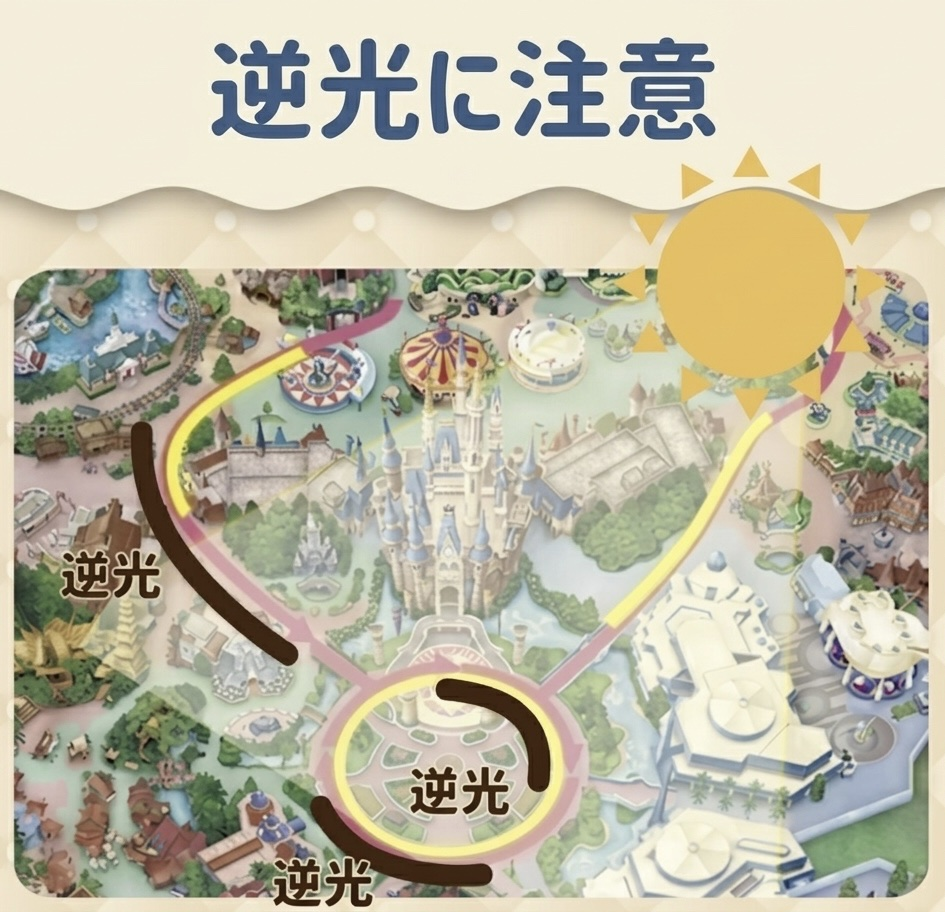
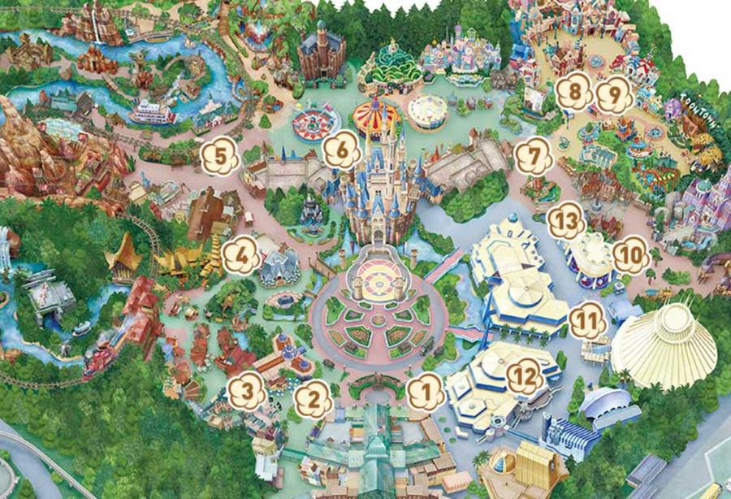
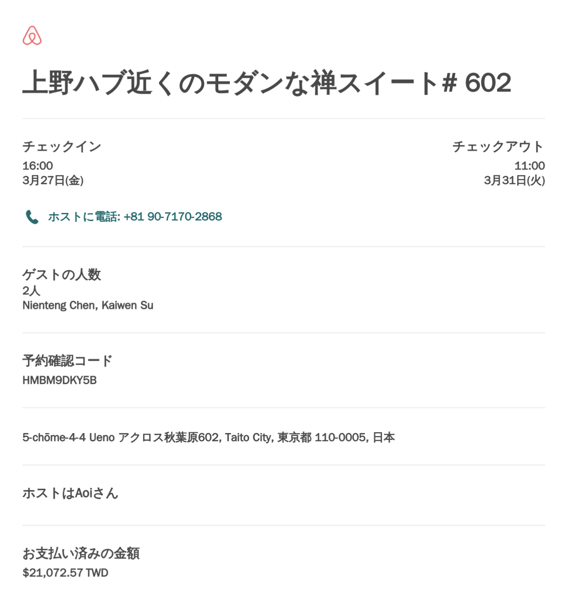
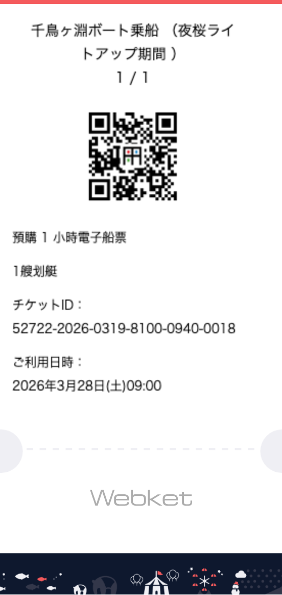
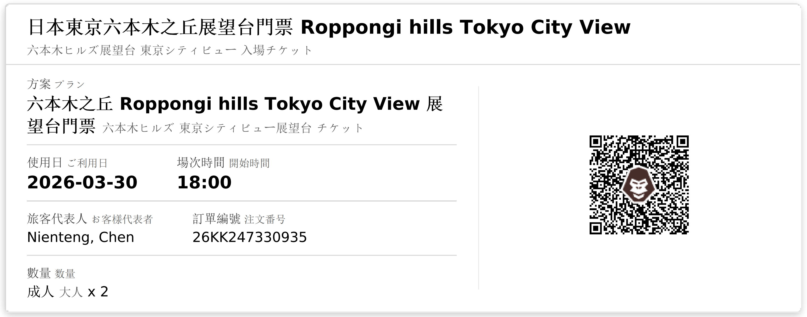
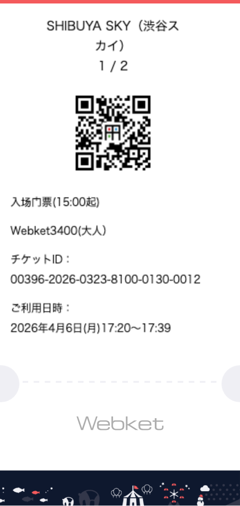
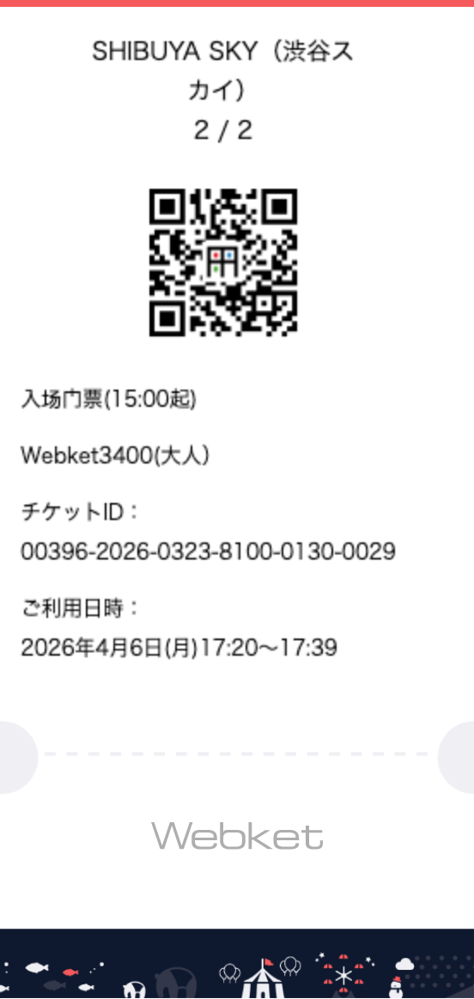

01
旅程總覽
13 Days · Tokyo Spring 2026
02
Day 1–4 · 東京市區
03.27 – 03.3009:00
🚗 國泰世華信用卡機場接送 出發
司機準時抵達高雄住家門口，直達桃園國際機場第二航廈，無需轉乘。
🚗 行程資訊
司機資訊｜出發前一日 18:00 後，司機姓名、車牌號碼將更新至肯驛電子票卡，請提前確認
車程時間｜高雄市區 → 桃園機場，行車約 3 至 3.5 小時（視高速公路路況）
預計抵達｜約 12:00–12:30 抵達桃園機場第二航廈
補償機制｜若司機延誤超過 30 分鐘且確認無法抵達，可自行搭其他交通，最高補償 NT$1,200
車程時間｜高雄市區 → 桃園機場，行車約 3 至 3.5 小時（視高速公路路況）
預計抵達｜約 12:00–12:30 抵達桃園機場第二航廈
補償機制｜若司機延誤超過 30 分鐘且確認無法抵達，可自行搭其他交通，最高補償 NT$1,200
📋 搭乘注意
出示文件｜上車時需出示本人信用卡正卡及護照，兩者缺一不可
行李規定｜30 吋以上行李箱每件算 2 件，預約時已登記件數不可臨時增加
取消規定｜如需取消或變更，須於出發時間 24 小時前來電，否則視同使用一次並收取全額費用
行李規定｜30 吋以上行李箱每件算 2 件，預約時已登記件數不可臨時增加
取消規定｜如需取消或變更，須於出發時間 24 小時前來電，否則視同使用一次並收取全額費用
💡 客服專線：04-2206-1608（肯驛國際）｜或參照肯驛電子票卡訂單編號查詢
12:30
長榮航空 BR196 Check-in 櫃台（Terminal 2，長榮指定區域）。托運行李 23kg × 2 件。
✈️ 出境步驟
Step 1｜長榮 App 或現場 Check-in，托運行李，取得登機證
Step 2｜護照查驗（出境審查）
Step 3｜安全檢查（隨身行李 X 光）
Step 4｜進入免稅區，前往登機門（BR196 登機門請看航班顯示板）
Step 2｜護照查驗（出境審查）
Step 3｜安全檢查（隨身行李 X 光）
Step 4｜進入免稅區，前往登機門（BR196 登機門請看航班顯示板）
💡 長榮 App 可事先辦理網路 Check-in，節省現場排隊時間｜建議出發前確認座位號碼
15:20
✈️ EVA Air BR196 起飛
TPE → NRT，飛行約 3 小時 20 分。預計 19:20 抵達成田機場。
19:20
VJW QR Code 掃碼入境。完成後前往 B1F 京成電鐵售票處購買 Skyliner 票。
⚠️ Skyliner 需另購特急券，Suica 無法直接搭乘！
🎫 購票資訊
購票地點｜B1F「Skyliner & Keisei 服務中心」或自動售票機，售票至約 23:30，可刷信用卡
票價｜¥2,465／人（IC 卡支付），全車對號入座，車廂設大型行李架
末班車｜22:30 成田出發，約 21:06 可搭的班次最穩妥
票價｜¥2,465／人（IC 卡支付），全車對號入座，車廂設大型行李架
末班車｜22:30 成田出發，約 21:06 可搭的班次最穩妥
20:10
搭乘 Skyliner 往京成上野方向，在 日暮里站（Nippori） 下車，車程約 36 分鐘。
下車站｜注意車廂螢幕或廣播，看到「日暮里（Nippori）」時準備下車
停靠站｜Skyliner 只停成田 → 日暮里 → 京成上野，不會坐過站
停靠站｜Skyliner 只停成田 → 日暮里 → 京成上野，不會坐過站
20:50
🔄 日暮里站
下 Skyliner 後轉乘 JR 山手線（外回り）或 JR 京濱東北線（往大船方向），搭 1 站到 御徒町站，車程約 2 分鐘。
🗺️ 跟著這些標示走
Step 1｜下 Skyliner 後，月台上找「JR 連絡口」或「JR 換乘」標示，往 JR 方向走，刷 Suica 出站
Step 2｜進 JR 改札後，找「山手線・京濱東北線」月台標示，月台在地上層，搭手扶梯或樓梯上去
Step 3｜月台上注意看電光板，選「外回り（Outer Loop）」或「大船・蒲田方向」的車。⚠️ 不要搭「内回り（Inner Loop）」，那是往上野・池袋方向，會多繞一圈
Step 4｜搭上車後，下一站即為「御徒町（Okachimachi）」，廣播到即準備下車
Step 2｜進 JR 改札後，找「山手線・京濱東北線」月台標示，月台在地上層，搭手扶梯或樓梯上去
Step 3｜月台上注意看電光板，選「外回り（Outer Loop）」或「大船・蒲田方向」的車。⚠️ 不要搭「内回り（Inner Loop）」，那是往上野・池袋方向，會多繞一圈
Step 4｜搭上車後，下一站即為「御徒町（Okachimachi）」，廣播到即準備下車
💡 山手線與京濱東北線共用同一月台，最早到站的那班上就對了
🎫 劃位提醒｜購票時請記得劃位在 3 號車廂 · 1 排 A / B / C / D 座
21:00
🚶 御徒町站
從 北口（North Exit） 出站，步行約 5 分鐘抵達民宿。
出口選擇｜往「北口（North Exit）」方向出站，出站後即為 昭和通り 方向，路面寬，方向感好確認
步行路線｜出北口後往 西（上野方向） 步行約 3–4 分鐘，沿路可看到阿美橫丁入口，民宿在其附近的巷弄內
目標地址｜東京都台東區上野 5 丁目 4-4（樂可旅 秋葉原民宿）
備用方式｜若夜晚迷路，直接開 Google Maps 導航「上野5-4-4」即可抵達
步行路線｜出北口後往 西（上野方向） 步行約 3–4 分鐘，沿路可看到阿美橫丁入口，民宿在其附近的巷弄內
目標地址｜東京都台東區上野 5 丁目 4-4（樂可旅 秋葉原民宿）
備用方式｜若夜晚迷路，直接開 Google Maps 導航「上野5-4-4」即可抵達
22:00
東京都台東區上野 5 丁目 4-4，從御徒町站步行約 5 分鐘。Check-in 後可考慮附近宵夜：
入住指南｜https://ksagency.com/akurosuakihabara602instruction
房間號碼｜602 號
入口門密碼｜呼出 5963（「呼出」為日式按鈕符號）
房間密碼｜2252LOCKSTATE
房間指南｜https://ksagency.com/akurosuakihabara602
房間號碼｜602 號
入口門密碼｜呼出 5963（「呼出」為日式按鈕符號）
房間密碼｜2252LOCKSTATE
房間指南｜https://ksagency.com/akurosuakihabara602
御徒町站 → 九段下站（約 25 分）｜步行至御徒町站 → 搭 JR 京濱東北線 至秋葉原站 → 換乘東京Metro 東西線（往中野・三鷹方向）→ 九段下站下車（約 3 站）→ 步行約 7 分至千鳥之淵
08:00
🌸 千鳥之淵
🚣 預約划船時間 09:00・出發前備妥船票 QR Code
千鳥之淵（千鳥ヶ淵）是東京數一數二的賞櫻名所，位於皇居西北側護城河沿岸，因傳說花瓣飄落水面如千鳥展翼而得名。每年三月底至四月初，約 260 棵染井吉野櫻沿全長 700 公尺的綠道盛開，花枝垂落水面，構成一幅粉色仙境。步道單向通行，從靖國通り入口出發，一路走至半藏門方向，沿途可拍到花枝倒映在護城河水面的夢幻畫面。千代田區每年舉辦「千代田櫻花祭」，活動期間（3/28 起）夜間點燈至 21:00，白天與夜晚各有不同風情。
📸 拍照攻略
🌸 護城河中央仰拍兩岸垂櫻是千鳥之淵最經典構圖
🌅 清晨 8:00 前光線柔和，人潮稀少，是絕佳拍攝時機
🌃 夜間點燈期間（約 18:00 後）燈光映照水面，適合拍夜櫻倒影
📱 建議用廣角或橫向構圖，將步道、水面、花枝三者納入同一畫面
🌅 清晨 8:00 前光線柔和，人潮稀少，是絕佳拍攝時機
🌃 夜間點燈期間（約 18:00 後）燈光映照水面，適合拍夜櫻倒影
📱 建議用廣角或橫向構圖，將步道、水面、花枝三者納入同一畫面
💡 步道全長 700m，單程約 15–20 分鐘；攝影人多時建議往靠近半藏門側移動，人潮相對少
🎫 預約資訊
預約時間｜09:00（Webket線上購票完成 ✅）
入場方式｜出示購票 QR Code 掃碼入場，請提前確認票券 App 可正常開啟
驗票地點｜千鳥之淵乘船碼頭入口處的「事前購入者専用 乗船受付（Digital Ticket Reception）」
抵達時間｜所有乘客需於 08:50 前到達售票口，預留驗票及找停靠點的時間
入場方式｜出示購票 QR Code 掃碼入場，請提前確認票券 App 可正常開啟
驗票地點｜千鳥之淵乘船碼頭入口處的「事前購入者専用 乗船受付（Digital Ticket Reception）」
抵達時間｜所有乘客需於 08:50 前到達售票口，預留驗票及找停靠點的時間
⚠️ 乘船安全規則
❌ 乘船中禁止換座位或起身站立（有落水危險）
❌ 雨天、強風、水位異常時暫停營業
⚠️ 北側石垣（石牆）目前有崩落危險，南側部分區域封閉，請勿駛入禁區
📱 當日最新營業狀態請確認官方 X（Twitter）：@chidori_boat
❌ 雨天、強風、水位異常時暫停營業
⚠️ 北側石垣（石牆）目前有崩落危險，南側部分區域封閉，請勿駛入禁區
📱 當日最新營業狀態請確認官方 X（Twitter）：@chidori_boat
💡 體驗建議
🌸 划至護城河中央，仰望兩岸垂落水面的染井吉野，是千鳥之淵最經典的視角
📸 建議攜帶手機夾或腕帶，避免拍照時滑落水中
⏱️ 遊船時間 60 分鐘，回程需準時返回碼頭，超時需補繳延長費用
📸 建議攜帶手機夾或腕帶，避免拍照時滑落水中
⏱️ 遊船時間 60 分鐘，回程需準時返回碼頭，超時需補繳延長費用
步行約 5 分鐘｜千鳥之淵沿坡道往北走，靖國神社大鳥居即在眼前
09:00
⛩️ 靖國神社
靖國神社於 1869 年（明治 2 年）由明治天皇下旨建立，祭祀幕府末期至二戰期間為國犧牲的 246 萬餘位英靈，是日本近代史上極具象徵意義的神社。境內廣達 9 萬平方公尺，氣氛莊嚴肅穆，高達 25 公尺的鋼製大鳥居是銀座通往神社的地標。神社境內種有 500 株以上的染井吉野櫻與大島櫻，是東京市中心最重要的賞櫻地點之一。更特別的是——靖國神社的標本木每年開花，即是日本氣象廳發布東京都心「東京櫻花開花宣言」的依據，樹齡超過百年的吉野櫻在參道兩旁盛放，每逢花季湧入大批日本人與觀光客。
🗺️ 參觀重點
⛩️ 大鳥居 & 參道｜25 公尺高鋼管製鳥居，百年吉野櫻夾道，最佳春日散步路線
🌸 賞櫻 & 夜櫻｜春季境內點燈至晚間，攤販進駐，氣氛熱鬧；標本木就在本殿旁
🏛️ 遊就館（免費部分）｜日本歷史最悠久的軍事博物館（1882 年創立）；入口展示的零式戰機與 C56 型蒸汽火車頭為免費參觀亮點
🎋 靖泉亭 & 行雲亭｜境內日式庭園茶亭，可小坐片刻感受傳統氛圍
🌸 賞櫻 & 夜櫻｜春季境內點燈至晚間，攤販進駐，氣氛熱鬧；標本木就在本殿旁
🏛️ 遊就館（免費部分）｜日本歷史最悠久的軍事博物館（1882 年創立）；入口展示的零式戰機與 C56 型蒸汽火車頭為免費參觀亮點
🎋 靖泉亭 & 行雲亭｜境內日式庭園茶亭，可小坐片刻感受傳統氛圍
💡 境內免費入場（遊就館常設展另收費 ¥1,000）；3–10 月開放至 18:00；春祭期間有奉納夜桜能と神楽表演
地鐵約 20 分鐘｜靖國神社步行 5 分 → 九段下站（東西線）→ 搭至日本橋站 → 換銀座線至銀座站下車 → 步行 5 分至銀座 4 丁目
11:00
📅 預約時間：11:00・預約平台：ebisol
⚠️ 名店排隊熱門，請準時抵達勿遲到！
炸豬排 檍（Aoki）是東京炸豬排名店，2019–2025 年連續獲得米其林一星肯定，Tabelog 百名店常客。以嚴選「林 SPF 豚」著稱——這種豬脂肪甘甜、肉質柔軟、肉汁豐富，是店內靈魂食材。銀座 4 丁目店位於銀座柳大樓 5F，搭電梯前往。
🍽️ 點餐重點
網友最推 No.1｜特ロースかつ定食（特選里肌豬排套餐）（特選里肌，約 ¥2,300）— 中心帶粉嫩感的完美火候，脂肪香甜，口感一流
網友最推 No.2｜特ヒレかつ定食（特選菲力豬排套餐）（特選菲力，約 ¥2,800）— 口感更清爽細緻，無明顯肥脂，適合喜歡瘦肉者
猶豫款推薦｜ハーフ＆ハーフかつ定食（半半豬排套餐：里肌＋菲力）（里肌＋菲力各半，約 ¥1,800）— 同時體驗兩種口感，初訪首選
套餐內容｜附白飯（佐渡米）、豬肉味噌湯、高麗菜絲無限追加
網友最推 No.2｜特ヒレかつ定食（特選菲力豬排套餐）（特選菲力，約 ¥2,800）— 口感更清爽細緻，無明顯肥脂，適合喜歡瘦肉者
猶豫款推薦｜ハーフ＆ハーフかつ定食（半半豬排套餐：里肌＋菲力）（里肌＋菲力各半，約 ¥1,800）— 同時體驗兩種口感，初訪首選
套餐內容｜附白飯（佐渡米）、豬肉味噌湯、高麗菜絲無限追加
🧂 必試吃法
桌上備有 4 種鹽（粟國の塩・沖繩海鹽、ヒマラヤ岩塩・喜馬拉雅岩鹽、ピンクソルト・玫瑰岩鹽、ナマック岩塩・那馬克岩鹽）：
→ 第一口：先加粟國の塩（沖繩海鹽）感受豬肉原味
→ 第二口：換岩塩或ソース嘗試對比，網友一致認為「鹽比醬汁更能引出肉香」
→ 硫磺香氣的「ナマック岩塩（那馬克喜馬拉雅岩鹽）」風味獨特，不可不試
→ 第一口：先加粟國の塩（沖繩海鹽）感受豬肉原味
→ 第二口：換岩塩或ソース嘗試對比，網友一致認為「鹽比醬汁更能引出肉香」
→ 硫磺香氣的「ナマック岩塩（那馬克喜馬拉雅岩鹽）」風味獨特，不可不試
💬 網友口碑
「中心粉嫩的完美火候，衣薄酥脆，咬下去脂肪的香甜讓人難忘」
「排隊等了 20 分但完全值得，是我吃過最好吃的炸豬排」
「夜間時段比午間好進，不用大排長龍」
「排隊等了 20 分但完全值得，是我吃過最好吃的炸豬排」
「夜間時段比午間好進，不用大排長龍」
步行約 3–5 分鐘｜銀座 4 丁目一帶即為步行者天國範圍，用餐後直接步行前往
12:30
🚶 銀座 步行者天國
銀座步行者天國（歩行者天国）是東京最具代表性的週末街景體驗——每逢週六、週日及國定假日 12:00–17:00，銀座中央通り（銀座 1 丁目至 8 丁目，全長約 1.1 公里）全面封街，讓行人自由漫步於這條世界上地價最貴的街道之一。兩側精品旗艦店、百年老舖、國際品牌旗艦店林立，時而有街頭藝人表演點綴其中。週末的銀座同時舉辦各種期間限定快閃活動，氛圍遠比平日更加熱鬧優雅。 3/28 適逢週五，步行者天國雖未開放，但沿中央通り散步仍可感受銀座日間風情。
🗺️ 銀座逛街路線建議
銀座 4 丁目十字路口為中心（和光大鐘樓正前方），往北至銀座 1 丁目為上銀座，往南至銀座 8 丁目為下銀座，各有特色。從 4 丁目出發，依序可逛：和光 → 銀座伊東屋 → GINZA SIX → 銀座三越 → 無印良品旗艦 → UNIQLO 旗艦 → 博品館 → Ushigoro → Little Smith，一條線完整走完不走回頭路。
步行約 5–8 分鐘｜在銀座區內步行，依 Google Maps 導航至 Ushigoro Ginza（ONE GINZA 7F）即可
17:00
📅 預約時間：17:00・預約平台：Google
推薦「極みコース（頂級套餐）」或「季節の匠コース（季節匠師套餐）」，才有套餐中的夢幻單品「菲力牛排三明治」
Ushigoro Ginza（牛五郎 銀座）位於 ONE GINZA 7F，是東京頂級燒肉餐廳，Tabelog 評分 4.4，2024 年燒肉百名店入選。以嚴選 A5 等級黑毛和牛希少部位著稱，每桌獨立排風設計，全程由服務人員在桌邊代烤。
🍽️ 套餐選擇重點
極みコース・頂級套餐（¥11,000）｜約 18 品，含牛舌、炙燒、牛內臟、冷麵，份量豐富，品項多樣，附飲放，適合想全面體驗的人
季節の匠コース・季節匠師套餐（¥26,000 前後）｜季節限定食材入饌，含夢幻單品「菲力牛排三明治」，由主廚精選當日最高品質部位，是五週年紀念的最佳選擇
兩者均有｜服務人員全程代烤，可依喜好告知熟度，不善燒肉也能輕鬆享用
季節の匠コース・季節匠師套餐（¥26,000 前後）｜季節限定食材入饌，含夢幻單品「菲力牛排三明治」，由主廚精選當日最高品質部位，是五週年紀念的最佳選擇
兩者均有｜服務人員全程代烤，可依喜好告知熟度，不善燒肉也能輕鬆享用
⭐ 點餐亮點 & 網友推薦
🥪 菲力牛排三明治｜夢幻必吃單品，僅「季節の匠コース（季節匠師套餐）」以上才有，入口即化的菲力搭配鬆軟吐司，是全場最期待的一道
🥩 ザブトンのすき焼き（頸部沙朗壽喜燒）｜極みコース（頂級套餐）收錄，脂肪交融的頸部希少部位以壽喜燒方式呈現，甘甜醬汁完美提香
🫙 キャビアタルタル（魚子醬和牛韃靼）｜套餐開場前菜，和牛韃靼搭魚子醬，奢華組合令人印象深刻
🌀 和牛手巻き｜口感清爽，以海苔包覆和牛與醋飯，網友評為「必吃 Top 推薦」
🍛 最後可選冷麵或咖哩飯收尾，建議選咖哩飯，與和牛油脂完美平衡
🥩 ザブトンのすき焼き（頸部沙朗壽喜燒）｜極みコース（頂級套餐）收錄，脂肪交融的頸部希少部位以壽喜燒方式呈現，甘甜醬汁完美提香
🫙 キャビアタルタル（魚子醬和牛韃靼）｜套餐開場前菜，和牛韃靼搭魚子醬，奢華組合令人印象深刻
🌀 和牛手巻き｜口感清爽，以海苔包覆和牛與醋飯，網友評為「必吃 Top 推薦」
🍛 最後可選冷麵或咖哩飯收尾，建議選咖哩飯，與和牛油脂完美平衡
💬 網友口碑
「從前菜到最後的手巻き，每一口都是幸福，服務人員笑容讓整頓飯超加分」
「極みコース（頂級套餐）份量驚人，18 道菜要有點速度，好好享受每一品」
「若有不吃的部位可提前告知，主廚會替換，非常貼心」
「極みコース（頂級套餐）份量驚人，18 道菜要有點速度，好好享受每一品」
「若有不吃的部位可提前告知，主廚會替換，非常貼心」
💡 週末 17:00 起接受晚餐，入座後可再次確認套餐當日食材組合
步行即達｜用餐後直接回到銀座步行者天國範圍繼續逛街，無需搭車
19:00
步行約 3–5 分鐘｜Little Smith 位於銀座 6 丁目巷弄內（B2F），依 Google Maps 導航前往
21:00
Little Smith 於 1993 年在銀座開業，是東京最受推崇的正統 Authentic Bar 之一，也是銀座深夜文化的代表性地標。位於地下 2 樓，以高達 4 公尺的天花板、馬蹄形（橢圓形）吧台與低調的燈光著稱，整個空間充滿洞穴般的神秘感——進入那瞬間就彷彿與外面的喧囂隔絕。調酒師皆為正統訓練出身，多次獲得日本及國際調酒大賽肯定，曾奪得 2012 年世界調酒大賽冠軍的「Shining Bloom」是鎮店之作。菜單無固定文字，入座後直接告知調酒師你的偏好（甜度、烈度、喜愛的基酒或心情）即可，讓師傅為你量身調製。每晚都有「Today's Seasonal Cocktail」搭配當季水果，是 Little Smith 的標誌性體驗。
🍸 入店指南
💺 馬蹄形吧台共約 20 席，另有少量桌席；建議入座吧台可近距離欣賞調酒過程
💬 告知調酒師「喜歡什麼基酒、甜或不甜、今晚的心情」即可，無需點名特定酒款
🍊 Today's Seasonal Fruit Cocktail 是招牌必點，以當天入荷水果現場調製
💴 チャージ・席費（入場費）¥1,650，含洋蔥湯與前菜；雞尾酒單杯約 ¥1,500–¥2,500
🚬 店內允許吸菸，介意煙味者可事先詢問座位安排
⏰ 營業至翌日凌晨 3:00（平日），是銀座深夜最優雅的去處
💬 告知調酒師「喜歡什麼基酒、甜或不甜、今晚的心情」即可，無需點名特定酒款
🍊 Today's Seasonal Fruit Cocktail 是招牌必點，以當天入荷水果現場調製
💴 チャージ・席費（入場費）¥1,650，含洋蔥湯與前菜；雞尾酒單杯約 ¥1,500–¥2,500
🚬 店內允許吸菸，介意煙味者可事先詢問座位安排
⏰ 營業至翌日凌晨 3:00（平日），是銀座深夜最優雅的去處
💡 從銀座站 C2 番出口步行約 5 分鐘；可網路預約或直接前往，週末較熱門建議提前訂位
08:50
⏰ 限定早餐 09:00–09:10，僅 10 分鐘！08:50 前務必到場排隊
うさぎや（兔屋）創立於 1913 年，是東京百年和菓子名店，Tabelog 點心類評分第一，與淺草龜十、東十條草月並稱「東京三大銅鑼燒」。招牌銅鑼燒使用北海道十勝產紅豆、麵糊加入蜂蜜，外皮 Q 彈光滑、紅豆餡香甜不膩，是東京最值得一吃的和菓子之一。
正對面的 うさぎやCAFÉ 每天早上 09:00–09:10，限時 10 分鐘提供「現烤銅鑼燒早餐」——店員以百米衝刺速度將剛出爐的餅皮從本店跑過來，你能吃到的是全上野最新鮮、最燙口的銅鑼燒。過了 09:10 就只能點一般甜點，無緣限定早餐。
正對面的 うさぎやCAFÉ 每天早上 09:00–09:10，限時 10 分鐘提供「現烤銅鑼燒早餐」——店員以百米衝刺速度將剛出爐的餅皮從本店跑過來，你能吃到的是全上野最新鮮、最燙口的銅鑼燒。過了 09:10 就只能點一般甜點，無緣限定早餐。
🍡 點餐指南
🥞 限定早餐套餐｜銅鑼燒 4 片（附奶油 + 十勝紅豆餡）+ 飲品，09:00–09:10 唯一選項
🧈 推薦吃法｜第 1 片趁熱塗奶油對折，讓餘溫融化奶油；第 2 片後再加紅豆餡一起享用
☕ 飲品選擇｜熱煎茶、焙茶、玄米茶、焙煎咖啡，或冰煎茶；咖啡可免費續杯
💴 費用｜套餐含飲品約 ¥1,000–¥1,200
🧈 推薦吃法｜第 1 片趁熱塗奶油對折，讓餘溫融化奶油；第 2 片後再加紅豆餡一起享用
☕ 飲品選擇｜熱煎茶、焙茶、玄米茶、焙煎咖啡，或冰煎茶；咖啡可免費續杯
💴 費用｜套餐含飲品約 ¥1,000–¥1,200
⚠️ 注意事項
🕗 店內只有 4–5 桌，建議 08:50 前到達排隊，09:05 後到只能排隊等第二輪
📅 週三公休（3/29 為週六，可正常前往）
🏪 用餐後可順道去對面本店購買外帶銅鑼燒，常溫保存僅一天，當日食用最佳
📅 週三公休（3/29 為週六，可正常前往）
🏪 用餐後可順道去對面本店購買外帶銅鑼燒，常溫保存僅一天，當日食用最佳
地址：東京都台東區上野 1-11-5（從民宿步行約 8 分鐘）
步行約 5 分鐘｜沿上野恩賜公園方向步行，JR 上野站公園口入口即達
09:00
上野恩賜公園是東京最具代表性的賞櫻名所，1873 年設立，是日本最早的公園之一，入選「日本櫻花百選」。公園內種植了約 40 個品種、近 1,000 株櫻花樹（其中約 800 株染井吉野），每年三月底四月初百花齊放，是東京賞花人潮最密集的地方。每年「上野さくらまつり」活動期間（3/15–4/6）設有 1,000 盞燈籠，夜間點燈至 21:00，白天與夜晚各具風情。
公園歷史可上溯至江戶時代東叡山寬永寺境內，德川三代將軍家光最初種下第一批櫻花樹，此後歷代將軍持續增植，使上野成為江戶最著名的花見勝地。
公園歷史可上溯至江戶時代東叡山寬永寺境內，德川三代將軍家光最初種下第一批櫻花樹，此後歷代將軍持續增植，使上野成為江戶最著名的花見勝地。
🌸 賞櫻路線建議（純賞景版）
🌸 ① 公園入口枝垂櫻｜京成上野站出口附近，枝垂櫻比公園內其他品種早 4 天開放，春季最早的驚喜
🌸 ② 櫻花通（中央園路）｜800 株染井吉野並排成隧道，是上野最震撼的主景，路燈夜間亦點燈
🏛️ ③ 清水觀音堂｜仿京都清水寺「舞台造」風格的 1631 年古堂，旁邊有「月の松」圓形松樹，可透過圓圈拍攝不忍池弁天堂，是歌川廣重浮世繪的經典構圖
🏞️ ④ 不忍池｜公園南側的天然湖泊，沿岸滿植染井吉野，花枝垂落湖面，景色更為靜謐優美，人潮比主園路少、更好拍照；中央有弁天堂，祭祀掌管音樂財富的弁財天女神
🌸 ② 櫻花通（中央園路）｜800 株染井吉野並排成隧道，是上野最震撼的主景，路燈夜間亦點燈
🏛️ ③ 清水觀音堂｜仿京都清水寺「舞台造」風格的 1631 年古堂，旁邊有「月の松」圓形松樹，可透過圓圈拍攝不忍池弁天堂，是歌川廣重浮世繪的經典構圖
🏞️ ④ 不忍池｜公園南側的天然湖泊，沿岸滿植染井吉野，花枝垂落湖面，景色更為靜謐優美，人潮比主園路少、更好拍照；中央有弁天堂，祭祀掌管音樂財富的弁財天女神
📸 拍攝攻略
🌅 早上 9:00–10:00 最佳，光線柔和且人潮最少
📷 清水觀音堂的「月の松」圓形構圖是最受歡迎的拍照打卡點
🏞️ 不忍池沿岸花枝垂湖面的倒影，比主園路更上鏡
📷 清水觀音堂的「月の松」圓形構圖是最受歡迎的拍照打卡點
🏞️ 不忍池沿岸花枝垂湖面的倒影，比主園路更上鏡
💡 公園免費入場，24 小時開放；動物園、博物館另收費（本次不安排）；如欲野餐可在超商買好再來
步行約 15 分鐘｜沿阿美橫丁方向往南走，或搭地鐵銀座線 上野站→仲御徒町站（1 站）步行 3 分鐘
11:00
あいだや（Aidaya）於 2023 年 10 月在御徒町開幕，是米其林必比登餐廳「らぁめん小池」集團第 7 號店，開業即成排隊名店。最大特色是沾醬可以同時選擇 2 種——共 4 種沾汁：蝦（えび）、坦坦（擔擔）、豚骨、正油，兩兩搭配隨心選，全東京幾乎找不到第二家這樣的沾麵店。麵條為自家製中太麵，加入烏龍麵粉（50%），口感比一般沾麵更彈韌有嚼勁；冷盛和熱湯（釜揚げ）兩種溫度可選。
🍽️ 點餐重點
🦐 えびつけ麺（蝦沾麵）｜女性人氣第一，帶有番茄香氣的洋風蝦湯，口感清爽卻層次豐富
🌶️ 坦々つけ麺（擔擔沾麵）｜花椒香氣迷人，重口味首選
🥩 黒毛和牛サーロイン飯（黑毛和牛沙朗飯）｜名物必點，現場將 A5 沙朗放入壽喜燒鍋中燒製，搭配溫泉蛋，¥1,000｜超級值得加點
🍜 麵量｜基本量、大盛（大份）免費加量，食量大可選大盛
🌡️ 麵溫度｜春季推薦冷盛（口感更 Q 彈），冬季則選釜揚げ（溫熱）
🌶️ 坦々つけ麺（擔擔沾麵）｜花椒香氣迷人，重口味首選
🥩 黒毛和牛サーロイン飯（黑毛和牛沙朗飯）｜名物必點，現場將 A5 沙朗放入壽喜燒鍋中燒製，搭配溫泉蛋，¥1,000｜超級值得加點
🍜 麵量｜基本量、大盛（大份）免費加量，食量大可選大盛
🌡️ 麵溫度｜春季推薦冷盛（口感更 Q 彈），冬季則選釜揚げ（溫熱）
⚠️ 注意事項
⏰ 平日 11:00 開門即開始排隊，人潮很多，建議 10:45 前到場
📱 可用 SuiSui App 付 ¥500 取得優先入場資格（免排隊）
🏢 位於御徒町グリーンハイツ大樓 B1，門口不顯眼，沿巷弄找招牌
📱 可用 SuiSui App 付 ¥500 取得優先入場資格（免排隊）
🏢 位於御徒町グリーンハイツ大樓 B1，門口不顯眼，沿巷弄找招牌
地址：台東區上野 6-1-6 御徒町グリーンハイツ 101B｜從兔屋步行約 8 分鐘
地鐵約 10 分鐘｜御徒町站→淺草站（東京Metro 銀座線，4 站）→ 步行 5 分鐘至淺草寺
13:30
淺草寺（浅草寺）創建於 628 年，是東京最古老的寺廟，也是全日本年間參拜人數最多的寺院，每年吸引超過 3,000 萬人次。從飛鳥時代流傳至今，寺廟供奉觀世音菩薩，是庶民信仰的精神核心。雷門（風雷神門）大燈籠重達 670kg，是淺草最標誌性的地標。穿過雷門後，仲見世通全長 250m，兩側 89 間老舖銷售各式傳統點心與伴手禮，是日本現存最古老的商店街之一。
🗺️ 必看重點
🏮 雷門｜正中大燈籠重 670kg、直徑 3.9m，正面寫「風雷神門」，背面寫「天龍・金龍」；人多時走到馬路對面拍全景
🛍️ 仲見世通｜人形燒（にんぎょうやき，¥300 起）、雷米果、扇子、手拭巾、彩繪小物皆宜；早上 9:30 前多數店家才開門
🎋 御神籤（おみくじ）｜本堂前抽籤箱，¥100；抽到凶籤請綁在架上留在寺廟，不要帶走
🗼 五重塔｜境內西側，創建於 942 年，現為重建版，清晨光線優美
🌸 春季限定｜境內有枝垂櫻，寶藏門前尤其美，寺廟朱色與粉色形成絕美對比
🛍️ 仲見世通｜人形燒（にんぎょうやき，¥300 起）、雷米果、扇子、手拭巾、彩繪小物皆宜；早上 9:30 前多數店家才開門
🎋 御神籤（おみくじ）｜本堂前抽籤箱，¥100；抽到凶籤請綁在架上留在寺廟，不要帶走
🗼 五重塔｜境內西側，創建於 942 年，現為重建版，清晨光線優美
🌸 春季限定｜境內有枝垂櫻，寶藏門前尤其美，寺廟朱色與粉色形成絕美對比
🍡 周邊必吃小吃
🍡 龜屋 吉備糰子｜仲見世通最古老的店之一，現烤米糰子 ¥150/串，香氣迷人
🥞 人形燒｜多家店家現做，拿著邊走邊吃最適合，¥300–¥500
🍵 蕨餅（わらびもち）｜附近多間老舖販售，濃郁黃豆粉包裹，外帶版 ¥500 起
🥞 人形燒｜多家店家現做，拿著邊走邊吃最適合，¥300–¥500
🍵 蕨餅（わらびもち）｜附近多間老舖販售，濃郁黃豆粉包裹，外帶版 ¥500 起
⚠️ 正殿（本堂）內禁止攝影；週末下午人潮極多，建議把握 13:30 入場，避開 14:30–16:00 的人潮高峰
🗺️ 周邊必訪景點 & 美食
步行約 10 分鐘｜淺草寺往東沿隅田川方向步行，穿過花川戸公園即達隅田公園入口
17:30
隅田公園的賞櫻歷史可追溯至江戶時代——1650 年代四代將軍德川家綱命人在隅田川兩岸種下第一批櫻樹，八代將軍吉宗再增植 100 株，數百年來成為東京最具歷史感的賞花場所，入選「日本さくら名所 100 選」。公園跨隅田川兩岸，台東區側約 510 株、墨田區側約 350 株，合計約 860 株的染井吉野與大島櫻同時盛開，形成沿隅田川延伸近 1 公里的壯麗櫻花並木。
最大亮點是隅田川對岸的東京晴空塔與滿開櫻花同框的構圖，是全東京最具代表性的「現代與傳統共存」春日景色，也是婚紗前拍的熱門地點。
最大亮點是隅田川對岸的東京晴空塔與滿開櫻花同框的構圖，是全東京最具代表性的「現代與傳統共存」春日景色，也是婚紗前拍的熱門地點。
🌸 散步路線
浅草駅 → 吾妻橋附近｜從浅草站步行 5 分鐘至公園入口，沿隅田川堤岸往北
🌸 吾妻橋 → 桜橋｜全長約 1km 的花見路線，途中不斷有晴空塔與花海同框的角度
🌉 すみだリバーウォーク｜可走對岸橋廊前往墨田區側，俯瞰兩岸同時盡收眼底
🌸 吾妻橋 → 桜橋｜全長約 1km 的花見路線，途中不斷有晴空塔與花海同框的角度
🌉 すみだリバーウォーク｜可走對岸橋廊前往墨田區側，俯瞰兩岸同時盡收眼底
🌃 夜間點燈資訊
🏮 點燈時間：日落後至 21:00（台東區、墨田區兩側均有）
📸 17:30 抵達剛好是日落前「Blue Hour」，白天花海漸入夜景的過渡期最美
🍢 祭典期間（3/16–4/6）沿途設有屋台攤販，可邊賞花邊吃串燒
📸 17:30 抵達剛好是日落前「Blue Hour」，白天花海漸入夜景的過渡期最美
🍢 祭典期間（3/16–4/6）沿途設有屋台攤販，可邊賞花邊吃串燒
💡 飲食帶入可（禁止火烤及 BBQ）；墨田區側禁止無人佔位置取場；廁所設有 4 處
步行約 5 分鐘｜從隅田公園往淺草六區方向步行，Chinya 位於花川戸 2 丁目
18:00
📅 預約時間：18:00・預約平台：Tablecheck
套餐流程：前菜→向付（生魚片）→壽喜燒→酒肴→口直し（清口小品）→吸物（清湯）→御飯→甜點
千葉家（Chinya）創立於 1880 年（明治 13 年），是東京歷史最悠久的壽喜燒（すき焼き）名店之一，超過 145 年歷史，目前已是家族第五代傳承。店名「千葉家」源自創業者姓氏，位於淺草花川戸的本店保留了昭和時代的老舖氛圍，多間包廂式榻榻米私室可供包場，私密而典雅。壽喜燒使用嚴選的黑毛和牛，以東京傳統的「牛鍋（牛なべ）」方式料理——先以砂糖、醬油炙燒牛肉鎖住香氣，再加入高湯共煮，與關西風先加湯底不同，風味更為濃郁深邃。
🍽️ 點餐重點
🥩 套餐制｜全套懷石式壽喜燒，¥10,800/人起（含前菜、生魚片、壽喜燒主菜、御飯、甜點）
🥚 蛋液蘸食｜牛肉熟後夾出，在生雞蛋液中蘸一下再食用，是東京壽喜燒的正宗吃法，蛋香裹住和牛脂肪，口感極佳
🍲 蔬菜配料｜麩（車麩）、蒟蒻、豆腐、長蔥、菊菜均為壽喜燒靈魂配角，吸飽醬汁後和牛肉不相上下
🍚 收尾｜以白飯搭配剩餘鍋底醬汁，或加麵條煮成雜炊（ぞうすい），是老饕吃法
🥚 蛋液蘸食｜牛肉熟後夾出，在生雞蛋液中蘸一下再食用，是東京壽喜燒的正宗吃法，蛋香裹住和牛脂肪，口感極佳
🍲 蔬菜配料｜麩（車麩）、蒟蒻、豆腐、長蔥、菊菜均為壽喜燒靈魂配角，吸飽醬汁後和牛肉不相上下
🍚 收尾｜以白飯搭配剩餘鍋底醬汁，或加麵條煮成雜炊（ぞうすい），是老饕吃法
💬 網友口碑
「146 年老店的壽喜燒，牛肉品質頂尖，和服服務生非常親切」
「用餐環境寧靜，包廂式座位讓整個晚餐非常享受」
「生雞蛋液配和牛，味道層次完全超乎想像，比一般壽喜燒更細緻」
「用餐環境寧靜，包廂式座位讓整個晚餐非常享受」
「生雞蛋液配和牛，味道層次完全超乎想像，比一般壽喜燒更細緻」
⚠️ 有英語菜單及英語服務人員；套餐需事前預約，到店後無法臨時加點散點
步行約 8 分鐘｜Chinya 往淺草六區（ロック座方向）步行，在淺草 2 丁目可見 ROCKZA 招牌
20:00
🎟️ 第 4 場公演 20:30–22:20・20:00 提前入場佔位
浅草ロック座 創立於 1947 年（二戰結束兩年後），是現存日本最古老、規模最大的藝術表演劇場，也是整個ロック座連鎖的旗艦店。它不是一般夜總會，而是融合舞蹈、戲劇、燈光、音效的正統表演藝術（Striptease Art）殿堂，表演者被稱為「踊り子（舞者）」，每位擁有獨立的演出節目，以精心設計的服裝、音樂、燈光與舞台表現呈現。每個月公演主題不同（如平安時代、江戶時代等），是當地文化的一部分，深受浅草居民珍視。約 2 小時公演，6–7 位舞者各約 15 分鐘演出，最後全體謝幕。
觀眾席約 129 席，另可站席 80 人。Google 評分 4.4 / 5.0，海外觀光客評為「東京最獨特的成人表演藝術體驗」。
觀眾席約 129 席，另可站席 80 人。Google 評分 4.4 / 5.0，海外觀光客評為「東京最獨特的成人表演藝術體驗」。
🎟️ 入場資訊
💴 票價｜一般 ¥6,000、女性 ¥5,000、學生 / 65歲以上 ¥4,000
📅 公演時間｜第 1 場 14:00–15:50 / 第 2 場 16:10–18:00 / 第 3 場 18:20–20:10 / 第 4 場 20:30–22:20（本次預定）
🎟️ 購票方式｜當日現場購票（無網路預訂），建議 20:00 前到場排隊取好位置
📱 劇場內禁止使用手機，請提前關機或靜音
📅 公演時間｜第 1 場 14:00–15:50 / 第 2 場 16:10–18:00 / 第 3 場 18:20–20:10 / 第 4 場 20:30–22:20（本次預定）
🎟️ 購票方式｜當日現場購票（無網路預訂），建議 20:00 前到場排隊取好位置
📱 劇場內禁止使用手機，請提前關機或靜音
💡 觀賞建議
💺 座位自由選擇，建議選中央（可看舞台全景）或旋轉舞台旁（可近距離欣賞）
🍺 劇場內不販售酒精飲料，可事先在附近便利商店購買帶入
👂 音效非常大聲，敏感者建議攜帶耳塞
🎭 一張票可觀看當日所有剩餘場次，不限場次，可連看至閉館
🍺 劇場內不販售酒精飲料，可事先在附近便利商店購買帶入
👂 音效非常大聲，敏感者建議攜帶耳塞
🎭 一張票可觀看當日所有剩餘場次，不限場次，可連看至閉館
地址：東京都台東區淺草 2-10-12 ロック座會館 2F｜18 歲以上方可入場
※ 表演者介紹根據官網公開資料及公開照片整理。景數（X景）為本期公演順序，以現場公告為準。
08:30
📦 寄送至：ヤマト運輸 渋谷千駄ヶ谷営業所止め・指定到達日 4/3
📝 到店後對話
向店員說：「営業所止め（えいぎょうしょどめ）でお願いします。」
索取粉紅色「元払い（預付）」單子填寫，寄件人需在現場付清運費
索取粉紅色「元払い（預付）」單子填寫，寄件人需在現場付清運費
📦 收件人資訊 お届け先
郵遞區號：〒151-0051
地址：東京都渋谷区千駄ヶ谷 3-38-10
店名：ヤマト運輸 渋谷千駄ヶ谷営業所止め (032970)
電話：+886972788169
收件人姓名：Nienteng Chen
地址：東京都渋谷区千駄ヶ谷 3-38-10
店名：ヤマト運輸 渋谷千駄ヶ谷営業所止め (032970)
電話：+886972788169
收件人姓名：Nienteng Chen
📤 寄件人資訊 ご依頼主
地址：東京都台東區上野 5丁目 4-4
🔑 關鍵指定欄位
送達希望日（お届け希望日）：4 月 3 日
希望時間（希望時間帯）：勾選「指定なし」（不指定）
品名：スーツケース (Suitcase) n個
備註：4/3 夜 または 4/4 午前 受取予定
希望時間（希望時間帯）：勾選「指定なし」（不指定）
品名：スーツケース (Suitcase) n個
備註：4/3 夜 または 4/4 午前 受取予定
⚠️ 付費完成後，務必保管收據（控え）。4/3 晚上至 4/4 早上到渋谷千駄ヶ谷營業所時，直接出示收據與護照給工作人員即可領取行李。
步行約 5 分鐘｜ヤマト営業所在上野 5 丁目，步行至 Egg Baby Cafe（上野 5 丁目）
09:30
位於御徒町高架橋下的蛋料理專門店，以各式雞蛋料理為主角，從早餐到下午茶全天供應。工業風空間，IG 人氣超旺，是上野一帶最具代表性的早午餐打卡點。
🍳 必點推薦
🥪 Egg Sandwich（玉子三明治）｜招牌必點，半熟蛋夾心綿密濃郁，趁熱吃最佳
🍮 Egg Baby Pudding（布丁）｜焦糖底滑嫩，網友一致評為「必點 No.1」
🍝 Egg Carbonara｜奶香濃郁，份量適中，午餐也適合
☕ Coffee｜評價出乎意料地好，搭餐最適合
🍮 Egg Baby Pudding（布丁）｜焦糖底滑嫩，網友一致評為「必點 No.1」
🍝 Egg Carbonara｜奶香濃郁，份量適中，午餐也適合
☕ Coffee｜評價出乎意料地好，搭餐最適合
⚠️ 平日午間也常排 30–40 分，建議 10:00 開門即到；有 2 樓座位，人多時可主動詢問；高架橋下位置獨特，導航搜尋「Egg Baby Cafe 御徒町」
步行 3 分鐘｜Egg Baby Cafe → 阿美橫丁，往上野站方向即達
11:00
阿美橫丁（アメヤ横丁・Ameyoko）是連接上野站至御徒町站的露天商店街，二戰後黑市起家，現為東京最熱鬧的庶民購物街之一，全長約 500m，約 400 間商店販售藥妝、海鮮乾貨、服飾等，廣播叫賣聲此起彼落。
🗺️ 本次預計必去
💡 阿美橫丁整體貴重物品請注意；各店定價差異不小，先比價再購買；OS Drug 需現金付款
地鐵約 20 分鐘｜御徒町站→恵比壽站（JR山手線，外回り，約 9 站）→步行 3 分鐘
13:00
🍣 松栄 恵比壽本店
📅 預約時間：13:00・預約平台：Tablecheck
松栄（まつえ）創立於 1966 年，是恵比壽最具代表性的老舖江戶前鮨店，近 60 年老舖，與燒肉名店「焼肉チャンピオン」同屬同一母公司，是恵比壽飲食界的老字號雙璧。位於恵比壽駅西口徒步 3 分鐘的絕佳位置，1 樓為吧台席、2 樓有個室座席（適合小包廂用餐）。標榜「只是用心對待食材、誠實面對客人」——不浮誇，卻是行家的口袋名單。
Tabelog 評分穩定，TripAdvisor 評分 4.6/5.0，名列恵比壽前 200 名餐廳，以午間 Omakase 超高 CP 值在日本美食圈口耳相傳。
Tabelog 評分穩定，TripAdvisor 評分 4.6/5.0，名列恵比壽前 200 名餐廳，以午間 Omakase 超高 CP 值在日本美食圈口耳相傳。
🍱 午間菜單
🌸 凛（りん）¥8,900｜前菜 + おまかせ 8 貫握壽司 + 赤出汁（味噌湯）
✨ 輝（かがやき）¥13,800｜前菜 + おまかせ 10 貫握壽司 + 吸物（清湯）
🎌 握り 10 貫（追加）｜可單獨加點，約 ¥2,500–¥4,000 視部位
✨ 輝（かがやき）¥13,800｜前菜 + おまかせ 10 貫握壽司 + 吸物（清湯）
🎌 握り 10 貫（追加）｜可單獨加點，約 ¥2,500–¥4,000 視部位
💬 網友口碑
「恵比壽を代表する町寿司、コスパが良すぎる本格江戸前」
「Chef Yuki Koyama was amazing—every dish was a masterpiece, one of my favourite Japanese meals ever」
「Omakase pacing was perfect, chef explained each piece, staff incredibly attentive」
「Chef Yuki Koyama was amazing—every dish was a masterpiece, one of my favourite Japanese meals ever」
「Omakase pacing was perfect, chef explained each piece, staff incredibly attentive」
⚠️ 最終入店時間 13:15；用餐約 1.5–2 小時；有英語菜單及服務人員
地鐵約 15 分鐘｜恵比壽站→六本木站（東京Metro 日比谷線，2 站）→步行 5 分鐘至毛利庭園
14:30
毛利庭園是六本木ヒルズ內的傳統回遊式日本庭園，保留了江戶時代毛利家宅邸的歷史地景。庭園中有小型瀑布、池塘、石燈籠，在周遭現代高樓的包圍下形成強烈對比——這份「都市中的寧靜」是東京最獨特的景觀之一。春季盛開的染井吉野讓整個庭園粉色籠罩，夜間亦有點燈，是六本木賞櫻的最佳隱密去處。免費入場，24 小時開放。
欅木坂（けやきざか通り）是六本木ヒルズ旁的林蔭道，兩側種植高大的欅樹（日本楓），春季花開與欅木嫩葉交錯，是日本雜誌常見的東京春日街景。高級精品店（Gucci、Cartier、Louis Vuitton）林立，即使不消費也值得慢步瀏覽。
欅木坂（けやきざか通り）是六本木ヒルズ旁的林蔭道，兩側種植高大的欅樹（日本楓），春季花開與欅木嫩葉交錯，是日本雜誌常見的東京春日街景。高級精品店（Gucci、Cartier、Louis Vuitton）林立，即使不消費也值得慢步瀏覽。
🌸 散步路線建議
🌳 毛利庭園｜從六本木ヒルズ主廣場往東南方向走，Maman 蜘蛛雕塑旁即入口
🕷️ Maman 蜘蛛雕塑｜高 9m 銅製巨型蜘蛛，Louise Bourgeois 作品，必拍地標
❤️ LOVE 雕塑｜Robert Indiana 的愛心作品，情侶打卡熱點
🌸 欅木坂通り｜從 Maman 雕塑旁沿坡道往下走，兩側即欅木坂林蔭大道
🕷️ Maman 蜘蛛雕塑｜高 9m 銅製巨型蜘蛛，Louise Bourgeois 作品，必拍地標
❤️ LOVE 雕塑｜Robert Indiana 的愛心作品，情侶打卡熱點
🌸 欅木坂通り｜從 Maman 雕塑旁沿坡道往下走，兩側即欅木坂林蔭大道
💡 毛利庭園免費、24H 開放；欅木坂高級精品店週日多數 11:00–20:00 營業
步行約 12 分鐘｜六本木ヒルズ → 麻布台ヒルズ（徒步，沿六本木通り往東南方向）
15:00
📅 入場時間：15:00–15:30・購票平台：官網
🎫 入場時間前24小時才會發放QRcode
teamLab Borderless 是由 teamLab 打造的全沉浸式數位藝術美術館，2024 年從台場遷入麻布台ヒルズ重開，面積比舊址更大（約 10,000m²），以「沒有邊界」為概念——作品之間互相流動連結，展覽不設固定路線，觀眾可自由漫步探索。是全球最受歡迎的互動數位藝術體驗之一，也是東京旅遊最熱門的預約行程。
✨ 必看展區
🌸 花舞森與未來の谷｜超大型花卉投影，隨觸摸改變，代表性必拍
🪞 光の粒子の世界｜無數光粒在空間中飛舞，走進去就成為光的一部分
🎨 Sketch Factory｜現場畫圖→掃描→投影在牆上變成 3D 動態，還能印在 T-shirt 上（¥2,000 起）
🌊 Universe of Water Particles｜瀑布水流投影貫穿整個空間，震撼視覺
🪞 光の粒子の世界｜無數光粒在空間中飛舞，走進去就成為光的一部分
🎨 Sketch Factory｜現場畫圖→掃描→投影在牆上變成 3D 動態，還能印在 T-shirt 上（¥2,000 起）
🌊 Universe of Water Particles｜瀑布水流投影貫穿整個空間，震撼視覺
💡 入場小技巧
👗 建議穿著白色或純色衣服，投影效果最佳
📱 要下載官方 App，可以閱讀作品的介紹說明跟互動
👟 可能需要大量行走，建議穿舒適鞋
⏱️ 建議停留 2–2.5 小時，才能完整體驗各展區
📱 要下載官方 App，可以閱讀作品的介紹說明跟互動
👟 可能需要大量行走，建議穿舒適鞋
⏱️ 建議停留 2–2.5 小時，才能完整體驗各展區
位於麻布台ヒルズ 地下 2 樓；門票已透過官網購買；入場時出示 QR code 即可
步行約 8 分鐘｜麻布台ヒルズ → 六本木ヒルズ森タワー 52F（Tokyo City View）
18:00
📅 預約時間：18:00・預約平台：KKday
Tokyo City View 位於六本木ヒルズ森タワー 52 樓，高度 250m，是全東京視角最獨特的展望台之一——不同於晴空塔的俯瞰式，這裡的樓層高度讓東京鐵塔幾乎在眼前平視，在春季晴朗時甚至可遠眺富士山。環繞整層的落地玻璃讓視野 360 度無死角，加上不像晴空塔那般人山人海，整體體驗更舒適從容。
18:00 抵達是黃金時段：剛好能看到日落後的「Blue Hour」，接著天色逐漸深藍，東京鐵塔亮燈，最後進入完整夜景模式——三種天光在同一次參觀中一次收齊。
18:00 抵達是黃金時段：剛好能看到日落後的「Blue Hour」，接著天色逐漸深藍，東京鐵塔亮燈，最後進入完整夜景模式——三種天光在同一次參觀中一次收齊。
📸 拍攝重點
🗼 東京鐵塔平視構圖｜南側窗，鐵塔幾乎與視線同高，是 Tokyo City View 獨有的構圖
🏔️ 富士山方向｜天氣晴朗時西側可見，春天可見雪頂
🌆 Rainbow Bridge + 台場｜南側遠景，夜景層次豐富
🌃 新宿摩天樓群｜北側，燈光璀璨
🏔️ 富士山方向｜天氣晴朗時西側可見，春天可見雪頂
🌆 Rainbow Bridge + 台場｜南側遠景，夜景層次豐富
🌃 新宿摩天樓群｜北側，燈光璀璨
🎟️ 入場資訊
💴 票價 ¥2,000（成人）；另有室外「スカイデッキ」加購 ¥500，風大但視野開闊
⏰ 館內有 Mori Art Museum、Sky Cafe 可搭配，預留 1.5–2 小時
🚪 從 3F 搭乘高速電梯直達 52F，單程約 50 秒
⏰ 館內有 Mori Art Museum、Sky Cafe 可搭配，預留 1.5–2 小時
🚪 從 3F 搭乘高速電梯直達 52F，單程約 50 秒
💡 KKday 已購票，出示 QR code 入場；若想加購屋頂スカイデッキ可現場購買
20:15
🍽️ 六本木 / 麻布台 覓食晚餐
在六本木或麻布台一帶隨意找間喜歡的店吃晚餐，吃完早點回民宿休息。
03
Day 5–6 · 富士山之旅
03.31 – 04.0107:00
🧳 Airbnb 民宿 Check-out
📦 行李處理
🧳 今日需帶走所有行李（大件行李 Day 4 已宅配至渋谷），確認房間內無遺忘物品
📸 離開前拍攝房間各角落照片，作為日後爭議的自保證據
🔑 房間鑰匙 / 感應卡按 Airbnb 房東說明歸還（通常放回收納盒或指定位置）
📸 離開前拍攝房間各角落照片，作為日後爭議的自保證據
🔑 房間鑰匙 / 感應卡按 Airbnb 房東說明歸還（通常放回收納盒或指定位置）
🏠 退房前確認清單
☐ 房間鑰匙 / 門卡已歸還
☐ 所有個人物品已取走（充電器、護照、錢包、藥品）
☐ 冰箱內食物已清空或按規定處理
☐ 垃圾依分類放至指定位置（日本垃圾分類嚴格，可燃 / 不可燃分開）
☐ 水龍頭、瓦斯爐已關閉
☐ 窗戶已關閉、空調已關
☐ 拍照存證後，在 Airbnb App 上完成退房
☐ 所有個人物品已取走（充電器、護照、錢包、藥品）
☐ 冰箱內食物已清空或按規定處理
☐ 垃圾依分類放至指定位置（日本垃圾分類嚴格，可燃 / 不可燃分開）
☐ 水龍頭、瓦斯爐已關閉
☐ 窗戶已關閉、空調已關
☐ 拍照存證後，在 Airbnb App 上完成退房
⚠️ 退房後請在 App 上通知房東，避免額外費用。如有任何損壞請主動回報，勿等房東發現。
步行約 5 分鐘｜民宿（台東區上野 5-4-4）→ JR 上野站 公園口
07:30
📅 集合時間：07:30・Klook 已購票✅・找持藍色旗幟導遊

集合地點說明
集合地點為 JR 上野站 公園口（公園改札）出口外廣場，即面對上野恩賜公園的出口。出站後往公園方向走，在廣場上找持有藍色旗幟的導遊集合。
🚩 導遊識別：藍色旗幟｜集合後導遊會點名確認人數，請出示 Klook 訂單憑證 QR Code
🚌 交通方式：全程搭乘遊覽車，不需要自行安排交通
🚩 導遊識別：藍色旗幟｜集合後導遊會點名確認人數，請出示 Klook 訂單憑證 QR Code
🚌 交通方式：全程搭乘遊覽車，不需要自行安排交通
🗓️ 行程概要（Klook 富士山・河口湖一日遊）
07:30 上野站出發 → 富士山五合目（約 11:00）→ 河口湖（約 12:30）→ 手工藝公園 Craft Park 午餐 → 忍野八海 → 御殿場 Premium Outlets → 19:00 返回新宿
⚠️ 本次於 12:30 河口湖 / Craft Park 午餐後自行脫隊，不繼續跟隨旅遊團後段行程
⚠️ 本次於 12:30 河口湖 / Craft Park 午餐後自行脫隊，不繼續跟隨旅遊團後段行程
💡 出發前準備
📱 Klook App 保留訂單截圖（離線備用）
🧥 富士山五合目海拔 2,305m，氣溫比市區低 10–15°C，請備保暖外套
💊 有暈車傾向者請提前服用暈車藥
🎒 小背包帶必需品，大件行李今日已全數帶走
🧥 富士山五合目海拔 2,305m，氣溫比市區低 10–15°C，請備保暖外套
💊 有暈車傾向者請提前服用暈車藥
🎒 小背包帶必需品，大件行李今日已全數帶走
11:00
富士山五合目（富士スバルライン五合目）海拔 2,305m，是一般觀光客能抵達的最高車道終點，也是富士山登山道的起點。從這裡已可感受高山稀薄空氣，並俯瞰雲海與河口湖全景。設有土產商店、餐廳、神社（小御嶽神社），是富士山旅遊的核心景點。
🏔️ 注意事項
🌡️ 氣溫比市區低 10–15°C（3月底氣溫約 0–5°C），務必穿著厚外套、手套
😮💨 高海拔空氣稀薄，初抵可能有輕微高山反應（頭暈、氣喘），下車後先緩慢走動適應
⏱️ 旅遊團停留時間約 30–60 分鐘，把握時間拍照與參觀小御嶽神社
🛍️ 五合目土產較便宜，登山杖、富士山相關紀念品在此購買最划算
😮💨 高海拔空氣稀薄，初抵可能有輕微高山反應（頭暈、氣喘），下車後先緩慢走動適應
⏱️ 旅遊團停留時間約 30–60 分鐘，把握時間拍照與參觀小御嶽神社
🛍️ 五合目土產較便宜，登山杖、富士山相關紀念品在此購買最划算
遊覽車｜旅遊團遊覽車下山前往河口湖・手工藝公園 Craft Park
12:30
🎟️ 旅遊團附餐：牛排 × 1 + 壽喜燒 × 1（已含）
⚠️ 午餐後自行脫隊，不繼續跟隨旅遊團後段行程
河口湖手工藝公園（Kawaguchiko Craft Park）是河口湖畔的複合式觀光設施，設有餐廳、手工藝體驗工房及紀念品商店，門前廣場可遠眺河口湖與富士山。這裡是旅遊團的午餐停靠點，用餐後即可自行脫隊開始後半段自由行。
🚶 脫隊後路線
Craft Park → 步行約 15–20 分鐘（約 1.2km）→ 秀峰閣湖月溫泉旅館
沿河口湖畔湖岸步道向東步行即可抵達，途中可欣賞湖景。可導航「秀峰閣湖月」直接步行。
沿河口湖畔湖岸步道向東步行即可抵達，途中可欣賞湖景。可導航「秀峰閣湖月」直接步行。
步行約 15–20 分鐘｜Craft Park → 秀峰閣湖月（沿湖岸約 1.2km）
13:30
🏨 官方 Check-in 時間 15:00・03/31–04/01 一泊二食
秀峰閣湖月是河口湖畔最具代表性的老舖溫泉旅館，全館客房均面向富士山與河口湖，坐擁絕佳景致。Google 評分 4.7/5.0，是河口湖地區評分最高的旅館之一。一泊二食方案包含精緻懷石晚餐（客室送餐）與翌日日式早餐 Buffet，大浴場設有室內溫泉與露天風呂，晴天泡湯時可直視富士山全景。
🏠 抵達 13:30（官方 Check-in 15:00）處理方式
✅ 若可提前 Check-in：先確認晚餐時間（通常 18:00–19:00），然後出門自駕遊覽，晚餐前回來
🧳 若不能提前 Check-in：詢問 Front Desk 是否能先寄放行李，19:00 前務必回來辦理 Check-in 並用晚餐
♨️ 旅館通常有大廳休息區可等待，或前往附近湖畔散步
🧳 若不能提前 Check-in：詢問 Front Desk 是否能先寄放行李，19:00 前務必回來辦理 Check-in 並用晚餐
♨️ 旅館通常有大廳休息區可等待，或前往附近湖畔散步
♨️ 溫泉資訊
🛁 大浴場含室內與露天風呂，面向富士山方向
🕐 通常 15:00–23:00 / 翌日 6:00–9:00 開放
💡 住宿費用含免費飲料服務（傍晚大廳提供）與足湯設施
🕐 通常 15:00–23:00 / 翌日 6:00–9:00 開放
💡 住宿費用含免費飲料服務（傍晚大廳提供）與足湯設施
地址：山梨縣南都留郡富士河口湖町河口 2312｜電話：+81 555-76-8888
自駕｜取車後開始自駕行程（視 Check-in 情況而定）
14:00
📋 預約號碼：99923163300・富士河口湖店 12:00 取車
💳 還車：東京八丁堀店 04/01 20:00
📋 預約資訊
予約番号：99923163300
車両クラス：C3 等級｜フルパッケージ：含｜台數：1 台
禁煙｜AT 自排｜4WD 不要求
出発：富士河口湖店（03/31 12:00）→ 返却：八丁堀店（04/01 20:00）
車両クラス：C3 等級｜フルパッケージ：含｜台數：1 台
禁煙｜AT 自排｜4WD 不要求
出発：富士河口湖店（03/31 12:00）→ 返却：八丁堀店（04/01 20:00）
📑 取車必帶文件
🪪 護照（台灣護照）
🪪 台灣駕照 + 日本語翻譯本（JAF 或 AAIT 出具，非國際駕照）
📱 預約確認書（顯示予約番号 99923163300）
🪪 台灣駕照 + 日本語翻譯本（JAF 或 AAIT 出具，非國際駕照）
📱 預約確認書（顯示予約番号 99923163300）
🚗 取車流程 & 注意事項
1️⃣ 抵達後出示文件，工作人員確認預約並說明車輛狀況
2️⃣ 繞車一圈確認既有損傷，拍照存證，確認工作人員已在記錄表上標注
3️⃣ 確認油箱狀況（通常滿油出發，還車時也需滿油還）
4️⃣ 確認 ETC 卡是否已附（高速公路收費用，フルパッケージ應含）
5️⃣ 熟悉導航操作（Toyota 租車通常附日文車載導航，可輸入電話號碼搜尋）
2️⃣ 繞車一圈確認既有損傷，拍照存證，確認工作人員已在記錄表上標注
3️⃣ 確認油箱狀況（通常滿油出發，還車時也需滿油還）
4️⃣ 確認 ETC 卡是否已附（高速公路收費用，フルパッケージ應含）
5️⃣ 熟悉導航操作（Toyota 租車通常附日文車載導航，可輸入電話號碼搜尋）
⛽ 還車前注意
還車前在店附近加滿油，保留加油收據。Toyota 富士河口湖店旁邊就有加油站非常方便。04/01 還車目的地為八丁堀店（東京市區）。
Toyota 富士河口湖店：山梨縣南都留郡富士河口湖町船津 4657｜電話：+81 555-72-1100
自駕約 15 分鐘｜Toyota 富士河口湖店 → 富士吉田本町商店街
14:45
富士吉田本町通り（ほんちょうどおり）是以「富士山正面構圖」著名的商店街。本町二丁目路口是全日本拍攝富士山最知名的打卡點之一——道路延伸至遠方，富士山矗立於街道正中，是 Instagram 上廣泛流傳的構圖。商店街保留著昭和時代的舊街風情，兩側建築物古樸，路面電線桿與富士山同框是其獨特魅力。
📸 拍攝重點
最佳位置：本町二丁目路口，道路中央向富士山方向取景
🌅 最佳時間：下午 14:00–17:00，光線從側面打來
⚠️ 請站在人行道，勿走入車道；交通仍在運行，注意安全
🌅 最佳時間：下午 14:00–17:00，光線從側面打來
⚠️ 請站在人行道，勿走入車道；交通仍在運行，注意安全
🅿️ 停車
富士吉田市営 本町通り駐車場 ｜付費・24h・拍照最佳距離步行 1 分鐘。停車後車輪鎖自動升起（2–3 分），離開前在繳費機付款（短暫停留約 ¥100–¥300）。
自駕約 10 分鐘｜富士吉田本町 → 河口淺間神社
15:50
河口淺間神社創建於西元 865 年（貞觀 7 年），是富士山大爆發後為安撫木花咲耶姫（富士山女神）而建立的神社，是圍繞富士山的「淺間神社群」之一。神社入口有樹齡逾千年的七本杉（七棵古杉樹），最高的一棵達 38 公尺、樹齡約 1,200 年，在林間抬頭仰望有肅穆震撼之感。
🌲 必看重點
🌲 七本杉｜千年古杉參道，高度與氣場令人屏息，光線穿透林間形成神聖氛圍
⛩️ 本殿｜境內安靜典雅，可抽御神籤（¥200）
🌸 春季限定｜境內枝垂櫻與古杉同框，3 月底至 4 月初最美
📸 參道入口的鳥居配上杉木隧道是最佳拍攝角度
⛩️ 本殿｜境內安靜典雅，可抽御神籤（¥200）
🌸 春季限定｜境內枝垂櫻與古杉同框，3 月底至 4 月初最美
📸 參道入口的鳥居配上杉木隧道是最佳拍攝角度
🅿️ 停車
淺間プラザ 駐車場（河口浅間神社前）｜免費・24h・神社正門對面。亦可使用神社境內免費停車場（小型車約 10 台）。
💡 境內免費入場；附近有「ほっとcafe楽」提供輕食與富士山景觀
自駕約 15 分鐘｜河口淺間神社 → 産屋ヶ崎（沿河口湖南岸）
17:00
産屋ヶ崎是河口湖南岸向湖面突出的小岬角，是觀賞「逆富士」（富士山在湖面的倒影）最佳地點之一。相較大石公園的熱鬧，這裡人少而安靜，適合靜靜欣賞富士山與湖景，是攝影愛好者的隱藏名所。17:00 抵達正值傍晚光線最柔美的「黃金時刻」，富士山在夕陽映照下呈現橙紅色調。
📸 拍攝建議
🌅 17:00–17:30 黃金時刻：夕陽將富士山染成橙紅，湖面倒影清晰
📷 可沿河岸步道延伸取景，湖面無風時倒影效果最佳
💡 比 Oishi 公園人少很多，更從容拍攝
📷 可沿河岸步道延伸取景，湖面無風時倒影效果最佳
💡 比 Oishi 公園人少很多，更從容拍攝
🅿️ 停車
産屋ヶ崎 周邊路邊停車｜景點旁沿湖岸有少量路邊停車空間（免費），周遊道路旁可短暫停放。若無空位可前往旁邊「旅館コウリュウ」附近停車場再步行 5 分鐘。
自駕約 5 分鐘｜産屋ヶ崎 → 大石公園 → 長崎公園（沿湖北岸）
17:30
大石公園（Oishi Park）是河口湖北岸最著名的賞景公園，正面直視富士山，四季均有不同花卉（春：鬱金香，夏：薰衣草）。免費開放，停車場廣大。傍晚時分人潮稍減，夕陽映照富士山的景色極為壯麗。
公園入口旁即是河口湖自然生活館（Kawaguchiko Natural Living Center），是一處結合土產商店、咖啡廳與觀景空間的複合設施，可一次補齊河口湖伴手禮，不需另外繞路。
長崎公園（Nagasaki Park）位於大石公園往西 5 分鐘車程，比大石公園更僻靜，幾乎無人潮，多位旅客評價「比大石公園更美、更私密」，是攝影愛好者私藏地點。
公園入口旁即是河口湖自然生活館（Kawaguchiko Natural Living Center），是一處結合土產商店、咖啡廳與觀景空間的複合設施，可一次補齊河口湖伴手禮，不需另外繞路。
🛍️ 河口湖自然生活館・推薦購買 / 品嚐
🍦 クレミア（Cremia）軟冰淇淋｜使用北海道生乳製作的頂級軟冰，濃郁香甜、甜筒酥脆，是這裡的招牌美食，約 ¥700。搭配富士山背景拍照是標準打卡動作
🫐 藍莓相關商品｜河口湖是日本知名藍莓產地，館內有藍莓手工果醬、藍莓乾、藍莓曲奇、藍莓紅茶、藍莓葡萄酒等，其中藍莓乾（ドライブルーベリー）最受歡迎
💜 薰衣草系列商品｜大石公園是河口湖薰衣草名所，館內有薰衣草香皂、精油、枕頭香包、薰衣草茶，是河口湖限定的香氛伴手禮
🍡 山梨鄉土土產｜信玄餅（桔梗屋）、ほうとう生麵組、甲州印伝傳統工藝品、地酒「甲斐の開運」
🏔️ 富士山造型周邊｜富士山形狀的咖哩罐頭、富士山曲奇、富士山雜貨，適合帶回台灣送禮
☕ 館內咖啡廳｜二樓觀景空間可一邊喝咖啡一邊正面眺望富士山與河口湖全景，休憩首選
🫐 藍莓相關商品｜河口湖是日本知名藍莓產地，館內有藍莓手工果醬、藍莓乾、藍莓曲奇、藍莓紅茶、藍莓葡萄酒等，其中藍莓乾（ドライブルーベリー）最受歡迎
💜 薰衣草系列商品｜大石公園是河口湖薰衣草名所，館內有薰衣草香皂、精油、枕頭香包、薰衣草茶，是河口湖限定的香氛伴手禮
🍡 山梨鄉土土產｜信玄餅（桔梗屋）、ほうとう生麵組、甲州印伝傳統工藝品、地酒「甲斐の開運」
🏔️ 富士山造型周邊｜富士山形狀的咖哩罐頭、富士山曲奇、富士山雜貨，適合帶回台灣送禮
☕ 館內咖啡廳｜二樓觀景空間可一邊喝咖啡一邊正面眺望富士山與河口湖全景，休憩首選
🅿️ 停車
大石公園停車場（ Google Maps）｜免費・大型停車場・緊鄰大石公園入口｜河口湖自然生活館前即有免費停車場（约 100 台），平日下午人潮較少
長崎公園（Nagasaki Park）位於大石公園往西 5 分鐘車程，比大石公園更僻靜，幾乎無人潮，多位旅客評價「比大石公園更美、更私密」，是攝影愛好者私藏地點。
💡 建議路線
到大石公園逛河口湖自然生活館 + 拍照 30–40 分鐘 → 再開車 5 分鐘到長崎公園靜靜欣賞，直到 18:15 出發回旅館
🅿️ 停車
大石公園：免費大型停車場 ｜長崎公園本身無停車場，可將車停在大石公園後步行約 700m，或直接開車往長崎公園方向沿湖岸路邊短暫停放。
自駕約 10 分鐘｜長崎公園 → 秀峰閣湖月（沿湖岸往東）
18:30
🍽️ 19:00 懷石晚餐・抵達後確認餐廳時間
🍽️ 懷石晚餐
秀峰閣湖月的晚餐採懷石料理形式，使用山梨當地食材（甲州牛、信玄雞等），在客室或私人餐廳享用，是整趟行程中最有儀式感的用餐體驗之一。
🌸 晚餐後可安排
🌸 夜桜點燈散步｜旅館前河口湖畔，3 月底至 4 月初有夜間點燈，燈光映照湖面與富士山，是整趟旅程中最浪漫的夜晚場景之一
♨️ 露天風呂｜泡湯時可欣賞星空與湖面夜景，建議晚餐後 21:00 前往（人潮較少）
🍵 大廳免費飲料｜旅館傍晚提供免費飲料服務，在大廳邊喝邊欣賞富士山暮色
♨️ 露天風呂｜泡湯時可欣賞星空與湖面夜景，建議晚餐後 21:00 前往（人潮較少）
🍵 大廳免費飲料｜旅館傍晚提供免費飲料服務，在大廳邊喝邊欣賞富士山暮色
05:50
🌄 最早出發・前往新倉山淺間公園
⚠️ 最晚 05:50 從飯店出發，車程約 10–15 分鐘
秀峰閣湖月的客房面向富士山，清晨 05:00–06:00 是一天中能見度最高的時刻。出發前先在客室或湖畔走走欣賞紅富士（日出後 20–30 分鐘，山頂被晨光染成橙紅）。
🌄 紅富士守候｜建議 05:20 前起床，在客室窗邊或旅館前湖畔靜靜等待
♨️ 朝風呂｜大浴場早晨約 06:00 開放，若時間允許可先泡湯再出發
🌄 紅富士守候｜建議 05:20 前起床，在客室窗邊或旅館前湖畔靜靜等待
♨️ 朝風呂｜大浴場早晨約 06:00 開放，若時間允許可先泡湯再出發
自駕約 10–15 分鐘｜秀峰閣湖月 → 下吉田駅近停車場 → 新倉山淺間公園
06:00
新倉山淺間公園是全日本最具代表性的「五重塔 × 富士山 × 櫻花」三合一取景地，也是日本旅遊宣傳照最常出現的構圖之一。登上約 398 段石階（或側面坡道）抵達忠靈塔（五重塔），晴天時富士山巍峨矗立正後方，3 月底至 4 月初滿開的枝垂櫻與染井吉野同時盛開，是全年最夢幻的時刻。清晨人潮最少，光線最清澈，是拍攝此構圖的最佳時機。
📸 拍攝重點
最佳位置｜登上石階頂部展望台，正對五重塔，富士山在塔後方居中
🌸 4 月初｜枝垂櫻與染井吉野同時盛開，粉色花海烘托五重塔與富士山，是全年最美的時刻
🌅 清晨 06:00–07:30｜光線柔和，人潮極少，逆光角度最佳
⏱️ 石階約 10–15 分鐘可爬完；若體力有限可走旁邊的坡道（較緩但較長）
🌸 4 月初｜枝垂櫻與染井吉野同時盛開，粉色花海烘托五重塔與富士山，是全年最美的時刻
🌅 清晨 06:00–07:30｜光線柔和，人潮極少，逆光角度最佳
⏱️ 石階約 10–15 分鐘可爬完；若體力有限可走旁邊的坡道（較緩但較長）
🅿️ 停車
下吉田駅お客様用 駐車場 ｜下吉田車站旁，步行至公園約 10 分鐘｜付費（¥600–1,000/日）・台數有限（約 5 台）・需至車站售票口付款，告知停放車位號碼，取回停車憑證放置儀表板
⚠️ 清晨 06:00 前售票口尚未開放，可先停車後再補繳費（回程前付）｜周邊另有收費停車場（¥1,000/日），清晨空位較多
⚠️ 清晨 06:00 前售票口尚未開放，可先停車後再補繳費（回程前付）｜周邊另有收費停車場（¥1,000/日），清晨空位較多
自駕回飯店約 10–15 分鐘｜新倉山 → 秀峰閣湖月
09:30
🧳 秀峰閣湖月 退房
☐ Check-out 通常 10:00，可提前至 09:30 辦理
☐ 確認行李全數帶走（今日直接自駕前往東京還車，行李全程放車廂）
☐ 拍照存證各房間角落，確認無遺留物品
☐ 旅館內土產店可購買河口湖伴手禮（信玄餅、ほうとう等），退房前最後機會
☐ 確認行李全數帶走（今日直接自駕前往東京還車，行李全程放車廂）
☐ 拍照存證各房間角落，確認無遺留物品
☐ 旅館內土產店可購買河口湖伴手禮（信玄餅、ほうとう等），退房前最後機會
自駕約 20 分鐘｜秀峰閣湖月 → 西湖 療癒之里根場
10:00
西湖療癒之里根場是根據日本傳統萱葺屋頂民家（茅草屋）重建的古村落，共約 20 棟茅屋分佈在西湖畔，背景是雄偉的富士山。每棟屋子各有用途：民藝工房、染織體驗、紙藝體驗、特產販售、抹茶甘味處等。整個村落寧靜淡雅，與富士山同框的茅草屋構圖是非常日本的鄉愁美景，也是知名攝影取景地。
🏡 參觀重點
📸 茅草屋 × 富士山｜從村落中央廣場朝西北方向拍攝，屋頂前景配富士山背景，是最具日本風情的構圖
🎨 體驗工房｜富士藍染（約 ¥1,500）、和紙製作等，約 30–40 分鐘，現場報名
🍵 抹茶・甘味處｜在古民家內品嚐抹茶與和菓子，感受江戶時代氛圍
🛍️ 土產｜富士山造型商品、甲斐印傳皮革工藝、地酒
🎨 體驗工房｜富士藍染（約 ¥1,500）、和紙製作等，約 30–40 分鐘，現場報名
🍵 抹茶・甘味處｜在古民家內品嚐抹茶與和菓子，感受江戶時代氛圍
🛍️ 土產｜富士山造型商品、甲斐印傳皮革工藝、地酒
入場費：大人 ¥500・營業時間：09:00–17:00｜停車場：免費大型停車場，景點正門前
自駕約 25 分鐘｜西湖根場 → 精進湖 他手合濱
11:00
他手合濱是精進湖南岸的寧靜湖岸，以「子抱き富士」著名——視線延伸至湖面時，前景的小山（大室山）形似抱孩子的父母，富士山在後方高聳，形成獨特的雙山構圖。這裡是富士五湖中最安靜、遊客最少的一個湖，湖面澄澈，倒映富士山的效果極佳。對岸沒有建築物，完全保留了自然風貌。
📸 拍攝建議
🏔️ 子抱き富士｜面向北方拍攝，大室山在前景偏左，富士山在後方偏右，形成層次感
🌊 湖面倒影｜湖面平靜時倒影清晰，上午光線從側面打來效果最佳
🚗 停車｜路旁有免費停車空間（約 10 台）
🌊 湖面倒影｜湖面平靜時倒影清晰，上午光線從側面打來效果最佳
🚗 停車｜路旁有免費停車空間（約 10 台）
自駕約 20 分鐘｜精進湖 → 日本鰻 世桜（富士吉田市）
12:00
📅 預約時間：12:00・預約平台：Tablecheck
日本鰻 世桜（よさくら）是 Google 評分高達 4.9/5.0 的超高人氣鰻魚飯專門店，店址位於富士吉田本町商店街旁、富士山正面拍攝地步行可達。主打嚴選日本國產鰻魚，以備長炭現烤，外皮微酥內部柔嫩多汁，鰻魚香氣撲鼻。招牌料理為上鰻重（ひつまぶし風）或鰻魚 × 和牛 套餐，結合富士山麓近郊的和牛同享一桌，評價極高。店內空間舒適，員工親切，少數能英語溝通。
🍽️ 點餐建議
🥢 上鰻重 / ひつまぶし｜招牌首選，鰻魚可選半尾（¥2,800 起）或一尾（¥4,500 起），建議點一尾份量充足
🥩 鰻 × 和牛套餐｜兩種主角同時品嚐，旅客最推薦的選擇
🍵 吃法建議｜先直接品嚐鰻魚飯原味，再加入お出汁（高湯）泡成茶漬飯食用，最後一口是最經典的收尾
🥩 鰻 × 和牛套餐｜兩種主角同時品嚐，旅客最推薦的選擇
🍵 吃法建議｜先直接品嚐鰻魚飯原味，再加入お出汁（高湯）泡成茶漬飯食用，最後一口是最經典的收尾
地址：山梨縣富士吉田市下吉田 3-12-80｜電話：+81 555-28-4390｜營業：11:00–16:00（週一至日）｜停車：店前有免費停車場
自駕約 30 分鐘｜富士吉田 → 山中湖（花之都公園）
14:00
🌸 花之都公園（花の都公園）
Google Maps｜山中湖畔的花卉公園，春季（4 月初）以鬱金香、水仙花田配富士山背景著名。入場費 ¥360–600（季節而異）；停車 ¥300。
⚠️ 鳥類注意｜公園內草坪區偶有野鴿、麻雀聚集覓食，建議沿步道行走、不坐草坪；花田區鳥類較少，拍照時保持步道上即可與鳥保持距離。若看到鳥群，繞路走邊緣步道即可輕鬆避開。
⚠️ 鳥類注意｜公園內草坪區偶有野鴿、麻雀聚集覓食，建議沿步道行走、不坐草坪；花田區鳥類較少，拍照時保持步道上即可與鳥保持距離。若看到鳥群，繞路走邊緣步道即可輕鬆避開。
🏔️ 山中湖 Panorama 台（明神山パノラマ台）
Google Maps｜位於山中湖東側高台，眺望富士山與山中湖全景的展望台，視野開闊，是攝影愛好者的秘密景點。全程只能自駕抵達，停車位有限（免費，約 10 台），旺季需稍候。
⚠️ 鳥類注意｜Panorama 台為林間露天展望台，偶有野鳥，但鳥類多在樹梢而非地面，站在展望台中央遠眺即可，不需接觸邊緣林木，一般情況下不會近距離遇鳥。
⚠️ 鳥類注意｜Panorama 台為林間露天展望台，偶有野鳥，但鳥類多在樹梢而非地面，站在展望台中央遠眺即可，不需接觸邊緣林木，一般情況下不會近距離遇鳥。
🌊 長池親水公園（ながいけ）
Google Maps｜山中湖北岸的安靜賞景點，湖面正對富士山，視角乾淨無遮擋，是山中湖最佳「逆富士」拍攝地點，比花之都公園更私密。停車場免費寬敞。
⚠️ 鳥類注意｜湖岸有野鴨在水邊活動，只需不靠近水邊餵食區域，停留在湖畔步道上拍照即可與鴨子保持 3–5m 以上距離，不會有直接接觸。
⚠️ 鳥類注意｜湖岸有野鴨在水邊活動，只需不靠近水邊餵食區域，停留在湖畔步道上拍照即可與鴨子保持 3–5m 以上距離，不會有直接接觸。
⏱️ 建議遊覽順序 & 時間
花之都公園（30 分）→ Panorama 台（20 分）→ 長池親水公園（20 分）
⚠️ 最晚 16:30 離開山中湖，預留山中湖→東京高速公路塞車（週末下午易堵）及還車前加油時間
⚠️ 最晚 16:30 離開山中湖，預留山中湖→東京高速公路塞車（週末下午易堵）及還車前加油時間
自駕約 90–120 分鐘｜山中湖 → 東京市區（東富士五湖道路 → 中央道 → 首都高）・建議 16:30 出發・沿途加油
20:00
⛽ 加油 → 🚗 Toyota 八丁堀店 還車
📋 預約號碼：99923163300・返却：八丁堀店 04/01 20:00
⛽ 建議加油站（八丁堀店前）
🥇 ENEOS Eitaibashi Eco Service Station ｜24H 自助加油・距八丁堀店約 5 分鐘車程（新川 1-29-14）｜強烈推薦：支援英文操作面板，可刷信用卡，有旅客評價「非常好用」，旁邊還有同品牌全服務站（兩間相鄰，請注意跟著導航走自助那間）
🥈 ENEOS Tsukishima Service Station ｜24H・距八丁堀店約 8 分鐘（月島）｜有店員服務，但評價略低；適合需要人工協助加油者
🥈 ENEOS Tsukishima Service Station ｜24H・距八丁堀店約 8 分鐘（月島）｜有店員服務，但評價略低；適合需要人工協助加油者
⛽ 加油流程（ENEOS 自助）
1️⃣ 對準油槍插入口，觸控面板選語言（可切英文）
2️⃣ 插入信用卡 → 選「満タン（Fill Up）」→ 觸碰機器靜電消除板
3️⃣ 拿起油槍插入加油口，按下油槍 → 自動停止即表示加滿
4️⃣ 取回信用卡 & 保留收據（還車時出示）
2️⃣ 插入信用卡 → 選「満タン（Fill Up）」→ 觸碰機器靜電消除板
3️⃣ 拿起油槍插入加油口，按下油槍 → 自動停止即表示加滿
4️⃣ 取回信用卡 & 保留收據（還車時出示）
🚗 還車注意事項
☐ 滿油還車｜出示加油收據（日本租車慣例，需滿油歸還，否則補收費用）
☐ ETC 卡歸還｜確認已取下 ETC 卡（車載機中），連同車鑰匙一起還給工作人員
☐ 繞車確認｜工作人員會與你一同繞車檢查，確認無新增損傷；若有疑問請現場即時說明
☐ 個人物品｜仔細檢查車廂、後車廂、杯架，確認無遺留物品
☐ 還車後工作人員會結算費用，若有 ETC 高速費用可能需補繳
☐ ETC 卡歸還｜確認已取下 ETC 卡（車載機中），連同車鑰匙一起還給工作人員
☐ 繞車確認｜工作人員會與你一同繞車檢查，確認無新增損傷；若有疑問請現場即時說明
☐ 個人物品｜仔細檢查車廂、後車廂、杯架，確認無遺留物品
☐ 還車後工作人員會結算費用，若有 ETC 高速費用可能需補繳
Toyota 八丁堀店：東京都中央區八丁堀 4-10-2｜電話：+81 3-3555-8100｜營業至 20:00
計程車約 30–40 分鐘｜Toyota 八丁堀店 → Toy Story Hotel（舞浜）・費用約 ¥5,000–8,000
20:30
🏨 04/01–04/03 入住 · Check-in 後搭乘度假區線前往伊克斯皮兒莉
東京迪士尼度假區 Toy Story Hotel以玩具總動員為主題，整棟飯店宛如進入安迪的玩具箱。大廳有巴斯光年主題電梯與胡迪主題電梯，房內細節充滿 Toy Story 彩蛋。飯店位置距 DisneySea 後門步行可達，亦可搭乘度假區線（単軌電車）一站到迪士尼各景點。
🎠 住宿重點
🎟️ 官方飯店特典｜住客享有 15 分鐘早入場（連隔天入園，可搶熱門 DPA 和 PP Entry）
🚂 度假區線（Resort Line）｜Toy Story Hotel 站 → Resort Gateway 站（伊克斯皮兒莉）約 3 分鐘｜→ Tokyo DisneySea 站約 2 分鐘
🍽️ Lotso's Diner｜飯店餐廳，早餐 Buffet 含熊抱哥主題料理（建議預約）
📦 行李寄放｜Check-out 後可寄放至傍晚，繼續遊樂
🚂 度假區線（Resort Line）｜Toy Story Hotel 站 → Resort Gateway 站（伊克斯皮兒莉）約 3 分鐘｜→ Tokyo DisneySea 站約 2 分鐘
🍽️ Lotso's Diner｜飯店餐廳，早餐 Buffet 含熊抱哥主題料理（建議預約）
📦 行李寄放｜Check-out 後可寄放至傍晚，繼續遊樂
21:00
伊克斯皮兒莉（IKSPIARI）是 JR 舞浜駅出口直連的大型商業設施，餐廳超過 50 間，涵蓋各種料理，晚上 22:00–23:00 才打烊，是 Check-in 後宵夜或晚餐的最佳選擇。步行 1 分鐘或搭度假區線一站即達（Resort Gateway 站）。
🍽️ 晚餐推薦
🥩 すき焼 人形町今半（3F）｜1895 年創業老舖，明治 28 年歷史的壽喜燒名店，Disney 前夜最有儀式感的選擇。和風現代空間，親切服務｜預約：+81 3-6744-4792
🍖 RIO GRANDE GRILL（2F）｜巴西烤肉（シュラスコ）吃到飽，18 種肉品無限供應配沙拉吧，充電備戰迪士尼的最佳選擇，不需預約｜約 ¥5,000/人
🌴 Rainforest Cafe（2F）｜叢林主題場景餐廳，動態動物裝置搭配美式漢堡、排骨，氣氛熱鬧，適合想要迪士尼氛圍感的晚餐｜約 ¥3,000–4,000/人
🍜 IKSPIARI Kitchen（伊克斯皮兒莉廚房）｜美食廣場，拉麵、石鍋拌飯、沖繩料理等多國選擇，價格實惠，適合疲憊時快速用餐
🍖 RIO GRANDE GRILL（2F）｜巴西烤肉（シュラスコ）吃到飽，18 種肉品無限供應配沙拉吧，充電備戰迪士尼的最佳選擇，不需預約｜約 ¥5,000/人
🌴 Rainforest Cafe（2F）｜叢林主題場景餐廳，動態動物裝置搭配美式漢堡、排骨，氣氛熱鬧，適合想要迪士尼氛圍感的晚餐｜約 ¥3,000–4,000/人
🍜 IKSPIARI Kitchen（伊克斯皮兒莉廚房）｜美食廣場，拉麵、石鍋拌飯、沖繩料理等多國選擇，價格實惠，適合疲憊時快速用餐
🥐 明日早餐建議
方案 A：伊克斯皮兒莉今晚順便買（推薦）
☑️ 1F ザ・コートヤード附近有烘焙麵包、超市型食品選購區，可買麵包、甜點帶回飯店當明日早餐
☑️ GODIVA、各式甜點店可購買零食備用
方案 B：飯店餐廳 Lotso's Diner（推薦）
☑️ Toy Story Hotel 內 Lotso's Diner 提供早餐 Buffet，含熊抱哥主題料理，建議提前在 Disney 官網預約（旺季搶手）｜約 ¥2,500/人
方案 C：飯店自動販賣機 / 便利商店
☑️ 飯店附近 / 舞浜駅有 7-Eleven，可買飯糰、沙拉、咖啡輕鬆解決
☑️ 1F ザ・コートヤード附近有烘焙麵包、超市型食品選購區，可買麵包、甜點帶回飯店當明日早餐
☑️ GODIVA、各式甜點店可購買零食備用
方案 B：飯店餐廳 Lotso's Diner（推薦）
☑️ Toy Story Hotel 內 Lotso's Diner 提供早餐 Buffet，含熊抱哥主題料理，建議提前在 Disney 官網預約（旺季搶手）｜約 ¥2,500/人
方案 C：飯店自動販賣機 / 便利商店
☑️ 飯店附近 / 舞浜駅有 7-Eleven，可買飯糰、沙拉、咖啡輕鬆解決
04
Day 7–8 · 東京迪士尼
04.02 – 04.03置頂
🎟️ 已購假期套票 DPA
✅ 美女與野獸「城堡奇緣」— 11:30
✅ 小熊維尼獵蜜記 — 無限定時段
✅ 怪獸電力公司「迷藏巡遊車」— 無限定時段
✅ 小熊維尼獵蜜記 — 無限定時段
✅ 怪獸電力公司「迷藏巡遊車」— 無限定時段
📋 官方表定營業時間：09:00–21:00｜實際開園約 08:15–08:30
從玩具總動員飯店出發｜沿指標走往 Tokyo Disneyland 方向 → 搭乘免費迪士尼度假區線（Resort Liner）至 東京迪士尼樂園站，樂園站下樓就是優先入園的入口處，記得找排隊尾端｜建議 07:15 出發
07:30
🏰 抵達門口排隊
前往「優先入園（ハッピーエントリー）」紅色通道排隊，持有住宿迪士尼飯店的假期套票可優先入園，比一般入園時間提前約 15 分鐘。
🔴 優先入園通道位置
通道識別｜找「ハッピーエントリー」或「Happy Entry」指示牌，通道欄杆通常為紅色，與一般入園（黃色）通道分開
位置｜東京迪士尼樂園正門口（世界市集入口）左右兩側均設有優先通道，工作人員會引導
所需文件｜迪士尼官方 App 內的門票 QR Code + 飯店入住憑證（住宿優先入園資格）
小提醒｜入園前先確認 App 已載入門票 QR Code，且行動數據已開啟
位置｜東京迪士尼樂園正門口（世界市集入口）左右兩側均設有優先通道，工作人員會引導
所需文件｜迪士尼官方 App 內的門票 QR Code + 飯店入住憑證（住宿優先入園資格）
小提醒｜入園前先確認 App 已載入門票 QR Code，且行動數據已開啟
08:15–08:30 開放入園｜掃碼入園後立刻往夢幻樂園方向衝——目標：杯麵歡樂之旅
08:30
🤖 排隊｜杯麵歡樂之旅＋同步搶票
入園後第一件事：直奔杯麵歡樂之旅排隊（開園後人潮最少），同時開啟 App 依序完成 Entry Request、PP 和 DPA 的搶購。
🍜 杯麵歡樂之旅（Noodle Noodle）
2020 年開幕的新生代設施，位於夢幻樂園。每組乘客坐上一個超大杯麵造型的車廂，由一個小杯麵「守護靈」領軍，跟著音樂節拍時而前進時而旋轉，忽快忽慢毫無規律，最後以一記失控飆升畫下句點。設施本身充滿律動感和笑點，是老少咸宜的歡樂系設施。
⏱️ 等候 & 遊玩時間
一般等候時間｜旺季平均 60–90 分，開園前排隊約 20–40 分
設施遊玩時間｜約 3 分 30 秒
適合對象｜無身高限制，老幼皆宜，不刺激不嚇人
設施遊玩時間｜約 3 分 30 秒
適合對象｜無身高限制，老幼皆宜，不刺激不嚇人
🎭 Entry Request（免費抽選）
米奇魔法音樂世界（Mickey's Magical Music World）｜時段選 10:55
⚡ PP（Priority Pass，免費）
抽巨雷山（Big Thunder Mountain）｜越早抽越好，時段盡量選 17:00 前後
💳 DPA（付費快速通關）
① 若 Entry Request 沒抽到米奇魔法世界 → 優先購買米奇魔法世界，時段 10:55 或 12:20
② 若有抽到米奇魔法世界 → 購買 Reach for the Stars
③ 飛濺山（Splash Mountain）｜時段選 16:30 之後（假期套票 DPA 已含三個設施，這是額外購買）
② 若有抽到米奇魔法世界 → 購買 Reach for the Stars
③ 飛濺山（Splash Mountain）｜時段選 16:30 之後（假期套票 DPA 已含三個設施，這是額外購買）
💡 操作順序：先把 Entry Request 全抽完，再抽 PP，最後才購買 DPA｜動作要快，熱門時段 5–10 分鐘就售罄
08:45
📱 用 Disney Mobile Order 預訂餐點
趁杯麵歡樂之旅排隊時，順手開啟 App 預約好 13:00 和 17:30 的取餐時段，避免用餐時間大排長龍。
📱 Disney Mobile Order 可用餐廳
🏕️ 土撥鼠營地廚房（西部樂園）｜BBQ 風格美式料理，烤雞、漢堡、玉米等，份量足
🌵 佩比爾小吃館（西部樂園）｜墨西哥捲餅、玉米片等輕食小吃，適合邊走邊吃
🐻 頑熊餐廳（西部樂園）｜主題式室內餐廳，提供漢堡、烤肉等美式餐點
⚓ 虎克船長的廚房（夢幻樂園）｜海盜主題餐廳，餐盤豐盛，提供炸魚、烤雞等主餐
🎵 吟遊詩人（夢幻樂園）｜輕食咖啡廳，三明治、甜點、飲料為主，適合下午補充能量
☕ 輝兒杜兒路兒好時光咖啡（卡通城）｜米奇好友主題，鬆餅、熱狗、咖啡等輕食
🚀 明日樂園舞台餐廳（明日樂園）｜未來感設計，提供漢堡、義大利麵等主餐
⚡ 小瑞電光餐廳（明日樂園）｜快閃型外帶餐點，炸雞、薯條等速食
🌿 莎拉奶奶的廚房（動物天地）｜家常南方料理，近飛濺山，玩完順路買
🌵 佩比爾小吃館（西部樂園）｜墨西哥捲餅、玉米片等輕食小吃，適合邊走邊吃
🐻 頑熊餐廳（西部樂園）｜主題式室內餐廳，提供漢堡、烤肉等美式餐點
⚓ 虎克船長的廚房（夢幻樂園）｜海盜主題餐廳，餐盤豐盛，提供炸魚、烤雞等主餐
🎵 吟遊詩人（夢幻樂園）｜輕食咖啡廳，三明治、甜點、飲料為主，適合下午補充能量
☕ 輝兒杜兒路兒好時光咖啡（卡通城）｜米奇好友主題，鬆餅、熱狗、咖啡等輕食
🚀 明日樂園舞台餐廳（明日樂園）｜未來感設計，提供漢堡、義大利麵等主餐
⚡ 小瑞電光餐廳（明日樂園）｜快閃型外帶餐點，炸雞、薯條等速食
🌿 莎拉奶奶的廚房（動物天地）｜家常南方料理，近飛濺山，玩完順路買
💡 使用方式：開啟東京迪士尼官方 App → Disney Mobile Order → 選餐廳 → 選時段 → 到店門口點「I'm Here」即可入場取餐，無需排隊｜建議提前 30–60 分預約好時段
09:00
👁️ DPA｜怪獸電力公司「迷藏巡遊車」
使用假期套票 DPA 遊玩，無限定時段，隨時可入場。
👁️ 怪獸電力公司「迷藏巡遊車」（Monsters, Inc. Ride & Go Seek!）
以皮克斯電影《怪獸電力公司》為主題，遊客搭上迷藏巡遊車，手持特製「閃光電筒」穿梭怪獸城市尋找蘇利文和毛怪，用電筒找到隱藏的怪獸就能累積分數。每台車的路線隨機不同，重複搭乘也有不同樂趣，是互動感超強的射擊類設施。
⏱️ 等候 & 遊玩時間
一般等候時間｜旺季平均 60–90 分，DPA 入場僅需 5–10 分等候
設施遊玩時間｜約 4 分 30 秒
必看重點｜留意車廂左右兩側的隱藏怪獸，很多藏在意想不到的角落；結束後 App 可查看分數排名
設施遊玩時間｜約 4 分 30 秒
必看重點｜留意車廂左右兩側的隱藏怪獸，很多藏在意想不到的角落；結束後 App 可查看分數排名
09:30
🚀 排隊｜星際旅行：冒險續航 + 買第二輪 DPA
位於明日樂園的人氣設施，開園後趁人潮未聚集前去排隊。
🚀 星際旅行：冒險續航（Star Tours: The Adventures Continue）
以《星際大戰》為主題的模擬飛行設施，乘坐太空梭穿越星際，體驗急速翻滾、躲避敵機的太空冒險。每次搭乘都有不同的劇情組合（超過 60 種變化），是星戰迷的必玩設施。3D 眼鏡 + 震動座椅的組合讓人身歷其境。
⏱️ 等候 & 遊玩時間
一般等候時間｜平日 30–60 分，旺季可達 80 分
設施遊玩時間｜約 5 分 30 秒
注意事項｜患有高血壓、心血管疾病、頸椎問題者不建議搭乘；3D 眼鏡佩戴期間如感不適可閉眼
設施遊玩時間｜約 5 分 30 秒
注意事項｜患有高血壓、心血管疾病、頸椎問題者不建議搭乘；3D 眼鏡佩戴期間如感不適可閉眼
💳 DPA（付費快速通關）
若第一輪沒有 Reach for the Stars → 購買 Reach for the Stars
若第一輪已有 Reach for the Stars → 購買日間遊行（Dreaming Up! Day Parade）
若第一輪已有 Reach for the Stars → 購買日間遊行（Dreaming Up! Day Parade）
10:30
🥉 第三輪｜搶票
⚡ PP（Priority Pass，免費）
抽小小世界（"it's a small world"）｜等巨雷山 PP 抽完後 2 小時才可抽下一個，選下午時段搭乘
💡 小小世界一般等候時間約 30–60 分，下午用 PP 搭乘最省時
💳 DPA（付費快速通關）
若第二輪沒有日間遊行（Dreaming Up! Day Parade）→ 購買日間遊行
若第二輪已有日間遊行 → 可以考慮看要不要購買夜間遊行（Tokyo Disneyland Electrical Parade: Dreamlights）
若第二輪已有日間遊行 → 可以考慮看要不要購買夜間遊行（Tokyo Disneyland Electrical Parade: Dreamlights）
10:55
🎭 觀賞｜米奇魔法音樂世界
前往「夢幻樂園劇場」，依照 Entry Request 抽到的時段入場觀賞。
🎭 米奇魔法音樂世界（Mickey's Magical Music World）
在夢幻樂園劇場上演的現場歌舞秀，米奇、米妮、高飛、唐老鴨等迪士尼明星輪番登場，配合精心設計的舞台燈光和魔法特效，帶來一場充滿能量的視覺饗宴。表演融合多首迪士尼經典金曲，是園區內最受歡迎的室內表演之一。
🌟 必看重點
表演時長｜約 35 分鐘
舞台特效｜魔法煙霧、燈光變換、互動 CG 效果，視覺層次豐富
入場建議｜依 Entry Request 或 DPA 的指定席入場，需提前 10–15 分鐘到劇場前等候
自由席｜若有剩餘座位，未持票者可在表演前排隊候補（額滿為止）
舞台特效｜魔法煙霧、燈光變換、互動 CG 效果，視覺層次豐富
入場建議｜依 Entry Request 或 DPA 的指定席入場，需提前 10–15 分鐘到劇場前等候
自由席｜若有剩餘座位，未持票者可在表演前排隊候補（額滿為止）
11:30
🌹 DPA｜美女與野獸「城堡奇緣」
使用假期套票 DPA，前往夢幻樂園的美女與野獸城堡，憑 DPA 快速入場。
🌹 美女與野獸「城堡奇緣」（Beauty and the Beast: Magical Tale）
2020 年開幕的東京迪士尼樂園最新地標級設施，也是全球迪士尼樂園中規模最大的美女與野獸主題區。乘坐茶杯造型車廂穿梭美麗的城堡內部，重現電影中的舞廳、廚房、玫瑰花園等經典場景。整個設施以精細的機械偶、LED 燈光和原聲金曲打造，夢幻程度令人嘆為觀止。
⏱️ 等候 & 遊玩時間
一般等候時間｜旺季 90–150 分，是全園等候時間最長的設施之一
設施遊玩時間｜約 10 分鐘（排隊前廳欣賞時間另計）
必看重點｜舞廳場景的燈光變化和 3D 投影是全程高潮；茶杯車廂的旋轉方向每次不同，建議多搭幾次
設施遊玩時間｜約 10 分鐘（排隊前廳欣賞時間另計）
必看重點｜舞廳場景的燈光變化和 3D 投影是全程高潮；茶杯車廂的旋轉方向每次不同，建議多搭幾次
12:00
👻 排隊｜幽靈公館
夢幻樂園的元老級設施，趁午餐時段人潮去餐廳時去排隊，等候時間相對短。
👻 幽靈公館（Haunted Mansion）
住有 999 隻幽靈的哥德式鬼屋，搭乘「墓地幽靈車」緩緩穿越各個驚悚房間。雖名為鬼屋，但東京迪士尼版本氛圍偏向夢幻與幽默，幽靈們表情逗趣，並不特別恐怖。萬聖節期間會推出特別版本，加入更多互動元素。
⏱️ 等候 & 遊玩時間
一般等候時間｜平日 30–50 分，旺季 60–80 分
設施遊玩時間｜約 15 分鐘（含前廳伸縮室）
必看重點｜「伸縮室」是設施開始前的驚喜演出；結尾的旋轉鏡走廊一定要仔細看，裡面有個隱藏幽靈
設施遊玩時間｜約 15 分鐘（含前廳伸縮室）
必看重點｜「伸縮室」是設施開始前的驚喜演出；結尾的旋轉鏡走廊一定要仔細看，裡面有個隱藏幽靈
💡 夜間遊行若沒抽到或購買席位，推薦在幽靈公館前方的路段佔位，視野良好且有屋頂可遮雨
13:00
🍽️ 前往取行動點餐的餐點（午餐）＋前往日間遊行佔位
依照預先選好的餐廳，開啟 App 點「I'm Here」後前往取餐，找個有遮蔭的位置用餐休息 + 順便佔日間遊行的位置。
📱 Disney Mobile Order 可用餐廳（東京迪士尼樂園）
🏕️ 土撥鼠營地廚房（西部樂園）｜BBQ 風格美式料理，烤雞、漢堡、玉米等，份量足
🌵 佩比爾小吃館（西部樂園）｜墨西哥捲餅、玉米片等輕食小吃，適合邊走邊吃
🐻 頑熊餐廳（西部樂園）｜主題式室內餐廳，提供漢堡、烤肉等美式餐點
⚓ 虎克船長的廚房（夢幻樂園）｜海盜主題餐廳，餐盤豐盛，提供炸魚、烤雞等主餐
🎵 吟遊詩人（夢幻樂園）｜輕食咖啡廳，三明治、甜點、飲料為主，適合下午補充能量
☕ 輝兒杜兒路兒好時光咖啡（卡通城）｜米奇好友主題，鬆餅、熱狗、咖啡等輕食
🚀 明日樂園舞台餐廳（明日樂園）｜未來感設計，提供漢堡、義大利麵等主餐
⚡ 小瑞電光餐廳（明日樂園）｜快閃型外帶餐點，炸雞、薯條等速食
🌿 莎拉奶奶的廚房（動物天地）｜家常南方料理，近飛濺山，玩完順路買
🌵 佩比爾小吃館（西部樂園）｜墨西哥捲餅、玉米片等輕食小吃，適合邊走邊吃
🐻 頑熊餐廳（西部樂園）｜主題式室內餐廳，提供漢堡、烤肉等美式餐點
⚓ 虎克船長的廚房（夢幻樂園）｜海盜主題餐廳，餐盤豐盛，提供炸魚、烤雞等主餐
🎵 吟遊詩人（夢幻樂園）｜輕食咖啡廳，三明治、甜點、飲料為主，適合下午補充能量
☕ 輝兒杜兒路兒好時光咖啡（卡通城）｜米奇好友主題，鬆餅、熱狗、咖啡等輕食
🚀 明日樂園舞台餐廳（明日樂園）｜未來感設計，提供漢堡、義大利麵等主餐
⚡ 小瑞電光餐廳（明日樂園）｜快閃型外帶餐點，炸雞、薯條等速食
🌿 莎拉奶奶的廚房（動物天地）｜家常南方料理，近飛濺山，玩完順路買
💡 使用方式：開啟東京迪士尼官方 App → Disney Mobile Order → 選餐廳 → 選時段 → 到店門口點「I'm Here」即可入場取餐，無需排隊｜建議提前 30–60 分預約好時段
🎭 佔位建議
DPA / Entry Request 席｜若有抽選或買到指定觀賞區，不需搶位
自由觀賞席佔位建議｜遊行開始前 60 分鐘佔位；推薦在城堡正面或世界市集中段，視野開闊且花車速度較慢，另外有網友推薦可以在水晶宮餐廳前的位置
佔位逆光提醒｜下午時段陽光方向請參考下圖，黃色路線為順光、棕色路線為逆光區
自由觀賞席佔位建議｜遊行開始前 60 分鐘佔位；推薦在城堡正面或世界市集中段，視野開闊且花車速度較慢，另外有網友推薦可以在水晶宮餐廳前的位置
佔位逆光提醒｜下午時段陽光方向請參考下圖，黃色路線為順光、棕色路線為逆光區

14:15
🎊 迪士尼眾彩交融（日間遊行）
以「光鮮色彩揉合的美妙世界」為主題，米奇等迪士尼明星搭乘花車巡遊，演出時間約 45 分鐘。
🎊 迪士尼眾彩交融（Dreaming Up! Day Parade）
以繽紛色彩和夢想為主題的日間花車遊行，米奇、米妮、小飛象、愛麗絲等多位角色乘坐精心設計的主題花車，伴隨輕快音樂巡遊整個世界市集和夢幻樂園。花車設計充滿立體感和色彩層次，適合各年齡層觀賞。
⏱️ 演出資訊
演出時長｜約 45 分鐘
路線｜從世界市集出發，沿主要遊行路線繞行，最後返回起點
必看重點｜開場花車的米奇米妮互動最為熱鬧；小飛象花車整體最具視覺衝擊感
路線｜從世界市集出發，沿主要遊行路線繞行，最後返回起點
必看重點｜開場花車的米奇米妮互動最為熱鬧；小飛象花車整體最具視覺衝擊感
15:00
🍯 DPA｜小熊維尼獵蜜記
使用假期套票 DPA，無限定時段，隨時可入場。前往夢幻樂園的「小熊維尼獵蜜記」。
🍯 小熊維尼獵蜜記（The Many Adventures of Winnie the Pooh）
東京迪士尼樂園獨有的特色設施，搭乘蜂蜜甕形狀的車廂進入百畝森林，與小熊維尼、屹耳、兔子等好朋友一起尋找蜂蜜。車廂採無軌道設計，每次行進路線略有不同，且會跟著音樂節拍自由旋轉，充滿驚喜。場景設計細膩溫馨，是園區內最療癒的設施。
⏱️ 等候 & 遊玩時間
一般等候時間｜旺季 80–120 分，DPA 入場 5–10 分
設施遊玩時間｜約 4 分 30 秒
必看重點｜跳跳虎出現的場景最受歡迎；車廂旋轉的角度每次不同，留意可能看到不同的隱藏場景
設施遊玩時間｜約 4 分 30 秒
必看重點｜跳跳虎出現的場景最受歡迎；車廂旋轉的角度每次不同，留意可能看到不同的隱藏場景
15:30
🍎 排隊｜白雪公主冒險旅程
夢幻樂園的經典設施，下午時段等候時間相對短，順路排隊體驗。
🍎 白雪公主冒險旅程（Snow White's Adventures）
搭乘礦車穿越白雪公主的童話世界，歷經魔鏡、巫婆毒蘋果、礦工小人等經典場景，整體為輕度黑暗系但不恐怖，是園區中歷史最悠久的設施之一。場景精緻可愛，大人小孩都適合。
⏱️ 等候 & 遊玩時間
一般等候時間｜20–40 分
設施遊玩時間｜約 3 分鐘
適合對象｜無身高限制，老幼皆宜
設施遊玩時間｜約 3 分鐘
適合對象｜無身高限制，老幼皆宜
16:30
💦 DPA｜飛濺山
使用另外購買的 DPA（時段 16:30 後），前往動物天地的飛濺山體驗刺激水上衝刺。
💦 飛濺山（Splash Mountain）
搭乘圓木舟穿越動物天地的叢林水道，欣賞沿岸的奇特生物場景後，緩緩爬升至 16 公尺高的瀑布頂端，然後以 45 度角俯衝而下，激起四濺水花。瞬間失重的衝刺感是全程最大亮點，下午時段搭乘迎著夕陽格外有氣氛。
⏱️ 等候 & 遊玩時間
一般等候時間｜旺季 60–90 分，DPA 入場 5–10 分
設施遊玩時間｜約 10 分鐘
必看重點｜頂端俯衝瞬間是拍照的好時機；坐在前排的人濺水量遠大於後排，準備好雨衣或接受全濕
注意事項｜孕婦、高齡者、身高未滿 90cm 不得搭乘
設施遊玩時間｜約 10 分鐘
必看重點｜頂端俯衝瞬間是拍照的好時機；坐在前排的人濺水量遠大於後排，準備好雨衣或接受全濕
注意事項｜孕婦、高齡者、身高未滿 90cm 不得搭乘
17:00
⛏️ PP / 排隊｜巨雷山
使用 PP 快速入場，或視情況一般排隊。黃昏時段搭乘，視野極佳。
⛏️ 巨雷山（Big Thunder Mountain）
以淘金年代廢棄礦山為主題的礦車雲霄飛車，失控的採礦列車瞬間在山壁和坑道中狂奔。速度感適中，比飛濺山溫和，但沿途急轉彎和猛烈振盪仍讓人大喊過癮。最高點可短暫俯瞰整個西部樂園，夕陽時分景色絕美，被內行玩家稱為「全日最美搭乘時段」。
⏱️ 等候 & 遊玩時間
一般等候時間｜旺季 50–80 分，PP 入場 5–10 分
設施遊玩時間｜約 4 分鐘
必看重點｜頂點短暫停頓時，轉頭看右側的夕陽景觀；夜晚搭乘燈光更有氣氛
注意事項｜孕婦、高齡者、身高未滿 102cm 不得搭乘
設施遊玩時間｜約 4 分鐘
必看重點｜頂點短暫停頓時，轉頭看右側的夕陽景觀；夜晚搭乘燈光更有氣氛
注意事項｜孕婦、高齡者、身高未滿 102cm 不得搭乘
17:30
🌅 前往取行動點餐的餐點（晚餐）
依照預約的晚餐餐廳，開啟 App 點「I'm Here」後前往取餐，取餐完後找地方佔夜間遊行的位置用餐。
17:45
🌃 準備夜間遊行佔位
若未抽到或購買夜間遊行席位，建議提早一小時到遊行路線佔位。
🌃 佔位攻略
推薦佔位地點｜幽靈公館前方路段（有屋頂可遮）或摩天輪前面那區（視野開闊）
自由席佔位時間｜建議遊行前 60 分鐘到場
自由席佔位時間｜建議遊行前 60 分鐘到場
18:45
🌃 夜間遊行
這是一場橫跨光影與音效的感官盛宴。以「永恆的星光傳說」為主題，巨大的花車化為黑夜中游動的點點星光，帶領遊客進入經典故事的夢境之中，演出時間約 45 分鐘。
🌃 東京迪士尼樂園電子大遊行（Tokyo Disneyland Electrical Parade: Dreamlights）
東京迪士尼的代表性夜間遊行，以數百萬顆 LED 燈裝飾的夢幻花車在夜色中閃耀登場。米奇、睡美人、小美人魚等迪士尼明星化身星光使者，伴隨經典旋律巡遊。整場演出以光影和音樂交織出夢幻氣氛，是整個迪士尼之旅最難忘的記憶之一。
⏱️ 演出資訊
演出時長｜約 45 分鐘
必看重點｜LED 花車在黑暗中的視覺效果最震撼；米奇花車壓軸出場是全場情緒高點
必看重點｜LED 花車在黑暗中的視覺效果最震撼；米奇花車壓軸出場是全場情緒高點
18:30
🛍️ 逛園區商店
煙火前的空檔時間逛迪士尼樂園各區商店，選購伴手禮、限定商品或角色周邊。
🛍️ 東京迪士尼樂園主要購物區
園區內共有多個主題商店，各有不同選品風格，以下為重點推薦：
🏰 世界市集（World Bazaar）
百貨商店（Emporium）｜全園最大的綜合商品店，涵蓋各角色周邊、服飾、文具及限定商品，是離園前掃貨的首選
迪士尼精品（Disney & Co.）｜主打時尚感較高的服裝與配件，適合購買日常穿搭單品
歡樂時光（Happiest Day）｜主要販售食品、零食類伴手禮，例如曲奇餅、米奇造型糖果等
迪士尼精品（Disney & Co.）｜主打時尚感較高的服裝與配件，適合購買日常穿搭單品
歡樂時光（Happiest Day）｜主要販售食品、零食類伴手禮，例如曲奇餅、米奇造型糖果等
🎠 夢幻樂園（Fantasyland）
公主精品屋（Stromboli's Wagon）｜以公主系列為主，販售灰姑娘、美女與野獸、小美人魚等角色商品
小熊維尼周邊（Pooh's Hunny Hunt Shop）｜設施出口附設商店，主打維尼熊系列玩偶與生活雜貨
小熊維尼周邊（Pooh's Hunny Hunt Shop）｜設施出口附設商店，主打維尼熊系列玩偶與生活雜貨
🚀 明日樂園（Tomorrowland）
星際商品店（Star Traders）｜以星際大戰及未來科技感為主題，販售限定玩具與收藏品
💡 購物小提醒
限定商品｜部分角色玩偶與食品為東京迪士尼樂園限定，其他園區無法購得
宅配服務｜園內提供「宅配到飯店」服務，購物後不必提著大包小包遊玩
結帳時機｜煙火結束後人潮湧入商店，建議在 19:00 前先結帳，或煙火後速戰速決
宅配服務｜園內提供「宅配到飯店」服務，購物後不必提著大包小包遊玩
結帳時機｜煙火結束後人潮湧入商店，建議在 19:00 前先結帳，或煙火後速戰速決
19:00
✨ 準備佔位｜煙火 & Reach for the Stars
若未抽到或購買席位，建議提早一小時到城堡前方佔位。
📍 推薦佔位區域
最佳位置｜華特迪士尼米奇雕像與灰姑娘城堡之間的廣場區塊，可同時欣賞城堡投影和煙火
備選位置｜世界市集中段，稍遠但視野開闊，人潮相對少
佔位時間｜建議 19:00–19:15 前到位
備選位置｜世界市集中段，稍遠但視野開闊，人潮相對少
佔位時間｜建議 19:00–19:15 前到位
20:15
🎆 城堡煙火秀
在灰姑娘城堡上空綻放的夢幻煙火，伴隨迪士尼音樂照亮夜空，是整天行程的情緒高潮。
🎆 城堡煙火秀（Celebrate! Tokyo Disneyland）
以灰姑娘城堡為舞台，在夜空中施放璀璨煙火，同時城堡外牆投射出繽紛光影，整個廣場沉浸在音樂與光彩之中。煙火綻放約 5–8 分鐘，配合迪士尼經典金曲，是旅程中最難忘的浪漫時刻之一。
🌟 必看重點
演出時長｜約 5–8 分鐘
拍攝建議｜橫向取景讓城堡和煙火同框；縱向適合拍高空煙火特寫
最佳體驗｜城堡正面廣場，能感受到煙火的音效共鳴和城堡光影的完整效果
拍攝建議｜橫向取景讓城堡和煙火同框；縱向適合拍高空煙火特寫
最佳體驗｜城堡正面廣場，能感受到煙火的音效共鳴和城堡光影的完整效果
20:35
🌟 Reach for the Stars
城堡投影秀，以迪士尼角色追夢為主題，搭配特效煙火和原聲金曲，為這一天畫下最閃耀的句點。
🌟 Reach for the Stars
以「追夢」為核心主題，灰姑娘城堡化身巨大銀幕，多位迪士尼明星的奮鬥故事透過精緻投影呈現，伴隨特效煙火和立體音效，氣勢磅礴。每首配樂都精心挑選自各部迪士尼電影的感動金曲，最後壓軸的煙火配合全場情緒達到最高點。
🌟 必看重點
演出時長｜約 20 分鐘
DPA / Entry Request 席｜指定觀賞區域，DPA 購買後會告知位置編號
自由席｜城堡正面廣場皆可觀賞，建議城堡正對面 30–50 公尺範圍內效果最佳
拍攝建議｜縮時攝影或連拍模式效果最好；燈光會隨音樂劇烈變化，ISO 建議調高
DPA / Entry Request 席｜指定觀賞區域，DPA 購買後會告知位置編號
自由席｜城堡正面廣場皆可觀賞，建議城堡正對面 30–50 公尺範圍內效果最佳
拍攝建議｜縮時攝影或連拍模式效果最好；燈光會隨音樂劇烈變化，ISO 建議調高
20:55
📸 最後拍照，準備回飯店
趁散場前人潮未湧出，在城堡和各景點拍最後幾張照片，搭乘 Resort Liner 或步行返回玩具總動員飯店休息。
置頂
🎟️ 已購假期套票 DPA
✅ 翱翔：夢幻奇航 — 10:00
✅ 小飛俠夢幻島 — 15:00
✅ 安娜與艾莎的冰雪之旅 — 16:00
✅ 小飛俠夢幻島 — 15:00
✅ 安娜與艾莎的冰雪之旅 — 16:00
📋 官方表定營業時間：09:00–21:00｜實際開園約 08:15–08:30
從玩具總動員飯店出發｜沿飯店指標走往 Tokyo DisneySea 方向 → 搭乘免費迪士尼度假區線（Resort Liner）至 東京迪士尼海洋站，或步行約 10–15 分鐘至樂園正門口｜建議 05:45 出發
06:30
🌊 抵達門口排隊
前往入口排隊，選擇最中間的一般排隊通道，位置居中視野最佳，開園後直衝目標設施最快。
🚪 東京迪士尼海洋入口排隊說明
排隊位置｜選擇入口最中間的一般排隊通道排隊，入園後直衝地心探險之旅的路線最順
入口特徵｜東京迪士尼海洋入口以水之行星（AquaSphere）大型地球噴泉為地標，多條通道並排，選中間通道入園後方向最中立
所需文件｜迪士尼官方 App 內的門票 QR Code，確認已載入且行動數據已開啟
小提醒｜玩具總動員飯店住客無優先入園資格（僅迪士尼官方飯店住客可提前入園），請走一般入口
入口特徵｜東京迪士尼海洋入口以水之行星（AquaSphere）大型地球噴泉為地標，多條通道並排，選中間通道入園後方向最中立
所需文件｜迪士尼官方 App 內的門票 QR Code，確認已載入且行動數據已開啟
小提醒｜玩具總動員飯店住客無優先入園資格（僅迪士尼官方飯店住客可提前入園），請走一般入口
08:15–08:30 開放入園｜掃碼入園後立刻往神秘島方向衝——目標：地心探險之旅
08:30
🌋 排隊｜地心探險之旅＋同步搶票
入園後第一件事：直奔地心探險之旅排隊（開園後人潮最少），同時開啟 App 依序完成 Entry Request、PP 和 DPA 的搶購。
🌋 地心探險之旅（Journey to the Center of the Earth）
以儒勒·凡爾納小說《地心歷險記》為主題，搭乘地底探測車穿越普羅美修士火山內部，近距離觀賞神秘的地底生物與地下奇觀。整段旅程氣氛神祕壯闊，最後在火山口以近 75 km/h 的高速衝出——是東京迪士尼海洋最高速的設施，也是全園最受歡迎的隱藏秘境。
⏱️ 等候 & 遊玩時間
一般等候時間｜旺季平均 90–150 分，開園前排隊約 30–60 分
設施遊玩時間｜約 6 分鐘
注意事項｜孕婦、高齡者、身高未滿 117cm 不得搭乘；最後衝出火山口的瞬間速度極快，請抓緊扶手
設施遊玩時間｜約 6 分鐘
注意事項｜孕婦、高齡者、身高未滿 117cm 不得搭乘；最後衝出火山口的瞬間速度極快，請抓緊扶手
🎭 Entry Request（免費抽選）
① 夢想起飛（Dreams Take Flight）｜第一優先，時段選 17:20
② 舞動全球！（World of Color: Dance!）｜第二優先，時段選 12:50
② 舞動全球！（World of Color: Dance!）｜第二優先，時段選 12:50
⚡ PP（Priority Pass，免費）
海底巡遊艇：尼莫＆好友的海洋世界（Nemo & Friends SeaRider）｜越早抽越好
💳 DPA（付費快速通關）
情境 A｜若 Entry Request 未抽到夢想起飛 → 優先購買夢想起飛（Dreams Take Flight），時段優先選 17:20，次選 12:25（⚠️ 注意：若 Entry Request 有抽到「舞動全球！」12:50，則不能購買 12:25 時段，會時間衝突）
情境 B｜若 Entry Request 已抽到夢想起飛 → 購買堅信！～夢想之海～（Believe! Sea of Dreams），選 Area 1 最下方的席位區
最後 → 購買玩具總動員瘋狂遊戲屋（Toy Story Mania!），時段選 20:30 閉園前
情境 B｜若 Entry Request 已抽到夢想起飛 → 購買堅信！～夢想之海～（Believe! Sea of Dreams），選 Area 1 最下方的席位區
最後 → 購買玩具總動員瘋狂遊戲屋（Toy Story Mania!），時段選 20:30 閉園前
💡 操作順序：先把 Entry Request 全抽完，再抽 PP 海底巡遊艇，最後才購買 DPA｜動作要快，熱門時段 5–10 分鐘就售罄
09:00
📱 用 Disney Mobile Order 預訂餐點
趁地心探險排隊時，順手開啟 App 預約好 11:00 和 17:00 的取餐時段，避免用餐時間大排長龍。
📱 Disney Mobile Order 使用方式
開啟東京迪士尼官方 App → Disney Mobile Order → 選餐廳 → 選時段 → 到店門口點「I'm Here」即可入場取餐，無需排隊｜建議提前 30–60 分預約好時段
🕙 11:00 午餐選項
🍋 充電小站（地中海港灣）｜輕食小吃為主，提供熱狗、薯條、飲料等，適合快速解決一餐，吃完繼續玩
🍝 尚比尼兄弟餐廳（地中海港灣）｜義式風格室內餐廳，提供義大利麵、焗烤等熱食主餐，份量足且口味穩定，用餐環境舒適
🦞 鱈魚岬錦標美食（美國海濱）｜美式海港風格，主打米奇炸雞塊、龍蝦麵包等，是園區最具特色的餐廳之一，也是 DisneySea 的人氣打卡餐廳
🗽 紐約美味房（美國海濱）｜以美式餐點為主，提供漢堡、三明治等，快速且份量大，適合食量較大者
🍝 尚比尼兄弟餐廳（地中海港灣）｜義式風格室內餐廳，提供義大利麵、焗烤等熱食主餐，份量足且口味穩定，用餐環境舒適
🦞 鱈魚岬錦標美食（美國海濱）｜美式海港風格，主打米奇炸雞塊、龍蝦麵包等，是園區最具特色的餐廳之一，也是 DisneySea 的人氣打卡餐廳
🗽 紐約美味房（美國海濱）｜以美式餐點為主，提供漢堡、三明治等，快速且份量大，適合食量較大者
🌅 17:00 晚餐選項
🏕️ 瞭望台野餐屋（夢幻泉鄉）｜位於夢幻泉鄉園區內，提供輕食三明治、甜點等，玩完新設施後就近用餐最方便
🦢 醜小鴨小館（夢幻泉鄉）｜夢幻泉鄉的主題餐廳之一，提供簡餐小食，適合補充能量
🍋 充電小站（地中海港灣）｜輕食小吃，堅信夜間表演前或後的方便補給選擇，地點靠近表演區
🔥 猶加敦基地營燒烤（失落河三角洲）｜叢林探險主題，提供烤雞、烤牛肉等燒烤類熱食，份量十足且充滿異域風情
🕌 凱茲堡餐飲廣場（阿拉伯海岸）｜阿拉伯風格主題餐廳，提供特色中東風味餐點，園區獨特風景加持
🦞 鱈魚岬錦標美食（美國海濱）｜同上，若午餐沒選到，晚餐可再考慮
🦢 醜小鴨小館（夢幻泉鄉）｜夢幻泉鄉的主題餐廳之一，提供簡餐小食，適合補充能量
🍋 充電小站（地中海港灣）｜輕食小吃，堅信夜間表演前或後的方便補給選擇，地點靠近表演區
🔥 猶加敦基地營燒烤（失落河三角洲）｜叢林探險主題，提供烤雞、烤牛肉等燒烤類熱食，份量十足且充滿異域風情
🕌 凱茲堡餐飲廣場（阿拉伯海岸）｜阿拉伯風格主題餐廳，提供特色中東風味餐點，園區獨特風景加持
🦞 鱈魚岬錦標美食（美國海濱）｜同上，若午餐沒選到，晚餐可再考慮
10:00
✈️ DPA｜翱翔：夢幻奇航
使用假期套票 DPA，時段 10:00，前往地中海港灣的夢幻奇航博物館，憑 DPA 快速入場。
✈️ 翱翔：夢幻奇航（Soaring: Fantastic Flight）
以夢幻奇航博物館為背景，搭乘夢想飛行器展開環遊世界的壯闊旅程。設施結合巨型球狀螢幕、逼真的飛行體感，以及風、氣味等 4D 特效，帶領遊客飛越撒哈拉沙漠、喜馬拉雅山、東京夜景及迪士尼海洋煙火等世界名勝，全程約五分鐘卻猶如完成一趟真實的世界飛行旅程。
⏱️ 等候 & 遊玩時間
一般等候時間｜旺季平均 90–180 分，DPA 入場僅需 5–10 分等候
設施遊玩時間｜約 5 分鐘
必看重點｜留意腳下場景，垂下的雙腳會在不同場景中感受到不同溫度和氣味；東京夜景和迪士尼海洋煙火段落是全程最感人的高潮
注意事項｜身高未滿 102cm 不得搭乘；有懼高症者請注意，座椅會緩緩升至高處
設施遊玩時間｜約 5 分鐘
必看重點｜留意腳下場景，垂下的雙腳會在不同場景中感受到不同溫度和氣味；東京夜景和迪士尼海洋煙火段落是全程最感人的高潮
注意事項｜身高未滿 102cm 不得搭乘；有懼高症者請注意，座椅會緩緩升至高處
💳 DPA（付費快速通關）
購買樂佩公主天燈盛會（Tangled: Bell of Fortune Rapunzel's Lantern Festival）｜時段選 14:00–15:00 之間
若第一輪尚未購買堅信！～夢想之海～ → 此時補買，選 Area 1 最下方席位區
若第一輪尚未購買堅信！～夢想之海～ → 此時補買，選 Area 1 最下方席位區
💡 翱翔遊玩結束後立刻在設施出口附近開啟 App 購買，此時人潮略減，成功率較高
11:00
🍽️ 前往取行動點餐的餐點（午餐）
依照預先選好的餐廳，開啟 App 點「I'm Here」後前往取餐，找個有遮蔭的位置用餐休息。
11:30
⚡ 第三輪購買計劃
用餐後趁空檔進行第三輪 DPA 和 PP 的購買。
💳 DPA（付費快速通關）
購買驚魂古塔（Tower of Terror）｜時段選 20:00 閉園前
⚡ PP（Priority Pass，免費）
抽忿怒雙神（Raging Spirits）｜等第一輪 PP 抽完後 2 小時，方可抽第二輪
💡 驚魂古塔 DPA 晚間時段通常剩餘較多，但仍建議盡早購買以確保拿到 20:00 前後的時段
12:00
🎭 觀賞表演｜夢想起飛 或 舞動全球！
若有抽選或購買到席位，依照指定時段前往觀賞。夢想起飛在地中海港灣的夢幻奇航劇場；舞動全球！在美國海濱的港岸公園。
🎭 夢想起飛（Dreams Take Flight）
以飛機工廠為舞台，透過動感十足的歌舞演出，精彩呈現米奇與迪士尼明星傾注全力製造飛機的一天。廠長皮特與熱愛製造飛機的工匠們克服種種突發狀況，飛機完美成形後，全場沉浸在歡慶氛圍中，是充滿活力與感動的視聽盛宴。
🌍 舞動全球！（World of Color: Dance!）
迪士尼好友在美國海濱的戶外舞台齊聚一堂，攜手展現世界各地風格多樣的舞蹈與音樂，充滿色彩與節奏感的視覺饗宴。2026年1月起加入週年慶限定演出特效，熱鬧喜氣加倍。
⏱️ 演出資訊
入場方式｜依 Entry Request 抽選時段或 DPA 指定席入場，需提前 10–15 分鐘到設施前等候
自由席｜若未抽到或購買席位，可在演出前排隊候補自由席（額滿為止）；第一場可直接排隊入場無需抽選
自由席｜若未抽到或購買席位，可在演出前排隊候補自由席（額滿為止）；第一場可直接排隊入場無需抽選
14:00
🏮 DPA｜樂佩公主天燈盛會
使用購買的 DPA，時段 14:00–15:00，前往夢幻泉鄉的樂佩公主森林，搭乘小船體驗魔髮奇緣的浪漫天燈世界。
🏮 樂佩公主天燈盛會（Tangled: Bell of Fortune Rapunzel's Lantern Festival）
以《魔髮奇緣》為主題，搭乘小船緩緩航行於科羅納王國的水道，重現樂佩公主與費林在電影中最浪漫的天燈場景。旅途途中可欣賞精緻的機械偶和場景佈置，最後一幕無數天燈同時升空的畫面極為夢幻，是最令女孩少女心大噴發的設施。
⏱️ 等候 & 遊玩時間
一般等候時間｜旺季平均 60–90 分，DPA 入場 5–10 分
設施遊玩時間｜約 6 分鐘
必看重點｜最後天燈場景是全程最高潮，請提前準備好相機；場內燈光昏暗，需調高 ISO 才能拍清楚
設施遊玩時間｜約 6 分鐘
必看重點｜最後天燈場景是全程最高潮，請提前準備好相機；場內燈光昏暗，需調高 ISO 才能拍清楚
15:00
🧚 DPA｜小飛俠夢幻島
使用假期套票 DPA，時段 15:00，前往夢幻泉鄉的小飛俠夢幻島，與彼得潘一起對抗虎克船長。
🧚 小飛俠夢幻島（Peter Pan's Never Land Adventure）
以《彼得潘》為主題，搭船進入夢幻島的奇幻世界，戴上 3D 眼鏡與彼得潘並肩對抗虎克船長的海盜軍團。設施聲光效果極佳，場景立體感強，途中穿越漫天星空、海盜船、人魚灣等多個電影經典場景，是夢幻泉鄉中最具冒險感的設施。
⏱️ 等候 & 遊玩時間
一般等候時間｜旺季平均 60–90 分，DPA 入場 5–10 分
設施遊玩時間｜約 5 分鐘
注意事項｜需配戴 3D 眼鏡，容易 3D 暈眩者請注意身體狀況；不建議勉強搭乘
設施遊玩時間｜約 5 分鐘
注意事項｜需配戴 3D 眼鏡，容易 3D 暈眩者請注意身體狀況；不建議勉強搭乘
16:00
❄️ DPA｜安娜與艾莎的冰雪之旅
使用假期套票 DPA，時段 16:00，前往夢幻泉鄉的艾倫戴爾王國，搭乘小船重溫冰雪奇緣的感動旅程。
❄️ 安娜與艾莎的冰雪之旅（Frozen Journey）
以《冰雪奇緣》艾倫戴爾王國為舞台，搭乘小船緩緩航行穿越電影中的一幕幕經典場景。超精緻的人物機械偶、細膩的動作設計，搭配《Let It Go》等感動金曲，帶領遊客沉浸在安娜與艾莎姐妹情誼的動人故事中。全程約 6 分半鐘，視覺與情感雙重震撼，是夢幻泉鄉最高完成度的設施。
⏱️ 等候 & 遊玩時間
一般等候時間｜旺季平均 120–180 分，DPA 入場 5–10 分
設施遊玩時間｜約 6 分 30 秒
必看重點｜《Let It Go》場景的艾莎冰宮是全程最壯觀的高潮；最後安娜與艾莎相擁的場景令人動容，請準備好紙巾
設施遊玩時間｜約 6 分 30 秒
必看重點｜《Let It Go》場景的艾莎冰宮是全程最壯觀的高潮；最後安娜與艾莎相擁的場景令人動容，請準備好紙巾
17:00
🌅 前往取行動點餐的餐點（晚餐）
依照預約的晚餐餐廳，開啟 App 點「I'm Here」後前往取餐，堅信夜間表演前先吃飽，才有體力享受最精彩的壓軸表演。
18:15
🌊 準備佔位｜堅信！～夢想之海～
若未抽到或購買 DPA，建議提早一小時前往地中海港灣周邊尋找自由席佔位。推薦佔位在火山（普羅美修士火山）底部區域，視野絕佳。
📍 推薦佔位區域
首選位置｜普羅美修士火山（地心探險之旅所在的火山）底部廣場，視野開闊，且能感受到水舞特效的水霧飄散，氣氛最佳
備選位置｜地中海港灣環繞岸邊各處，雖距離較遠，但可完整看到船隊和光雕投影
佔位時間｜建議 18:15–18:30 前到位，旺季建議更早
⚠️ 注意｜水舞特效會有水霧飄散，靠近港灣的觀眾可能微濕，請備好薄外套或雨衣
備選位置｜地中海港灣環繞岸邊各處，雖距離較遠，但可完整看到船隊和光雕投影
佔位時間｜建議 18:15–18:30 前到位，旺季建議更早
⚠️ 注意｜水舞特效會有水霧飄散，靠近港灣的觀眾可能微濕，請備好薄外套或雨衣
19:15
🌊 堅信！～夢想之海～
東京迪士尼海洋最具代表性的夜間水上娛樂表演，在地中海港灣上演，以信念與夢想為主題，讓整個港灣化為迪士尼的夢想舞台。
🌊 堅信！～夢想之海～（Believe! Sea of Dreams）
闡述迪士尼明星憑藉永不放棄、堅信希望的力量，最終實現夢想的夜間水上娛樂表演。表演結合大型船隊、水舞噴泉、LED 燈光、雷射投影、火焰特效，以及環繞整個地中海港灣的巨幅光雕投影，講述各位迪士尼角色追尋夢想的感人故事。場面宏大壯觀，是結束 DisneySea 一天旅程的完美句點。
⏱️ 演出資訊
演出時長｜約 30 分鐘
DPA 席｜指定觀賞區，Area 1 最下方為最佳視野區，緊貼港灣水面，臨場感最強
必看重點｜火焰與水舞同時噴發的高潮段落；最後壓軸的煙火配合全場情緒一同爆發
拍攝建議｜夜間拍攝建議使用三腳架或靠欄杆穩定手機；縱向拍攝可讓火山和船隊同框
DPA 席｜指定觀賞區，Area 1 最下方為最佳視野區，緊貼港灣水面，臨場感最強
必看重點｜火焰與水舞同時噴發的高潮段落；最後壓軸的煙火配合全場情緒一同爆發
拍攝建議｜夜間拍攝建議使用三腳架或靠欄杆穩定手機；縱向拍攝可讓火山和船隊同框
20:00
🏚️ DPA｜驚魂古塔
使用購買的 DPA，時段 20:00，前往美國海濱的驚魂古塔，挑戰全迪士尼驚嚇程度最高的自由落體設施。
🏚️ 驚魂古塔（Tower of Terror）
故事發生於 1899 年一件離奇失蹤案。這座位於紐約市區的豪華古塔飯店，老闆在某一天神秘失蹤，留下滿室詭譎氣氛。遊客搭乘「古董電梯」重溫飯店昔日風華，卻在上升途中遭遇連串詭異現象，並在毫無預警的情況下急速墜落——反覆上下、無法預測的落下時機正是本設施最令人尖叫的核心恐懼。夜間搭乘從頂端可俯瞰整個 DisneySea 夜景，刺激與美景並存。
⏱️ 等候 & 遊玩時間
一般等候時間｜旺季平均 60–90 分，DPA 入場 5–10 分
設施遊玩時間｜約 5 分鐘
必看重點｜頂端短暫停頓時，透過玻璃門可看到整個 DisneySea 夜景，要把握這幾秒！
注意事項｜心臟病、高血壓患者及孕婦不得搭乘；無法預測的墜落設計可能引發強烈恐懼感，請量力而為
設施遊玩時間｜約 5 分鐘
必看重點｜頂端短暫停頓時，透過玻璃門可看到整個 DisneySea 夜景，要把握這幾秒！
注意事項｜心臟病、高血壓患者及孕婦不得搭乘；無法預測的墜落設計可能引發強烈恐懼感，請量力而為
20:30
🎯 DPA｜玩具總動員瘋狂遊戲屋
使用購買的 DPA，時段 20:30 閉園前，前往美國海濱的玩具總動員瘋狂遊戲屋，在閉園前享受輕鬆歡樂的射擊對戰。
🎯 玩具總動員瘋狂遊戲屋（Toy Story Mania!）
穿過胡迪的巨型嘴巴，瞬間縮小成玩具尺寸進入安仔的房間，搭乘移動車輛戴上 3D 眼鏡，參加一場熱鬧非凡的 3D 射擊遊戲！利用手中的發射器瞄準螢幕上的各種目標，與同車夥伴或隔壁車輛展開得分競賽，互動性強、趣味十足，適合所有年齡層，是閉園前最適合輕鬆結尾的歡樂設施。
⏱️ 等候 & 遊玩時間
一般等候時間｜旺季平均 60–90 分，DPA 入場 5–10 分
設施遊玩時間｜約 5 分鐘
必看重點｜遊玩結束後畫面會顯示雙方得分，記得截圖留念；連射技巧能大幅提升分數
設施遊玩時間｜約 5 分鐘
必看重點｜遊玩結束後畫面會顯示雙方得分，記得截圖留念；連射技巧能大幅提升分數
20:55
📸 最後拍照，準備離開園區前往澀谷民宿
離開 Disneysea 後，先至【玩具總動員飯店】3樓大廳的「遊客服務台 Guest Service Counter」領取早上寄放的行李，接著直接在飯店門口搭乘計程車前往民宿 Check-in。
搭乘計程車約 40–50 分鐘｜經首都高速公路直達神宮前民宿，車資含過路費預估約 ¥10,000–¥12,000。
💡 迪士尼攻略小提醒
App 必備｜務必要先安裝好App，入園後必須用App才能購買DPA與抽選PP + Entry Request
DPA販售狀況｜ 點此處網站查詢
PP抽選狀況｜ 點此處網站查詢
假期套票獨家紀念品兌換地點｜玩總飯店的 Gift Planet，明日樂園的怪獸電力公司店，地中海港灣的郵局文具店
玩具總動員爆米花桶兌換地點｜建議在Disneyland兌換口味比較好吃，詳細地圖放在下方
DPA販售狀況｜ 點此處網站查詢
PP抽選狀況｜ 點此處網站查詢
假期套票獨家紀念品兌換地點｜玩總飯店的 Gift Planet，明日樂園的怪獸電力公司店，地中海港灣的郵局文具店
玩具總動員爆米花桶兌換地點｜建議在Disneyland兌換口味比較好吃，詳細地圖放在下方

🍓 草莓千層酥、鹽味焦糖、巧達起司口味｜明日樂園／霹靂啪啦爆米花，地圖編號 13。(3800円)
🍮 焦糖口味｜世界市集／甜心咖啡餐館前，地圖編號 1。(3600円)
🧈 醬油奶油口味｜探險樂園／涼亭旁，地圖編號 2。(3600円)
🧂 鹹味｜明日樂園／聚寶慧星旁，地圖編號 11。(3600円)
🍮 焦糖口味｜世界市集／甜心咖啡餐館前，地圖編號 1。(3600円)
🧈 醬油奶油口味｜探險樂園／涼亭旁，地圖編號 2。(3600円)
🧂 鹹味｜明日樂園／聚寶慧星旁，地圖編號 11。(3600円)
05
Day 9–13 · 購物 & 道別
04.04 – 04.0808:00
原宿早餐，同時探索 Matcha Salon 的抹茶系列甜點與飲品。
☕ 關於 NOA COFFEE
NOA COFFEE 是原宿的人氣咖啡店，以高品質精品咖啡和細緻的抹茶系列聞名。店內設有獨立的 Matcha Salon 區域，提供以宇治抹茶為主題的甜點與飲品，空間設計融合現代與日式美學，是原宿早晨的絕佳起點。
🍵 推薦品項
抹茶系列｜Matcha Latte、抹茶提拉米蘇、抹茶巴斯克乳酪蛋糕
咖啡系列｜招牌手沖、Cortado、Cold Brew
早餐輕食｜厚鬆餅、法式吐司搭配季節水果
咖啡系列｜招牌手沖、Cortado、Cold Brew
早餐輕食｜厚鬆餅、法式吐司搭配季節水果
💡 週末早晨建議 08:00 一開門即到，可避開排隊人潮｜Matcha Salon 座位有限，人多時需候位
步行約 10–12 分鐘｜NOA COFFEE → 明治神宮表參道口：沿表參道往北走，右轉進入明治神宮前交叉口，即可看到明治神宮南參道入口
09:00
⛩️ 明治神宮
東京最重要的神社之一，主祀明治天皇，四季皆有不同風貌。4 月初的代代木公園一帶仍有晚開的染井吉野櫻，可順遊。
⛩️ 明治神宮
1920 年建造，供奉明治天皇與昭憲皇太后，境內覆蓋 70 公頃人工森林，步道幽靜、自然感強烈，是都心難得的靜謐空間。南參道入口至本殿約步行 10 分鐘，沿途可見巨大鳥居與奉納酒桶。
🌿 代代木公園
緊鄰明治神宮，寬廣草地適合散步休憩。4 月初仍可能有尾端的染井吉野櫻，是東京市民週末野餐的熱門地點。兩處合計可安排約 1 至 1.5 小時。
銜接路線（神宮 → 行李 → 民宿）
路線建議｜明治神宮參觀完後從北參道鳥居出口離開 → 步行約 7 分鐘直達ヤマト渋谷千駄ヶ谷営業所取行李 → 步行約 8 分至民宿（神宮前 2 丁目）放行李 → 步行約 5–8 分返回原宿竹下通り繼續逛街，全程步行無需搭車
路線順序｜北參道鳥居出口 → ヤマト営業所（7 分）→ 神宮前民宿（8 分）→ 原宿（5–8 分）
路線順序｜北參道鳥居出口 → ヤマト営業所（7 分）→ 神宮前民宿（8 分）→ 原宿（5–8 分）
💡 明治神宮 09:00 開放，建議早到避開週末人潮｜免費入場，本殿參拜自由
步行約 7 分鐘｜從明治神宮北參道鳥居出口離開 → 沿千駄ヶ谷方向直走 → 步行即達ヤマト運輸渋谷千駄ヶ谷営業所，不需搭車
11:00
取回 3/30 從上野民宿寄出的行李。取完後步行回 神宮前民宿放行李，再返回原宿逛街。
📋 取件流程
取件方式｜憑宅急便寄送收據或手機短信確認號碼，出示護照或身分證件取件
營業時間｜平日 08:00–21:00，週六日照常營業（建議出發前確認）
放行李路線｜営業所 → 步行約 8 分至民宿（東京都渋谷区神宮前 2 丁目 30-8，エイティ神宮前 203）
營業時間｜平日 08:00–21:00，週六日照常營業（建議出發前確認）
放行李路線｜営業所 → 步行約 8 分至民宿（東京都渋谷区神宮前 2 丁目 30-8，エイティ神宮前 203）
💡 放完行李後從民宿步行回原宿約 5–8 分鐘，輕鬆可達
步行｜ヤマト営業所 → 神宮前民宿（約 8 分）→ 放行李後步行返回原宿竹下通り（約 5–8 分）
12:00
🛍️ 原宿逛街
原宿是東京潮流文化的發源地，竹下通り、Cat Street、表參道三條軸線各有風格，適合放完行李後輕裝走逛。
🗺️ 原宿三條軸線
竹下通り｜原宿站前最熱鬧的購物步道，全長約 350 公尺，密布 3COINS、DAISO、Candy Stripper、二手衣店與各種快時尚小店，週末人潮洶湧，建議早上來；可沿路購買知名的 Maison de Juju Crepe 可麗餅邊走邊吃
Cat Street｜竹下通り平行的隱巷，氣氛截然不同，以獨立品牌、選品店、Vintage 二手服為主，niko and...、A Bathing Ape 等品牌都在此；步調緩慢、適合細逛
表參道｜原宿通往青山的精品大道，雙排欅木行道樹是東京最美的街景之一，Kiddy Land、哈利波特旗艦店、表參道 Hills 以及各大精品旗艦店集中於此
Cat Street｜竹下通り平行的隱巷，氣氛截然不同，以獨立品牌、選品店、Vintage 二手服為主，niko and...、A Bathing Ape 等品牌都在此；步調緩慢、適合細逛
表參道｜原宿通往青山的精品大道，雙排欅木行道樹是東京最美的街景之一，Kiddy Land、哈利波特旗艦店、表參道 Hills 以及各大精品旗艦店集中於此
💡 逛街路線建議
竹下通り（3COINS・DAISO）→ Cat Street（niko and...）→ 表參道（哈利波特・Kiddy Land）→ 表參道 Hills（建築本身值得一逛）→ 往 Luke's Lobster 方向
💡 原宿站和明治神宮前站都可出入，竹下通り靠原宿站，表參道靠明治神宮前站較方便｜週末人潮多，貴重物品請注意隨身安全
🛍️ 預計造訪店家
13:00
來自美國緬因州的頂級龍蝦捲專門店，以新鮮海鮮和簡約調味為賣點，原宿表參道店是東京人氣最高的分店之一。吃完繼續逛街。
🦞 關於 Luke's Lobster
發跡於美國緬因州的龍蝦捲品牌，堅持每日從緬因州空運新鮮龍蝦，以奶油、美乃滋、芹菜鹽三款基底調味，搭配烤熱狗麵包，清爽不膩。東京各分店均為人氣排隊店。
🍽️ 推薦點法
必點｜Trio Roll（三拼龍蝦捲）—同時品嚐龍蝦、蟹肉、蝦仁三種口味，約 ¥3,500
加點｜Lobster Bisque（龍蝦濃湯）＋薯條，完整體驗緬因州風格
加點｜Lobster Bisque（龍蝦濃湯）＋薯條，完整體驗緬因州風格
💡 午餐尖峰時段可能需排隊 15–30 分，建議 12:45 前抵達｜店內座位不多，外帶在附近公園享用也很適合
地鐵約 15 分鐘｜原宿站 → 東京Metro 千代田線 → 表參道換乘半蔵門線 → 青山一丁目站下車，步行約 5 分至 The Innocent Carvery
17:00
英式主廚套餐，主廚在桌邊現切烤肉，搭配多款配菜與醬汁，為五週年紀念晚餐之一。
📅 預約時間：17:00・預約平台：Tablecheck ✅
💳 已付押金：¥26,000 × 2 + 10%｜おまかせコース（主廚套餐）
🔥 關於 The Innocent Carvery
以英國傳統 Carvery（主廚現切烤肉）為核心，提供精緻套餐體驗。主廚從牛、豬、羊、禽類中精選當日最佳部位，於餐桌旁現場雕切，搭配英式 Yorkshire Pudding、烤蔬菜、多款自製醬汁，同時融入法式精緻擺盤，是東京少見的英式 Fine Dining。
🍽️ おまかせコース 套餐內容
前菜｜季節冷盤、湯品
主菜｜主廚現切烤肉（部位依當日食材，通常含牛肋排或威靈頓牛排）
配菜｜Yorkshire Pudding、烤時蔬、馬鈴薯泥、多款自製醬汁
甜點｜英式甜點或主廚特選
主菜｜主廚現切烤肉（部位依當日食材，通常含牛肋排或威靈頓牛排）
配菜｜Yorkshire Pudding、烤時蔬、馬鈴薯泥、多款自製醬汁
甜點｜英式甜點或主廚特選
💡 預約已確認，押金已付｜建議提前 5–10 分抵達｜著裝建議 Smart Casual
地鐵約 10 分鐘｜青山一丁目站 → 半蔵門線或銀座線 → 渋谷站，步行約 8 分至 Rokusan Angels（渋谷區道玄坂一帶）
20:00
澀谷人氣歌舞秀表演，第二部場次，坐在前方確定スーパーファンサ席，近距離欣賞表演。
📅 預約場次：第二部・官網購票 ✅｜座位：前方確定スーパーファンサ席
🎭 關於 Rokusan Angels
澀谷 63 號的人氣表演秀，由年輕舞者和歌手帶來融合 J-Pop、舞蹈、舞台劇的娛樂節目，以熱情互動和精彩演出著稱。スーパーファンサ席是最接近舞台的特等席位，可近距離與表演者互動，是整場體驗最精華的位置。
📋 入場注意
入場時間｜建議第二部開始前 20–30 分抵達入場，確認座位
票券確認｜官網購票確認信存於手機，出示 QR Code 入場
座位特色｜スーパーファンサ席為前排指定席，可與表演者近距離互動，建議做好心理準備迎接互動環節
票券確認｜官網購票確認信存於手機，出示 QR Code 入場
座位特色｜スーパーファンサ席為前排指定席，可與表演者近距離互動，建議做好心理準備迎接互動環節
💡 表演中通常有週邊商品販售，如有喜歡的表演者可在中場選購
步行または計程車｜Rokusan Angels → 神宮前民宿（東京都渋谷区神宮前 2 丁目 30-8）｜步行約 18–20 分，或搭計程車約 5 分（¥800–1,200）
09:00
外帶早餐，帶去新宿御苑野餐享用。
🥪 關於 HORAIYA 蓬萊屋
創業於 1948 年的新宿老字號三明治專門店，以手工現做的豐盛三明治聞名，是在地人與觀光客都深愛的早餐選擇。招牌的玉子三明治以大量現煎厚蛋搭配微甜美乃滋，口感紮實，配上軟綿吐司，是日本三明治的經典範本。店面不大，早上排隊是常態，建議稍早抵達。外帶包裝精緻，帶到新宿御苑野餐是絕佳組合。
🍞 推薦品項
玉子三明治｜厚實現煎蛋搭美乃滋，新宿最具代表性的蛋三明治
水果三明治｜鮮奶油搭季節水果，視覺和味覺都討喜
紅豆奶油三明治｜和風搭配，甜鹹平衡，是老派東京早餐的代表作
水果三明治｜鮮奶油搭季節水果，視覺和味覺都討喜
紅豆奶油三明治｜和風搭配，甜鹹平衡，是老派東京早餐的代表作
💡 營業時間 07:30–19:00｜外帶排隊約 5–15 分，建議先排好再去御苑｜週日人潮較多，稍早抵達為佳
步行約 8–10 分鐘｜HORAIYA → 新宿御苑新宿門，沿新宿通り往東走即達，外帶早餐邊走邊逛
10:00
🌸 新宿御苑
東京最大的花園之一，4 月初仍有晚開染井吉野與八重桜盛開，帶著 HORAIYA 外帶早餐在草坪野餐，是東京旅行最悠閒的時光之一。
📅 預約入場時段：10:00・預約平台：官網 ✅
🌸 關於新宿御苑
新宿御苑原為江戶時代的大名宅邸，明治時期改建為皇室庭園，1949 年起對外開放，佔地約 58 公頃，是東京面積最大、最具代表性的花園。園內融合日式庭園、法式整形庭園與英式風景庭園三種不同風格，四季皆有景色。4 月初的染井吉野已接近尾聲，但八重桜（粉色雙層花瓣）正值盛期，花期比染井吉野晚約 1–2 週，是賞晚櫻的絕佳地點。
🧺 野餐建議
最佳草坪｜從新宿門入場後往右走，廣大的下沉草坪是鋪野餐墊的絕佳位置，視野開闊
八重桜賞花｜主要分布在中央草坪兩側及日本庭園周圍，粉紅色球形花朵非常上鏡
溫室｜園內設有免費的大型玻璃溫室，展示熱帶植物，下雨備案
八重桜賞花｜主要分布在中央草坪兩側及日本庭園周圍，粉紅色球形花朵非常上鏡
溫室｜園內設有免費的大型玻璃溫室，展示熱帶植物，下雨備案
💡 入場費 ¥500／人（已預約）｜禁止攜帶酒類入場｜園內有自動販賣機和小賣店，忘帶水可補充｜開放時間 09:00–18:00（4 月份延長至 18:30）
步行約 10 分鐘｜從新宿御苑大木戶門出口往新宿站方向步行，或搭地鐵 1 站至新宿三丁目站
12:30
🍜 麵屋翔
新宿人氣鹽味拉麵店，以清澈金黃的雞白湯鹽味湯底著稱，是東京鹽拉麵的代表店之一。
🍜 關於麵屋翔
麵屋翔是東京鹽拉麵界的名店，以清澈的雞白湯搭配精選鹽味調味，湯頭層次豐富而不膩，與一般濃厚豚骨截然不同。麵條細而有彈性，叉燒肉質柔嫩，整體呈現清爽精緻的風格。Tabelog 長期維持高評分，是造訪新宿時值得特別安排的午餐選擇。
🍽️ 推薦點法
必點｜鹽ラーメン（鹽拉麵）—清澈金黃湯底，雞骨與蔬菜長時熬製，約 ¥1,000
加點｜特製叉燒追加、味玉（溏心蛋）、白飯（湯底非常下飯）
加點｜特製叉燒追加、味玉（溏心蛋）、白飯（湯底非常下飯）
💡 午餐時段排隊約 15–30 分，建議 12:15 前抵達｜週末人潮更多，請預留候位時間
步行即達｜麵屋翔周邊即為新宿主要購物區，各店家步行 3–10 分鐘均可抵達
14:00
🛍️ 新宿逛街
新宿是東京最大的複合商業區，東口、南口、西口各有不同購物生態，可依喜好選擇路線。
🗺️ 新宿購物區概覽
東口・東南口｜LUMINE EST、伊勢丹、BEAMS JAPAN、Francfranc、Hands 等時尚選品集中地，緊鄰車站最方便
南口・甲州街道｜NEWoMan（高質感選品）、UNIQLO 新宿本店（全球最大 UNIQLO 之一）、Onitsuka Tiger 南店
逛街路線建議｜從東口出發：LUMINE EST → Francfranc → Hands → BEAMS JAPAN → 伊勢丹 → 步行至南口 → NEWoMan → UNIQLO → Onitsuka Tiger
南口・甲州街道｜NEWoMan（高質感選品）、UNIQLO 新宿本店（全球最大 UNIQLO 之一）、Onitsuka Tiger 南店
逛街路線建議｜從東口出發：LUMINE EST → Francfranc → Hands → BEAMS JAPAN → 伊勢丹 → 步行至南口 → NEWoMan → UNIQLO → Onitsuka Tiger
💡 新宿各百貨週日人潮最旺，伊勢丹建議平日；UNIQLO 和 NEWoMan 在南口同一區域，效率最高｜各店退稅需單店消費滿 ¥5,000 未稅
🛍️ 預計造訪店家
步行約 5 分鐘｜新宿東口步行至 MOMO PARADISE 新宿東口店（新宿東口一帶，步行可達）
19:00
日本人氣壽喜燒・涮涮鍋吃到飽，使用黑毛和牛片，湯底和沾醬選擇豐富，是新宿最受歡迎的和牛吃到飽選擇之一。
📅 預約時間：19:00・預約平台：Google ✅
🍲 關於 MOMO PARADISE
MOMO PARADISE（桃の家）是日本連鎖壽喜燒・涮涮鍋吃到飽餐廳，以高 CP 值的和牛吃到飽聞名，在新宿、澀谷等地均有分店。新宿東口店是最人氣的旗艦店，提供 Premium 黑毛和牛套餐，可選壽喜燒或涮涮鍋、或兩鍋同時進行的「雙享」方案。食材新鮮、肉片品質穩定，服務生會主動補肉，無需頻繁招呼。
🍽️ 點餐建議
套餐選擇｜Premium 和牛方案（¥4,500 前後）含無限追加黑毛和牛、蔬菜、豆腐等
鍋底建議｜壽喜燒選甜口醬油鍋底，涮涮鍋選昆布高湯，若兩人意見不同可選雙享鍋
用餐時限｜通常 90 分鐘制，建議提前確認
鍋底建議｜壽喜燒選甜口醬油鍋底，涮涮鍋選昆布高湯，若兩人意見不同可選雙享鍋
用餐時限｜通常 90 分鐘制，建議提前確認
💡 預約已確認（Google）｜建議稍早 5–10 分抵達辦理報到｜用餐後可在歌舞伎町一帶繼續逛街
步行約 5 分鐘｜MOMO PARADISE → 歌舞伎町一番街（新宿東口往北步行即達）
21:00
🌃 歌舞伎町夜逛
東京最著名的不夜城，霓虹燈招牌密布、人聲鼎沸，是感受東京夜生活氛圍的必訪之地。
🌃 關於歌舞伎町
歌舞伎町是亞洲最大的娛樂街區之一，位於新宿東口徒步 5 分鐘，密布著酒吧、卡拉 OK、電玩店、漫畫咖啡、主題餐廳等娛樂設施，24 小時熱鬧不休。2023 年開幕的東急歌舞伎町 TOWER（地上 48 層）是新地標，低樓層有餐廳和娛樂設施，高樓層為酒店，頂層景觀酒吧值得一訪。
🎮 推薦體驗
東急歌舞伎町 TOWER｜1–5F 為餐廳街與娛樂區，外觀在夜間燈光下非常壯觀，是歌舞伎町新地標
Godzilla Road｜哥吉拉頭部模型裝置就在一番街入口附近，是經典打卡點
夜景散步｜歌舞伎町一番街的霓虹夜景是東京最具代表性的夜間景色，步行拍照即可
Godzilla Road｜哥吉拉頭部模型裝置就在一番街入口附近，是經典打卡點
夜景散步｜歌舞伎町一番街的霓虹夜景是東京最具代表性的夜間景色，步行拍照即可
💡 夜間以觀光散步為主，注意保管個人財物｜若想體驗 Karaoke，Uta Hiroba 和 JOYSOUND 均有設施｜建議 22:30 前返回民宿休息
08:00
澀谷人氣早餐餐廳，現場候位制，建議開門前 10 分鐘抵達排隊。
🍳 關於 bistro rojiura
澀谷巷弄內的人氣早餐餐廳，以豐盛的法式吐司和蛋料理為招牌，空間小巧溫馨，走的是歐式家常早餐路線。因座位有限且不接受預約，週間早晨也時常排隊，建議在開門前 10 分鐘（約 07:50）到場。週一為平日，人潮相對較少，是本週最佳到訪時機。
🍽️ 推薦品項
法式吐司｜厚實鬆軟、外酥內嫩，是 rojiura 最具代表性的招牌品項
早餐套餐｜含蛋料理、沙拉、麵包、飲品，份量紮實適合作為一日出發的基礎
季節特調飲品｜每季更換菜單，建議詢問店員當日推薦
早餐套餐｜含蛋料理、沙拉、麵包、飲品，份量紮實適合作為一日出發的基礎
季節特調飲品｜每季更換菜單，建議詢問店員當日推薦
💡 不接受預約，純現場候位｜開門前 10 分抵達最穩妥｜週一平日人潮較少，約等 10–20 分即可入座
地鐵約 5 分鐘｜澀谷站 → 東急東横線 1 站 → 代官山站 → 步行約 5 分至蔦屋書店
10:00
📚 代官山 蔦屋書店
東京最具設計感的書店，融合書籍、音樂、咖啡與選品，是代官山散步的必訪地標。
📚 關於代官山 蔦屋書店
由 CCC（Culture Convenience Club）於 2011 年開幕，由建築師 Klein Dytham Architecture 設計，由三棟以通道連接的建築組成，外牆以大型 T 字 logo 構成，已成為代官山的地標建築。以「生活提案型書店」為概念，書籍以主題策展方式陳列而非按類別分區，同棟設有 Anjin 雜誌 Lounge、Starbucks Reserve（代官山限定款），以及精選二手書、進口雜誌、黑膠唱片等。
✨ 必體驗
2F Anjin｜以雜誌收藏為主題的 Bar & Lounge，牆面整面都是各國雜誌，氛圍絕佳
進口雜誌區｜全亞洲最齊全的進口雜誌選品之一，設計、建築、時尚類尤其精彩
Starbucks Reserve｜代官山限定杯款與飲品，與一般 Starbucks 截然不同的體驗
進口雜誌區｜全亞洲最齊全的進口雜誌選品之一，設計、建築、時尚類尤其精彩
Starbucks Reserve｜代官山限定杯款與飲品，與一般 Starbucks 截然不同的體驗
💡 開放時間 07:00–26:00（幾乎全天）｜書店週邊的代官山一帶也值得散步，選品小店與咖啡廳密度極高
步行約 8 分鐘｜代官山蔦屋書店 → DOLCE TACUBO（代官山附近，步行可達）
11:00
代官山人氣甜點店，外帶後可帶去附近享用。
🍰 關於 DOLCE TACUBO
米其林一星義式餐廳 TACUBO 主廚田窪大祐的外帶甜點專門店，2021 年開幕。店內每一款甜點都以「理想的甜點應該是什麼樣子」為起點逆推設計，使用世界各地嚴選食材，並依預約取件時間精準計算烤製時機，確保客人拿到的永遠是最佳狀態。店內座位極少，幾乎以外帶為主。
🥐 推薦品項
焦がしフィナンシェ｜招牌必買。使用頂級杏仁粉與加拿大楓糖，發酵奶油焦化至極限，外層酥脆到不可思議、內部濕潤飽滿，香氣在口中瞬間展開。¥400／個，6 個起售（¥2,800）
🌸 4 月限定 桜フィナンシェ｜4 月底前限定販售！焦化奶油浸漬鹽漬櫻花葉萃取香氣，生地再揉入桜粉，風味有如液態櫻餅，是你這次來最該帶走的季節限定款。¥400／個
カヌレ｜銅模＋蜜蠟傳統製法，外層焦糖硬殼、內部 Q 彈，加入頂級蘭姆酒 Ron Zacapa 增香
シュークリーム｜馬達加斯加香草籽卡士達，濃郁滑順，購買後 2 小時內享用最佳
🌸 4 月限定 桜フィナンシェ｜4 月底前限定販售！焦化奶油浸漬鹽漬櫻花葉萃取香氣，生地再揉入桜粉，風味有如液態櫻餅，是你這次來最該帶走的季節限定款。¥400／個
カヌレ｜銅模＋蜜蠟傳統製法，外層焦糖硬殼、內部 Q 彈，加入頂級蘭姆酒 Ron Zacapa 增香
シュークリーム｜馬達加斯加香草籽卡士達，濃郁滑順，購買後 2 小時內享用最佳
💡 現場當日購買即可，無需預約｜費南雪買來後盡快享用，賞味期限為當日｜4 月限定桜フィナンシェ可能售完為止，建議 11:00 開門後盡早前往
步行約 5 分鐘｜DOLCE TACUBO → 澀谷商圈（代官山站搭東横線回澀谷站，或步行約 15 分）
11:30
🛍️ 澀谷商圈逛逛
澀谷是東京最熱鬧的複合商業區之一，從潮流選品到百貨、觀景台，各種風格聚集在同一區域。
🗺️ 澀谷商圈概覽
澀谷 PARCO｜潮流文化複合設施，B1F 任天堂直營店、6F 漫畫美術館、屋頂有展望空間，是澀谷最有個性的商場
澀谷 Hikarie｜東急文化村旁的高層複合設施，8F ShinQs 是精選設計師品牌選品區，11F 以上是辦公與展覽空間，景觀優異
神南・宇田川一帶｜BEAMS、FREAK'S STORE、Kenyan 等選品店集中的潮流街區，是澀谷最具在地氛圍的逛街軸線
澀谷 Hikarie｜東急文化村旁的高層複合設施，8F ShinQs 是精選設計師品牌選品區，11F 以上是辦公與展覽空間，景觀優異
神南・宇田川一帶｜BEAMS、FREAK'S STORE、Kenyan 等選品店集中的潮流街區，是澀谷最具在地氛圍的逛街軸線
💡 澀谷 PARCO 的任天堂直營店人潮多，建議平日下午前往｜SHIBUYA SKY（17:20）可在 Hikarie 附近等候入場
🛍️ 預計造訪店家
步行即達｜澀谷商圈逛完後，極味屋在澀谷站附近，步行約 5 分鐘直達
15:00
🍔 極味屋
澀谷人氣漢堡排專門店，以「自己動手煎」的鐵板漢堡排體驗著稱，肉汁豐沛，是澀谷的隱藏名店。
🍔 關於極味屋
極味屋（Gokumiyas）是澀谷人氣漢堡排（ハンバーグ）專門店，最大特色是「半熟漢堡排」送上桌後，由客人自行在小鐵板上煎至喜歡的熟度，充滿互動感和趣味性。使用黑毛和牛與豚肉調配的肉排，肉汁豐富，搭配多款醬汁選擇（和風、 demi-glace、 cheese 等），午餐套餐 CP 值極高，是代官山／澀谷區域最值得一訪的午餐地點之一。
🍽️ 點餐建議
必點｜極味屋漢堡排（150g 或 200g），附白飯、湯品、沙拉
醬汁推薦｜和風おろし（日式蘿蔔泥）或 demi-glace（紅酒醬汁）最受好評
煎法｜送上桌時為半熟，放在熱鐵板上再煎 2–3 分鐘至喜好熟度，切開有粉紅色最完美
醬汁推薦｜和風おろし（日式蘿蔔泥）或 demi-glace（紅酒醬汁）最受好評
煎法｜送上桌時為半熟，放在熱鐵板上再煎 2–3 分鐘至喜好熟度，切開有粉紅色最完美
💡 午餐時段建議 11:30 開門時段進場，避免排隊｜現場候位制，週末人潮多
步行約 5 分鐘｜澀谷 Hikarie 旁步行至渋谷スクランブルスクエア 14F 入口，辦理 SHIBUYA SKY 入場
17:20
澀谷スクランブルスクエア 頂樓展望台，360 度俯瞰澀谷十字路口與東京全景，黃昏時段光線最美。
📅 預約時間：17:20・官網預約 ✅
🌆 關於 SHIBUYA SKY
位於澀谷スクランブルスクエア 14F 入場、46F 室內展望台、屋頂 SKY STAGE（戶外開放空間）的複合展望設施，是目前東京觀景條件最佳的展望台之一。17:20 的黃昏時段可同時捕捉夕陽、藍調時刻與夜景三種光線，是全天最推薦的入場時段。戶外 SKY STAGE 無玻璃遮擋，可正對著名的澀谷十字路口全景低頭俯視，視覺衝擊極強。
📸 拍攝建議
夕陽｜17:20 入場後先至 46F 室內展望台等待夕陽，建議面向西側
藍調時刻｜日落後約 20–30 分，天空呈深藍色，城市燈光開始亮起，是最美的拍攝窗口
俯瞰十字路口｜戶外 SKY STAGE 往正北方俯視，可同時看到澀谷十字路口與JR 車站全貌
藍調時刻｜日落後約 20–30 分，天空呈深藍色，城市燈光開始亮起，是最美的拍攝窗口
俯瞰十字路口｜戶外 SKY STAGE 往正北方俯視，可同時看到澀谷十字路口與JR 車站全貌
💡 戶外 SKY STAGE 天候不佳時可能關閉，請留意入場前通知｜禁止攜帶自拍棒；三腳架有限制區域｜建議在展望台停留約 60–80 分鐘
地鐵約 8 分鐘｜澀谷站 → 東急東横線 2 站 → 中目黒站 → 步行約 3 分至目黒川沿岸
19:00
🌸 目黑川夜櫻
中目黒の目黒川沿岸是東京最知名的夜櫻景點，4 月初仍有八重桜盛開，河道兩岸滿是燈光映照的粉色花廊。
🌸 關於目黑川夜櫻
目黑川（中目黒站至池尻大橋站一帶）兩岸種植超過 800 棵染井吉野和八重桜，是東京最具代表性的夜櫻散步路線。沿河兩岸的咖啡廳與餐廳在花期期間點燈，粉色花枝在燈光下倒映在河面，構成東京春天最浪漫的夜間景色。4 月 6 日八重桜預計仍在盛期，晚間人潮雖多但氛圍極佳。
🗺️ 散步路線建議
中目黒站出發｜從中目黒站步行至河岸，往上游（池尻大橋方向）或下游（祐天寺方向）散步各約 15–20 分鐘
推薦區段｜中目黒橋至東山橋之間約 600 公尺是花況最密集的核心路段
沿途咖啡｜Onibus Coffee、log road 一帶有多間特色咖啡廳，可外帶飲品邊走邊賞花
推薦區段｜中目黒橋至東山橋之間約 600 公尺是花況最密集的核心路段
沿途咖啡｜Onibus Coffee、log road 一帶有多間特色咖啡廳，可外帶飲品邊走邊賞花
💡 週一夜晚人潮相對週末少，但仍建議 19:00–20:30 之間遊覽｜目黑川附近停車困難，建議搭大眾運輸
地鐵約 8 分鐘｜中目黒站 → 東急東横線 2 站 → 澀谷站 → 步行約 5 分至 Meat Man
21:00
澀谷人氣燒肉餐廳，以豪邁大份量和牛燒肉套餐著稱，已付押金預訂「肉！肉！肉！肉超好きコース」。
📅 預約時間：21:00・預約平台：Tablecheck ✅
💳 已付押金：¥6,000 × 2｜肉！肉！肉！肉超好きコース
🔥 關於肉男 Meat Man
澀谷道玄坂一帶的人氣燒肉餐廳，以「肉食主義者的天堂」為概念，提供份量豪邁的和牛燒肉套餐。與一般精緻燒肉不同，Meat Man 走的是「吃到爽、燒到過癮」路線，肉的品質和份量都超出預期，是澀谷夜晚最有活力的燒肉體驗之一。
🍽️ 套餐內容（肉！肉！肉！肉超好きコース）
套餐概覽｜多款和牛部位輪番上陣，含牛舌、横膈膜、肋眼、特上カルビ等，份量豐富
燒肉方式｜自助燒烤，店員會適時協助，建議按部位先嫩後厚的順序燒
收尾｜通常附白飯或冷麵作為套餐收尾，撐到底才算完整體驗
燒肉方式｜自助燒烤，店員會適時協助，建議按部位先嫩後厚的順序燒
收尾｜通常附白飯或冷麵作為套餐收尾，撐到底才算完整體驗
💡 押金已付，請準時抵達｜套餐通常 2 小時制，21:00 入座約 23:00 結束，正好搭末班車返回民宿｜澀谷站步行約 5 分，可搭東横線回神宮前
07:30
🚶 民宿出發 → 澀谷站 Mark City 搭乘高速巴士
從民宿搭車至澀谷站，步行至 Mark City 5F 高速巴士乘車處，抵達時間抓 07:50 為佳。
🚌 前往木更津 Outlet 路線
Step 1｜民宿搭車至澀谷站下車
Step 2｜抵達澀谷站後參考此網址
Step 3｜出站後步行約 5 分 → 澀谷 Mark City（道玄坂口方向）5樓（East棟）
Step 4｜搭乘 08:20 發車 高速巴士（京急バス・東京ベイシャトル）直達木更津三井 Outlet → 車程約 60–80 分
Step 2｜抵達澀谷站後參考此網址
Step 3｜出站後步行約 5 分 → 澀谷 Mark City（道玄坂口方向）5樓（East棟）
Step 4｜搭乘 08:20 發車 高速巴士（京急バス・東京ベイシャトル）直達木更津三井 Outlet → 車程約 60–80 分
💡 高速巴士可現場購票或事先在京急巴士官網預購｜建議 07:50 前抵達 Mark City 5F 候車，週二平日人潮少無需太早排隊｜巴士車票約 ¥1,500／人（單程）
高速巴士約 60–80 分鐘｜澀谷 Mark City 5F → 木更津三井 Outlet Park 直達，約 09:30–09:40 抵達
10:00
千葉縣最大 Outlet，品牌齊全，戶外氛圍輕鬆，4 月初氣候宜人，是東京近郊購物的最佳選擇。預計停留約 7 小時，17:30 前搭車離開。
🛍️ 關於木更津三井 Outlet Park
木更津三井 Outlet Park 是關東規模最大的 Outlet，戶外購物街形式，品牌超過 290 店，佔地廣闊、空氣清新，與東京市區的封閉式百貨完全不同感受。折扣幅度通常在 30–70%，運動品牌和日系選品尤其值得採購，是本趟旅程最適合大手筆入手的時機。
🏃 運動用品
Nike Factory Store｜全系列鞋款、服飾、配件，Outlet 限定款式不在官網販售，部分款式比台灣便宜 40% 以上；Air Max、Air Force 1 尺寸齊全程度遠超市區專門店
Adidas Outlet｜Ultraboost、Stan Smith 等經典款折扣穩定，Outlet 限定亞洲版型款式值得特別留意
New Balance Outlet｜574、990 等經典型號色選最多；NB 日本製（Made in Japan）系列有時出現折扣款，品質遠高於一般款
ASICS Outlet｜GEL 系列跑鞋以及 ASICS TIGER 復古系列有最完整折扣選品，品質出眾
Columbia / The North Face｜防水外套、輕量登山褲折扣幅度大，適合為加拿大行預先採購機能衣物
Adidas Outlet｜Ultraboost、Stan Smith 等經典款折扣穩定，Outlet 限定亞洲版型款式值得特別留意
New Balance Outlet｜574、990 等經典型號色選最多；NB 日本製（Made in Japan）系列有時出現折扣款，品質遠高於一般款
ASICS Outlet｜GEL 系列跑鞋以及 ASICS TIGER 復古系列有最完整折扣選品，品質出眾
Columbia / The North Face｜防水外套、輕量登山褲折扣幅度大，適合為加拿大行預先採購機能衣物
🇯🇵 日系品牌
BEAMS Outlet｜BEAMS 自有品牌的過季款與樣品折扣，BEAMS+ 日本製基本款（Oxford 扣領、卡其褲）折扣時性價比極高
Journal Standard Outlet｜BAROQUE 集團旗下的日系都市休閒品牌，Outlet 款仍維持高品質設計感，適合尋找有個性的日常穿搭
United Arrows Outlet｜日本頂級選品百貨品牌的折扣店，代理款式從基本款到設計師品牌均有，購買「大人感穿搭」的最佳機會
nano・universe Outlet｜都市摩登定位、剪裁細緻，Outlet 款折扣通常達 40–60%
Journal Standard Outlet｜BAROQUE 集團旗下的日系都市休閒品牌，Outlet 款仍維持高品質設計感，適合尋找有個性的日常穿搭
United Arrows Outlet｜日本頂級選品百貨品牌的折扣店，代理款式從基本款到設計師品牌均有，購買「大人感穿搭」的最佳機會
nano・universe Outlet｜都市摩登定位、剪裁細緻，Outlet 款折扣通常達 40–60%
✏️ 文具小物
MUJI Outlet｜季末服飾、文具、收納品以六至七折出清，是無印愛好者的夢幻採購地；木更津有固定進駐
Loft 雜貨區｜文具、旅行小物、生活雜貨的季末清倉款，設計感高的品項往往只剩少量，需要慢慢挖掘
Cath Kidston / Marimekko Outlet｜英式碎花和芬蘭幾何印花的包款、零錢包、文具，送禮性價比高，約六折左右
Loft 雜貨區｜文具、旅行小物、生活雜貨的季末清倉款，設計感高的品項往往只剩少量，需要慢慢挖掘
Cath Kidston / Marimekko Outlet｜英式碎花和芬蘭幾何印花的包款、零錢包、文具，送禮性價比高，約六折左右
🍽️ 推薦美食
炭火燒肉 牛繁（Gyutan）｜厚切牛舌搭配麥飯和牛尾湯，適合逛街途中的正式午餐，約 ¥1,500–2,000
回転寿司 銚子丸｜千葉地區人氣迴轉壽司，就近從銚子漁港直送食材，鮮度比市區連鎖更高；建議 11:30 或 13:30 後前往避開排隊
現烤麵包小店｜Outlet 食品街的現烤奶油捲、鹽可頌，下午逛累了外帶補充能量最佳
フードコート（美食廣場）｜烏龍麵、拉麵、定食多種選擇，不想花太多時間用餐時的最高效選擇；避開 12:00–13:30 即無需排隊
回転寿司 銚子丸｜千葉地區人氣迴轉壽司，就近從銚子漁港直送食材，鮮度比市區連鎖更高；建議 11:30 或 13:30 後前往避開排隊
現烤麵包小店｜Outlet 食品街的現烤奶油捲、鹽可頌，下午逛累了外帶補充能量最佳
フードコート（美食廣場）｜烏龍麵、拉麵、定食多種選擇，不想花太多時間用餐時的最高效選擇；避開 12:00–13:30 即無需排隊
💡 週二平日人潮最少｜各店退稅需購滿 ¥5,000 未稅，憑護照辦理｜建議 17:00 前完成購物，以免趕不上 17:30 回程巴士｜帶大購物袋或折疊包，Outlet 袋子費用不低
高速巴士約 60–80 分鐘｜最晚搭 17:30–18:00 班次 → 澀谷 Mark City 約 18:30–19:00 抵達 → 步行或計程車回民宿卸貨
計程車約 10–15 分鐘｜神宮前 2 丁目民宿 → 肉割烹 上（六本木一帶），約 ¥1,200–1,800｜建議 20:00 出發確保不遲到
20:15
旅途最後一頓頂級燒肉晚宴，米其林評鑑餐廳，以厚切和牛割烹手法著稱，為整趟旅行劃下最奢華的句點。
📅 預約時間：20:30・預約平台：Tablecheck ✅
🥩 關於肉割烹 上
肉割烹 上（Ushigoro Kami）是 Ushigoro 集團旗下以「割烹」手法詮釋和牛燒肉的旗艦店，有別於一般燒肉店的桌邊自烤，割烹形式由料理人在廚房以最精準的火候處理後再呈上桌，讓食材在最完美的狀態送入口中。使用 A5 黑毛和牛，依部位特性搭配不同烹調手法，是東京燒肉界最獨特的體驗之一。
🍽️ 用餐建議
著裝｜建議 Smart Casual，勿著拖鞋或過於休閒的服裝
飲品｜酒單涵蓋日本酒、葡萄酒，搭配和牛可詢問侍酒師推薦
節奏｜割烹形式節奏較慢，每道菜都有說明，請放慢心情享受
飲品｜酒單涵蓋日本酒、葡萄酒，搭配和牛可詢問侍酒師推薦
節奏｜割烹形式節奏較慢，每道菜都有說明，請放慢心情享受
💡 旅途最後一頓 Fine Dining，請準時抵達｜翌日即為返程日，用餐後搭計程車或地鐵直接回民宿休息，確保隔天精神充足
08:00
🚃 民宿出發 → 東京車站 行李寄放
從民宿搭地鐵前往東京車站，先將行李寄放後輕裝活動，最晚 15:30 前取回行李準備搭 N'EX。
🚃 民宿 → 東京車站 路線
路線｜明治神宮前站（千代田線）→ 表參道換乘銀座線 → 日本橋站 → 步行約 5 分至東京車站，或搭 JR 山手線 → 渋谷 → 品川 → 東京站，約 30–35 分
建議｜搭 Suica 最便利，若行李多可從民宿搭計程車直達東京站（約 ¥2,500–3,500，30 分鐘）
建議｜搭 Suica 最便利，若行李多可從民宿搭計程車直達東京站（約 ¥2,500–3,500，30 分鐘）
🧳 行李寄放選項
置物櫃｜總武線地下 B4F 置物櫃（05:00 起），大型行李箱適用，¥800–1,000／個，現金或 Suica 付款
人工寄放｜1F 丸之內北口「JR 東日本旅行服務中心」（08:30 起），從東京站1樓丸之內北口檢票口出來後，JR東日本旅行服務中心就在左側。可寄放超大行李，費用依大小約 ¥700–1,000
建議｜若行李箱大件建議使用人工寄放，窗口有中文服務
人工寄放｜1F 丸之內北口「JR 東日本旅行服務中心」（08:30 起），從東京站1樓丸之內北口檢票口出來後，JR東日本旅行服務中心就在左側。可寄放超大行李，費用依大小約 ¥700–1,000
建議｜若行李箱大件建議使用人工寄放，窗口有中文服務
💡 最晚 15:30 前取回行李，確保有充裕時間前往 N'EX 月台（16:33 発）
步行約 5 分鐘｜東京車站丸之內南口 → Centre The Bakery（銀座一丁目附近）
09:45
東京最知名的吐司專門店，以嚴選食材製作的生吐司和法式吐司聞名，是旅途最後一個早餐的最佳收尾。
🍞 關於 Centre The Bakery
由 VIRON（東京著名法式麵包店）姐妹品牌，以「吐司」為主題的專門店。1F 販售整條生吐司外帶，B1F 則是提供坐下來享用法式吐司的用餐空間，使用法國麵粉 VIRON 進口直送，吐司麵糰經長時間低溫發酵，質地蓬鬆、奶香濃郁。
🍽️ 推薦點法
1F 外帶｜整條山型生吐司（¥1,080），帶回台灣的完美伴手禮（需盡快食用）
B1F 內用｜法式吐司套餐（¥1,600 前後），搭配季節果醬與奶油，是東京最精緻的早餐體驗之一
牛排三明治｜午餐限定，黑毛和牛薄片夾生吐司，是隱藏版名品
B1F 內用｜法式吐司套餐（¥1,600 前後），搭配季節果醬與奶油，是東京最精緻的早餐體驗之一
牛排三明治｜午餐限定，黑毛和牛薄片夾生吐司，是隱藏版名品
💡 B1F 用餐開放時間 10:00–18:00（最後點餐 17:30）｜1F 麵包 08:30 起｜返程日輕鬆享用，不需趕時間
地鐵約 20 分鐘｜有楽町／銀座站 → 有楽町線 → 豊洲站 → 步行約 7 分至 Small Worlds Tokyo
12:00
全球最大室內微縮模型主題樂園，以 1:80 比例呈現火箭發射設施、關西機場、動漫世界等場景，細節精緻令人驚嘆。
🚀 關於 Small Worlds Tokyo
2020 年開幕，位於豊洲的巨型倉庫內，以 1:80 比例精製各種微縮場景，包含種子島太空中心（火箭發射瞬間模型）、縮小版關西國際機場（飛機起降可動）、動漫世界（新世紀福音戰士、美少女戰士等）以及歐洲小鎮街景。整個樂園繞行一圈約 60–90 分鐘，適合返程日輕鬆參觀。
✨ 必看亮點
火箭發射｜種子島太空中心場景，每隔固定時間有模擬火箭發射演示，附帶聲光效果
關西機場｜超精細的機場模型，飛機、旅客、行李車全部在動，是攝影的絕佳素材
EVA 世界｜新世紀福音戰士場景，使徒、EVA 機體等原著場景還原度極高
關西機場｜超精細的機場模型，飛機、旅客、行李車全部在動，是攝影的絕佳素材
EVA 世界｜新世紀福音戰士場景，使徒、EVA 機體等原著場景還原度極高
💡 門票 ¥2,700／成人（建議官網預購）｜停留 60–90 分鐘｜豊洲站步行 7 分，參觀後原路返回地鐵前往東京車站
地鐵約 20 分鐘｜豊洲站 → 有楽町線 → 有楽町／銀座站 → 步行 5 分至東京車站，取行李後前往 Gift Palette
14:00
東京車站 B1F 是伴手禮的最後補貨站，距離 N'EX 月台只需幾分鐘步行，是旅程最後採購的絕佳時機。
🗺️ 採購路線
Step 1 — 松屋銀座百貨 B1F｜吃完吐司後散步過去，購買全世界唯一的 Mille-feuille Maison Francais 千層酥字典
Step 2 — 銀座三越 B2F｜走兩分鐘到三越百貨，購買 noix de beurre 剛出爐的現烤費南雪
Step 3 — 站外 / 丸之內南口的新國際大樓 1F｜從銀座往東京車站方向走，經過丸之內側，直接把 NUMBER SUGAR 手工焦糖牛奶糖買齊
Step 4 — 站外 / 八重洲北口 1F Tokyo Gift Palette｜穿越車站一樓通道來到八重洲側（此時尚未進站），購買 BRULEE MERIZE、pista & tokyo、Press Butter Sand
Step 5 — 逼卡進站！1F グランスタ東京 (Gransta)｜刷卡進入 JR 站內！尋找 1F 區域，拿下 SABRINA 花朵餅乾與 The Maple Mania 楓糖男孩
Step 6 — 站內 / B1F グランスタ東京 (Gransta)｜走到地下一樓，購買文庫本「喫茶店に恋して」，並到 Square Zero 廣場搶下「岡田謹製 茶織屋」快閃店
Step 7 — 取行李 → 候車｜最晚 16:00 結束採購，取回行李，16:30 前往 N'EX 月台候車（把 Yoku Moku、Calbee、Tokyo Banana 留到成田機場免稅店買，減輕提重物的負擔！）
Step 2 — 銀座三越 B2F｜走兩分鐘到三越百貨，購買 noix de beurre 剛出爐的現烤費南雪
Step 3 — 站外 / 丸之內南口的新國際大樓 1F｜從銀座往東京車站方向走，經過丸之內側，直接把 NUMBER SUGAR 手工焦糖牛奶糖買齊
Step 4 — 站外 / 八重洲北口 1F Tokyo Gift Palette｜穿越車站一樓通道來到八重洲側（此時尚未進站），購買 BRULEE MERIZE、pista & tokyo、Press Butter Sand
Step 5 — 逼卡進站！1F グランスタ東京 (Gransta)｜刷卡進入 JR 站內！尋找 1F 區域，拿下 SABRINA 花朵餅乾與 The Maple Mania 楓糖男孩
Step 6 — 站內 / B1F グランスタ東京 (Gransta)｜走到地下一樓，購買文庫本「喫茶店に恋して」，並到 Square Zero 廣場搶下「岡田謹製 茶織屋」快閃店
Step 7 — 取行李 → 候車｜最晚 16:00 結束採購，取回行李，16:30 前往 N'EX 月台候車（把 Yoku Moku、Calbee、Tokyo Banana 留到成田機場免稅店買，減輕提重物的負擔！）
🍽️ 東京車站推薦餐點
🍣 築地 寿司岩（中央ビル 4F）｜匠人現捏握壽司，食材每日從築地直送，卡位式吧台讓師傅在眼前現切現捏；午後時段人潮較少，適合出發前來一頓精緻告別餐，約 ¥4,000–6,000
🍛 だし茶漬け えん（4F）｜以數種昆布、柴魚、雞高湯熬製的極上出汁，搭配茶漬け飯，是日式清爽口感的代表；旅途最後一餐選它，簡單暖胃又不撐肚，約 ¥1,500
🍜 日本の中華そば 富田（4F）｜來自千葉名店「とみ田」的機場分店，以極濃豚骨魚介沾麵聞名，極粗麵條搭配超濃厚沾汁，是機場拉麵界的最高水準之一；約 ¥1,500–2,000
🍱 不二家レストラン（5F・展望デッキ側）｜可一邊俯瞰跑道看飛機起降一邊用餐，招牌「大人のお子様ランチ」涵蓋漢堡排、炸蝦、蟹肉可樂餅、蛋包飯的豐盛拼盤，是空港用餐的獨特體驗；約 ¥2,000
🍵 DEAN & DELUCA CAFÉ（4F）｜輕食咖啡選項，適合採購完稍事休息補充能量，三明治、沙拉、甜點均有供應，環境舒適不趕人
🍛 だし茶漬け えん（4F）｜以數種昆布、柴魚、雞高湯熬製的極上出汁，搭配茶漬け飯，是日式清爽口感的代表；旅途最後一餐選它，簡單暖胃又不撐肚，約 ¥1,500
🍜 日本の中華そば 富田（4F）｜來自千葉名店「とみ田」的機場分店，以極濃豚骨魚介沾麵聞名，極粗麵條搭配超濃厚沾汁，是機場拉麵界的最高水準之一；約 ¥1,500–2,000
🍱 不二家レストラン（5F・展望デッキ側）｜可一邊俯瞰跑道看飛機起降一邊用餐，招牌「大人のお子様ランチ」涵蓋漢堡排、炸蝦、蟹肉可樂餅、蛋包飯的豐盛拼盤，是空港用餐的獨特體驗；約 ¥2,000
🍵 DEAN & DELUCA CAFÉ（4F）｜輕食咖啡選項，適合採購完稍事休息補充能量，三明治、沙拉、甜點均有供應，環境舒適不趕人
💡 伴手禮詳細介紹請見網頁最後的「伴手禮推薦」分頁｜各店退稅需消費滿 ¥5,000 未稅，憑護照辦理；部分食品不退稅請注意｜最晚 16:00 結束採購取回行李
16:30 前往月台候車｜取行李後前往東京車站 1F 中央通路往地下月台 → 找「成田エクスプレス」指示 → 確認車廂座位號碼候車
17:03
搭乘 Narita Express（成田特快）直達成田機場第一航廈，車程約 55 分鐘，Klook 已購票，請確認座位號碼。
🚄 N'EX 17:03 東京站出發・Klook 已購 ✅｜抵達成田第一航廈約 17:38
🚄 N'EX 搭乘注意
票券確認｜Klook 購票後需在 App 換取實體票（或出示 QR Code），請提前確認換票流程
座位｜N'EX 全車對號入座，行李可放座位上方行李架或車廂端的大型行李區
抵達｜17:03 發車 → 成田第一航廈約 18:08 抵達，下車後依指示往 Check-in 大廳
座位｜N'EX 全車對號入座，行李可放座位上方行李架或車廂端的大型行李區
抵達｜17:03 發車 → 成田第一航廈約 18:08 抵達，下車後依指示往 Check-in 大廳
✈️ 成田機場 Check-in
BR195 出發時間｜20:40 起飛，建議 17:45 抵達後立即前往長榮航空 Check-in 櫃台
Check-in 截止｜通常起飛前 60 分（19:40）截止，抵達時間充裕
退稅｜機場退稅（若有未辦）在 Check-in 前或過海關後均可辦理
Check-in 截止｜通常起飛前 60 分（19:40）截止，抵達時間充裕
退稅｜機場退稅（若有未辦）在 Check-in 前或過海關後均可辦理
💡 若旅途中有購買退稅商品但尚未退稅，記得在過安全檢查前至退稅窗口辦理｜成田機場第一航廈免稅區有多家商店，可做最後補購
19:00
🍽️ 成田機場 旅途最後一餐
完成 Check-in 及安全檢查後，可在候機室的免稅區內用餐或輕食，以美食為旅途畫下完美句點。
🍽️ 第一航廈推薦餐廳（保安檢查後・國際線候機區）
🍣 回転寿司みさき（5F・展望デッキ側）｜第一航廈唯一的迴轉壽司店，座位面向跑道，一邊看飛機起降一邊享用新鮮壽司，是最具機場感的用餐體驗。每盤約 ¥180–500，輕鬆不貴
🍜 唐朝刀削麺（4F・南ウィング）｜機場人氣最旺的中華館之一，以手工刀削麵著稱，麵條厚實有嚼勁，另有炒飯、火鍋等多樣選擇，口感與台灣麵食截然不同，約 ¥1,200–1,800
🍱 川豊（かわとよ）成田空港店（4F・中央ビル）｜鰻魚老舖「川豊」的機場分店，活鰻現捚、江戶前烤法，鰻魚飯油脂豐腴、蒲燒醬汁香濃，是旅途奢侈的最後一餐。約 ¥3,000–4,500
🍣 築地 寿司岩（4F・中央ビル）｜師傅現捏握壽司，食材每日直送，品質穩定。約 ¥4,000–6,000
🍳 三本亭（新館 3F）｜以「日本發」洋食為主題的溫馨餐廳，蛋包飯、漢堡排、炸蝦，搭配精選咖啡，氛圍悠閒適合慢慢享用。約 ¥1,800–2,500
🍜 唐朝刀削麺（4F・南ウィング）｜機場人氣最旺的中華館之一，以手工刀削麵著稱，麵條厚實有嚼勁，另有炒飯、火鍋等多樣選擇，口感與台灣麵食截然不同，約 ¥1,200–1,800
🍱 川豊（かわとよ）成田空港店（4F・中央ビル）｜鰻魚老舖「川豊」的機場分店，活鰻現捚、江戶前烤法，鰻魚飯油脂豐腴、蒲燒醬汁香濃，是旅途奢侈的最後一餐。約 ¥3,000–4,500
🍣 築地 寿司岩（4F・中央ビル）｜師傅現捏握壽司，食材每日直送，品質穩定。約 ¥4,000–6,000
🍳 三本亭（新館 3F）｜以「日本發」洋食為主題的溫馨餐廳，蛋包飯、漢堡排、炸蝦，搭配精選咖啡，氛圍悠閒適合慢慢享用。約 ¥1,800–2,500
💡 BR195 起飛 20:40，Check-in 截止約 19:40，建議安檢後輕鬆選擇喜歡的餐廳用餐｜機場餐廳接受信用卡｜候機室免稅店有多款伴手禮可最後補購
🛍️ 成田機場限定 / 機場必買清單
🍪 Yoku Moku（ヨックモック）｜奶油捲餅（シガール）是最具代表性的日本西式伴手禮，奶油香氣濃郁、口感酥脆。成田機場第一航廈有設點，價格與百貨相同但省去市區採購重量，建議留到此處購買。¥1,500–3,000
🥔 Calbee Moon Potato（カルビー じゃがポックル）｜北海道限定口味洋芋條，成田機場免稅店有售，是機場採購 CP 值最高的零食伴手禮之一。¥600–900
🍰 菓匠三全 萩の月｜宮城縣知名菓子，鬆軟卡士達奶油外包裹一層蛋糕，綿密入口即化。成田機場有販售，在東京市區不易購得，是機場限定補貨的好選擇。¥1,800 / 6入
🍫 LeTAO THÉNOIR（ルタオ・テノワール）｜北海道小樽名店 LeTAO 的巧克力夾心餅乾，可可風味濃郁、口感紮實。成田機場第一航廈內有設點，是回程必掃的北海道土產之一。¥1,200–1,800
🍫 東京晴空戀巧克力（Tokyo Campanella）｜以東京晴空塔為主題設計的伴手禮巧克力，造型精緻、口味多樣，成田機場及大型車站均有販售，是視覺感強烈的人氣禮盒。¥1,200–2,000
🍌 Tokyo Banana（東京バナナ）｜東京最具代表性的伴手禮之一，香蕉口味海綿蛋糕夾入卡士達奶油，口感柔軟。成田機場各航廈均有設點，保存期限約 7 天，是最後補購的經典選項。¥756–1,080 / 8入
🥔 Calbee Moon Potato（カルビー じゃがポックル）｜北海道限定口味洋芋條，成田機場免稅店有售，是機場採購 CP 值最高的零食伴手禮之一。¥600–900
🍰 菓匠三全 萩の月｜宮城縣知名菓子，鬆軟卡士達奶油外包裹一層蛋糕，綿密入口即化。成田機場有販售，在東京市區不易購得，是機場限定補貨的好選擇。¥1,800 / 6入
🍫 LeTAO THÉNOIR（ルタオ・テノワール）｜北海道小樽名店 LeTAO 的巧克力夾心餅乾，可可風味濃郁、口感紮實。成田機場第一航廈內有設點，是回程必掃的北海道土產之一。¥1,200–1,800
🍫 東京晴空戀巧克力（Tokyo Campanella）｜以東京晴空塔為主題設計的伴手禮巧克力，造型精緻、口味多樣，成田機場及大型車站均有販售，是視覺感強烈的人氣禮盒。¥1,200–2,000
🍌 Tokyo Banana（東京バナナ）｜東京最具代表性的伴手禮之一，香蕉口味海綿蛋糕夾入卡士達奶油，口感柔軟。成田機場各航廈均有設點，保存期限約 7 天，是最後補購的經典選項。¥756–1,080 / 8入
💡 建議在 Check-in 完成並通過安全檢查後，直接前往免稅候機區的伴手禮店採購，可使用信用卡刷卡，部分商品出示護照可享退稅優惠｜重量較重的商品（如鐵罐禮盒）建議托運行李已送出後再購買，放入隨身行李帶上機
20:40
✈️ BR195 起飛 — 返回台灣
NRT → TPE，飛行約 3 小時 20 分，預計 23:20 抵達桃園機場第二航廈。旅途圓滿，帶著滿滿的回憶和戰利品回家。
06
住宿 & 預約憑證
🛌 住宿安排
03.27 – 03.31 · 4 晚
Airbnb 上野御徒町
Check-in 16:00
Check-out 11:00
東京都台東区上野 5-4-4
Check-out 11:00
東京都台東区上野 5-4-4
03.31 – 04.01 · 1 晚
秀峰閣湖月
Check-in 15:00
Check-out 10:00
Check-out 10:00
04.01 – 04.03 · 2 晚
Toy Story Hotel
Check-in 15:00
Check-out 12:00
Check-out 12:00
04.03 – 04.08 · 5 晚
Airbnb 澀谷表參道
Check-in 15:00
Check-out 11:00
東京都渋谷区神宮前 2-30-8
Check-out 11:00
東京都渋谷区神宮前 2-30-8
📋 預約憑證
訂位代號：5NVUTS
班機號碼：BR196 TPE → NRT
班機時間：15:20 → 19:20
飛行時間：3小時
班機號碼：BR196 TPE → NRT
班機時間：15:20 → 19:20
飛行時間：3小時
Airbnb 確認碼：HMBM9DKY5B
自助入住方式：智慧門鎖
自助入住方式：智慧門鎖

預約平台：Webket
預約時間：09:00
乘船時間1小時
預約時間：09:00
乘船時間1小時

預約平台：ebisol
預約時間：11:00
***沒有任何預約憑證，但有請Visa秘書跟店家確認過有預約成功***
預約時間：11:00
***沒有任何預約憑證，但有請Visa秘書跟店家確認過有預約成功***
預約平台：Google（neinton7581.0@gmail.com）
預約時間：17:00 テーブル席 (Table Seating)
預約時間：17:00 テーブル席 (Table Seating)
預約平台：Tablecheck
預約時間：18:00
已付押金 2 × ¥ 10,800 + 10％ = ¥ 23,760
預訂【すき焼き】駅馬車コース 驛站馬車套餐
預約時間：18:00
已付押金 2 × ¥ 10,800 + 10％ = ¥ 23,760
預訂【すき焼き】駅馬車コース 驛站馬車套餐
預約平台：Tablecheck
預約時間：13:00
預約內容：松コース（松套餐）（包含茶碗蒸）
已付押金 2 × ¥ 6,200 = ¥ 12,400
預約時間：13:00
預約內容：松コース（松套餐）（包含茶碗蒸）
已付押金 2 × ¥ 6,200 = ¥ 12,400
預約平台：KKday
預約時間：18:00
預約時間：18:00

預約平台：Klook
訂單編號：305-008727
集合時間：07:30
出發時間：07:40
請尋找持藍色旗幟的導遊
訂單編號：305-008727
集合時間：07:30
出發時間：07:40
請尋找持藍色旗幟的導遊
預約平台：るるぶトラベル
受付番号：6152465472
方案名稱：房型保證方案/一泊二食方案含早餐・Buffet 房型：日式客房 12.5 疊榻榻米 已支付金額：¥ 64,680 Check-in 時間：15:00
受付番号：6152465472
方案名稱：房型保證方案/一泊二食方案含早餐・Buffet 房型：日式客房 12.5 疊榻榻米 已支付金額：¥ 64,680 Check-in 時間：15:00
預約平台：官網
預約取車時間：12:00
予約番号：99923163300
車両クラス：C3 ｜フルパッケージ：含｜台數：1 台
禁煙｜AT 自排｜4WD 不要求
出発：富士河口湖店（03/31 12:00）→ 返却：八丁堀店（04/01 20:00）
預約取車時間：12:00
予約番号：99923163300
車両クラス：C3 ｜フルパッケージ：含｜台數：1 台
禁煙｜AT 自排｜4WD 不要求
出発：富士河口湖店（03/31 12:00）→ 返却：八丁堀店（04/01 20:00）
預約平台：Tablecheck
預約時間：12:00
已付押金 ¥ 200
預約時間：12:00
已付押金 ¥ 200
預約平台：官網
訂單編號：393040068
房型：Standard Room Bay View（Twin Bed + Trundle Bed）
已付訂金 ¥ 15,000
尾款 ¥ 36,000 現場付款
訂單編號：393040068
房型：Standard Room Bay View（Twin Bed + Trundle Bed）
已付訂金 ¥ 15,000
尾款 ¥ 36,000 現場付款
預約平台：官網
預約證明文件
訂單編號：393040068
房型：Standard Room Bay View（Twin Bed + Trundle Bed）
Park Ticket / ﾊﾟｰｸﾁｹｯﾄ 4 Tickets
Original Goods Voucher/ｵﾘｼﾞﾅﾙｸﾞｯｽﾞ引換券 2 Tickets
Beverage Ticket / ﾌﾘｰﾄﾞﾘﾝｸ券 2 Tickets
Attraction Ticket / ｱﾄﾗｸｼｮﾝ利用券 12 Tickets
Hotel Restaurant Voucher/ﾎﾃﾙﾚｽﾄﾗﾝ利用券 1 Ticket
Popcorn-bucket Voucher/ﾎﾟｯﾌﾟｺｰﾝﾊﾞｹｯﾄ引換券 1 Ticket
預約證明文件
訂單編號：393040068
房型：Standard Room Bay View（Twin Bed + Trundle Bed）
Park Ticket / ﾊﾟｰｸﾁｹｯﾄ 4 Tickets
Original Goods Voucher/ｵﾘｼﾞﾅﾙｸﾞｯｽﾞ引換券 2 Tickets
Beverage Ticket / ﾌﾘｰﾄﾞﾘﾝｸ券 2 Tickets
Attraction Ticket / ｱﾄﾗｸｼｮﾝ利用券 12 Tickets
Hotel Restaurant Voucher/ﾎﾃﾙﾚｽﾄﾗﾝ利用券 1 Ticket
Popcorn-bucket Voucher/ﾎﾟｯﾌﾟｺｰﾝﾊﾞｹｯﾄ引換券 1 Ticket
預約平台：官網
預約證明文件
訂單編號：393040068
房型：Standard Room Bay View（Twin Bed + Trundle Bed）
Park Ticket / ﾊﾟｰｸﾁｹｯﾄ 4 Tickets
Original Goods Voucher/ｵﾘｼﾞﾅﾙｸﾞｯｽﾞ引換券 2 Tickets
Beverage Ticket / ﾌﾘｰﾄﾞﾘﾝｸ券 2 Tickets
Attraction Ticket / ｱﾄﾗｸｼｮﾝ利用券 12 Tickets
Hotel Restaurant Voucher/ﾎﾃﾙﾚｽﾄﾗﾝ利用券 1 Ticket
Popcorn-bucket Voucher/ﾎﾟｯﾌﾟｺｰﾝﾊﾞｹｯﾄ引換券 1 Ticket
預約證明文件
訂單編號：393040068
房型：Standard Room Bay View（Twin Bed + Trundle Bed）
Park Ticket / ﾊﾟｰｸﾁｹｯﾄ 4 Tickets
Original Goods Voucher/ｵﾘｼﾞﾅﾙｸﾞｯｽﾞ引換券 2 Tickets
Beverage Ticket / ﾌﾘｰﾄﾞﾘﾝｸ券 2 Tickets
Attraction Ticket / ｱﾄﾗｸｼｮﾝ利用券 12 Tickets
Hotel Restaurant Voucher/ﾎﾃﾙﾚｽﾄﾗﾝ利用券 1 Ticket
Popcorn-bucket Voucher/ﾎﾟｯﾌﾟｺｰﾝﾊﾞｹｯﾄ引換券 1 Ticket
美女與野獸「城堡奇緣」— 11:30
Eligible attractions at Tokyo Disneyland 兩張
任意時段都可參加
・巨雷山
・小熊維尼獵蜜記
・幽靈公館
・星際旅行：冒險續航
・怪獸電力公司「迷藏巡遊車」
Eligible attractions at Tokyo Disneyland 兩張
任意時段都可參加
・巨雷山
・小熊維尼獵蜜記
・幽靈公館
・星際旅行：冒險續航
・怪獸電力公司「迷藏巡遊車」
翱翔：夢幻奇航 — 10:00
小飛俠夢幻島 — 15:00
安娜與艾莎的冰雪之旅 — 16:00
小飛俠夢幻島 — 15:00
安娜與艾莎的冰雪之旅 — 16:00
Airbnb 確認碼：HMX5JEJQQC

預約平台：Tablecheck
預約時間：17:00
預約內容：おまかせコース（主廚套餐）
已付押金 2 × ¥ 26,000 + 10％ = ¥ 57,200
預約時間：17:00
預約內容：おまかせコース（主廚套餐）
已付押金 2 × ¥ 26,000 + 10％ = ¥ 57,200
預約平台：官網
預約編號：310879
預約場次：第二部（20:00 入場、20:30 開演）
預約座位：前方確定スーパーファンサ席
ブロマイド：美谷朱音（通常料金 ¥3,000 × 1名）
預約編號：310879
預約場次：第二部（20:00 入場、20:30 開演）
預約座位：前方確定スーパーファンサ席
ブロマイド：美谷朱音（通常料金 ¥3,000 × 1名）
預約平台：官網
入場時間：10:00


入場時間：10:00
預約平台：Google
預約時間：19:00
預約時間：19:00
預約平台：官網
預約時間：17:20
預約時間：17:20


預約平台：Tablecheck
預約時間：21:00
預約內容：肉!肉!肉!肉超好きコース（肉食愛好者！）
已付押金 ¥ 200
預約時間：21:00
預約內容：肉!肉!肉!肉超好きコース（肉食愛好者！）
已付押金 ¥ 200
預約平台：Tablecheck
預約時間：20:30
預約內容：おまかせ特別コース（The chef's special course）
已付押金 2 × ¥ 33,000 + 10％ = ¥ 72,600
預約時間：20:30
預約內容：おまかせ特別コース（The chef's special course）
已付押金 2 × ¥ 33,000 + 10％ = ¥ 72,600
訂位代號：5NVUTS
班機號碼：BR195 NRT → TPE
班機時間：20:40 → 23:20
飛行時間：3小時40分
班機號碼：BR195 NRT → TPE
班機時間：20:40 → 23:20
飛行時間：3小時40分
07
伴手禮推薦
🍫 LeTAO THÉNOIR
B1F Gift Palette
來自北海道小樽的老舖洋菓子品牌 LeTAO，以白色戀人姐妹品牌的定位享譽全日本。旗下 THÉNOIR（テノワール）系列以北海道純可可薄脆餅乾夾入濃郁 Valrhona 黑巧克力甘那許，口感輕薄酥脆、可可香氣深沉優雅，是同類型夾心餅乾中品質最頂尖的代表作。不同於其他甜膩的伴手禮，THÉNOIR 走的是成熟、低甜度的大人口味，尤其深受嗜苦味巧克力的饕客喜愛。東京車站是東京地區最容易購入的據點，非北海道當地即難以取得。
🌟 必買品項
THÉNOIR 原味（黑巧克力）｜8 枚裝 ¥1,080，入門必買，送給喜歡苦巧克力的朋友
THÉNOIR 抹茶 × 黑巧克力｜北海道宇治抹茶 × Valrhona 巧克力，層次更豐富
禮盒組（16 枚）｜包裝精美，整盒帶走最划算
THÉNOIR 抹茶 × 黑巧克力｜北海道宇治抹茶 × Valrhona 巧克力，層次更豐富
禮盒組（16 枚）｜包裝精美，整盒帶走最划算
🏬 購買地點｜東京車站 B1F Tokyo Gift Palette・成田機場
🫙 Yoku Moku
1F グランスタ東京
1969 年創立的日本西式糕點老舖，以雪茄形薄脆奶油餅乾「Cigare」聞名，是日本送禮文化的標誌性品牌。使用北海道奶油和法國麵粉，質地酥脆輕盈，奶香純正，是適合全年齡層的百搭伴手禮。精美的藍色鐵罐本身就是一件工藝品，空罐可二次利用，在台灣具有極高辨識度。
🌟 必買品項
Cigare 雪茄奶油捲（32 枚入）¥2,700｜鐵罐裝最推薦，可作為精緻禮盒
Cigare × 巧克力（夾心款）｜多一層 Valrhona 巧克力，是升級版首選
綜合禮盒｜多款餅乾混裝，適合一次送多人
Cigare × 巧克力（夾心款）｜多一層 Valrhona 巧克力，是升級版首選
綜合禮盒｜多款餅乾混裝，適合一次送多人
🏬 購買地點｜東京車站 1F グランスタ・銀座・表參道・成田機場
🥔 Calbee Moon Potato
B1F 一番街 / Gift Palette
Calbee 東京車站限定的薯片系列，以月球造型包裝為視覺亮點，口味比一般市售版本更豐富多元，包含海苔醬油、明太子奶油、和風鹽昆布等東京限定口味。薯片體積輕薄、重量極輕，是最不占行李空間的伴手禮，適合大量採購填滿行李縫隙，分送給多位親友。
🌟 必買品項
東京限定口味組合包｜海苔醬油 + 明太子奶油各一，最受歡迎的入門組合
月のポテト 6 袋入禮盒｜外包裝設計精美，適合整盒帶走
採購建議｜單價低且超輕，建議多買幾盒分送親友
月のポテト 6 袋入禮盒｜外包裝設計精美，適合整盒帶走
採購建議｜單價低且超輕，建議多買幾盒分送親友
🏬 購買地點｜東京車站 B1F 一番街・成田機場
☕ 喫茶店に恋して
B1F Gift Palette / 東京車站限定
「喫茶店に恋して（喜歡純喫茶）」是以日本昭和純喫茶文化為靈感的東京限定甜點品牌，招牌商品「クレームブリュレタルト（焦糖布蕾塔）」由銀座老舖「銀座ぶどうの木」與雜誌《Hanako》共同監製。外殼是酥脆奶油塔皮，內層填入濃郁卡士達，表面以噴槍炙燒形成薄脆焦糖層，完美重現法式 Crème Brûlée 的口感與美感。包裝以宇宙人探索焦糖布蕾的插畫為主題，文案「喫茶店に恋して。」浪漫而獨特，是東京車站辨識度最高的新興伴手禮之一。
🌟 必買品項
クレームブリュレタルト（焦糖布蕾塔）｜單個 ¥400 前後，6 個裝禮盒 ¥2,500 前後，包裝精美適合送禮
Hanako 監製款包裝｜比一般版多了雜誌聯名設計，是限定中的限定
提拉米蘇巧克力夾心餅乾｜可可餅乾夾入馬斯卡邦起司奶油餡，甜中帶苦，層次豐富
蜂蜜奶油吐司夾心餅乾｜吐司形狀餅乾夾入蜂蜜奶油內餡，甜蜜溫暖，入口有淡淡焦糖蜂蜜香氣
保存期限｜塔類約 5–7 天（常溫），餅乾類較長，帶回台灣可安心食用
Hanako 監製款包裝｜比一般版多了雜誌聯名設計，是限定中的限定
提拉米蘇巧克力夾心餅乾｜可可餅乾夾入馬斯卡邦起司奶油餡，甜中帶苦，層次豐富
蜂蜜奶油吐司夾心餅乾｜吐司形狀餅乾夾入蜂蜜奶油內餡，甜蜜溫暖，入口有淡淡焦糖蜂蜜香氣
保存期限｜塔類約 5–7 天（常溫），餅乾類較長，帶回台灣可安心食用
🏬 購買地點｜東京車站 B1F Tokyo Gift Palette
🫒 pista & tokyo
B1F Gift Palette
東京車站限定的開心果主題甜點品牌，招牌「開心果奶油夾心餅」以西西里島 Bronte 產頂級開心果製作奶油醬，色澤翠綠鮮亮，開心果香氣濃郁不做作。2022 年前後在東京車站快速竄紅，成為繼 Press Butter Sand 之後的新一代排隊伴手禮。台灣目前無代購管道，是標準的東京限定品。
🌟 必買品項
開心果奶油夾心餅（6 個裝）¥1,188｜最基本也最推薦的入門款
抹茶 × 開心果聯名款（若有）｜季節限定，視當期菜單供應
禮盒裝（12 個）｜包裝較精緻，送禮加分
抹茶 × 開心果聯名款（若有）｜季節限定，視當期菜單供應
禮盒裝（12 個）｜包裝較精緻，送禮加分
🏬 購買地點｜東京車站 B1F Tokyo Gift Palette
🧈 Press Butter Sand
B1F Gift Palette
由日本知名烘焙集團 BAKE 出品，以「奶油三重奏」為設計核心：酥脆焦糖奶油餅乾殼＋濃郁奶油醬＋奶油焦糖粒，三層口感在一口之間完整呈現，是東京近年最受歡迎的夾心餅伴手禮，常見排隊。BAKE 旗下品牌以高品質和穩定出品著稱，Press Butter Sand 的焦糖奶油比例經過精密計算，甜鹹平衡極佳。
🌟 必買品項
原味（バター）｜6 個裝 ¥1,188，焦糖奶油比例最均衡的入門款
抹茶款｜北海道奶油 × 宇治抹茶焦糖，限定口味
東京限定黑包裝｜比普通版設計更精緻，送禮首選
抹茶款｜北海道奶油 × 宇治抹茶焦糖，限定口味
東京限定黑包裝｜比普通版設計更精緻，送禮首選
🏬 購買地點｜東京車站 B1F Tokyo Gift Palette・新宿・澀谷・羽田／成田機場
🍫 東京晴空戀巧克力
B1F Gift Palette / 東京車站限定
以東京晴空塔為主題的巧克力夾心酥，將法式千層酥皮與比利時巧克力結合，外層輕薄酥脆、內層巧克力香醇不甜膩。青色的包裝設計呼應晴空塔的現代感，是東京車站近年來最受矚目的新興巧克力伴手禮。原味（牛奶巧克力）與黑巧克力兩款並列，適合送給喜好不同的親友。
🌟 必買品項
牛奶巧克力夾心酥（8 個裝）｜最受歡迎的入門款，酥皮與巧克力比例完美
黑巧克力款｜苦甜比例更高，適合偏好不甜口感的人
原味＋黑巧合裝禮盒｜兩種口味同時體驗，送禮時選擇更豐富
黑巧克力款｜苦甜比例更高，適合偏好不甜口感的人
原味＋黑巧合裝禮盒｜兩種口味同時體驗，送禮時選擇更豐富
🏬 購買地點｜東京車站 B1F Tokyo Gift Palette・成田機場
🍵 岡田謹製 茶織屋
B1F Gift Palette / 東京車站限定
岡田謹製 茶織屋（CHAORI-YA）是以「日本茶 × 巧克力」為主題的東京限定品牌，由八重洲老舖岡田謹製監修，以傳統茶道文化的精神融入西式甜點製作。招牌「茶織クランチ（CHAORI-YA Crunch）」以抹茶或焙茶巧克力包覆日本米脆餅，外層巧克力苦甘平衡，內部酥脆有層次。包裝設計融合「茶」字與傳統紋樣，極具日本美學氣息，是同時滿足「日本茶」與「巧克力」兩種喜好者的完美伴手禮。
🌟 必買品項
茶織クランチ アソートメント（綜合禮盒）｜抹茶＋焙茶各半，¥1,800 前後，最推薦的組合
抹茶クランチ（純抹茶款）｜宇治抹茶巧克力版，茶香清晰，適合喜歡抹茶的對象
焙茶クランチ｜烘焙茶特有焦香與牛奶巧克力搭配，風味溫暖
鐵罐禮盒版（若有）｜包裝更精緻，可作為高端送禮選項
抹茶クランチ（純抹茶款）｜宇治抹茶巧克力版，茶香清晰，適合喜歡抹茶的對象
焙茶クランチ｜烘焙茶特有焦香與牛奶巧克力搭配，風味溫暖
鐵罐禮盒版（若有）｜包裝更精緻，可作為高端送禮選項
🏬 購買地點｜東京車站 B1F Tokyo Gift Palette・八重洲
🍮 BRULEE MERIZE
B1F Gift Palette / 東京車站限定
BRULEE MERIZE 是東京車站限定的焦糖布蕾塔（Brulee Cream Tart）專門品牌，以法式 Crème Brûlée 為靈感，將其精髓轉化為可外帶的小塔甜點。每顆小塔以酥脆奶油塔皮盛裝濃郁卡士達奶油，表面以噴槍現場炙燒形成薄脆焦糖層，還原了正統 Crème Brûlée 的「敲破焦糖殼」體驗。包裝以深青綠色為主調，搭配戴光環女子的品牌 logo，設計現代時尚，是近年東京車站最受矚目的新興甜點品牌之一。
🌟 必買品項
布列焦糖塔（BRULEE CREAM TART）｜5 個裝禮盒 ¥1,500 前後，最推薦的基本款
保存期限｜約 3–5 天（常溫），適合買回後盡快享用或作為回台當天的犒賞
採購建議｜熱門時段可能售罄，建議提早前往確認庫存
保存期限｜約 3–5 天（常溫），適合買回後盡快享用或作為回台當天的犒賞
採購建議｜熱門時段可能售罄，建議提早前往確認庫存
🏬 購買地點｜東京車站 B1F Tokyo Gift Palette
🧈 noix de beurre
B1F Gift Palette / 東京車站限定
noix de beurre（奶油果仁）是東京車站限定的法式費南雪（Financier）專門店，以「毎日焼きたて（每日現烤）」為品牌核心，費南雪在烤製後數小時內直送至東京車站門市。招牌費南雪使用法國 AOP 認證發酵奶油，以傳統杏仁費南雪配方為基礎，加入精選食材烘製，外層金黃酥脆、內部濕潤紮實，奶油香氣馥郁。品牌名稱源自法文的「奶油核桃」，包裝設計典雅質感，是質感伴手禮的首選。
🌟 必買品項
費南雪原味（フィナンシェ プレーン）｜單個約 ¥270，4 個禮盒裝 ¥1,080，入門必買
巧克力費南雪｜濃郁可可與發酵奶油的結合，甜苦平衡極佳
抹茶費南雪（若有）｜宇治抹茶版本，視季節供應
混合禮盒｜建議購買混合禮盒，一次體驗多種口味
巧克力費南雪｜濃郁可可與發酵奶油的結合，甜苦平衡極佳
抹茶費南雪（若有）｜宇治抹茶版本，視季節供應
混合禮盒｜建議購買混合禮盒，一次體驗多種口味
🏬 購買地點｜東京車站 1F グランスタ・代官山本店
🍬 NUMBER SUGAR
表參道 / 東京車站限定
NUMBER SUGAR 是源自表參道的手工牛奶糖品牌，以「每一顆都是不同的味道」為核心概念，將 12 種精心調配的口味分別命名為 No.1 至 No.12，每顆均以白色蠟紙手工包裝。使用北海道純牛奶與法國頂級奶油製作，質地柔軟細膩、入口即化，甜而不膩。口味涵蓋焦糖鹽、抹茶、黑胡椒、玫瑰等多種風味，每種都帶有細膩的香氣層次。包裝設計簡約優雅，鮮豔花紋禮盒版與純白典藏版各有風格，是東京最具藝術感的手工糖果伴手禮。
🌟 必買品項
12 種口味綜合禮盒（12 Pieces）¥1,620｜一盒含全部口味，最推薦
花紋限定版禮盒｜包裝設計每季更換，是可收藏的限定款
No.1 焦糖鹽 ／ No.6 黑胡椒｜最受歡迎的兩款，若單買可優先選這兩種
保存期限｜約 60 天，適合帶回台灣慢慢享用
花紋限定版禮盒｜包裝設計每季更換，是可收藏的限定款
No.1 焦糖鹽 ／ No.6 黑胡椒｜最受歡迎的兩款，若單買可優先選這兩種
保存期限｜約 60 天，適合帶回台灣慢慢享用
🏬 購買地點｜表參道本店・東京車站 1F グランスタ
📖 Mille-feuille Maison Francais
松屋銀座百貨 B1F（全球唯一實體店）
被譽為「伴手禮界的精品字典」！這是全世界只有在銀座松屋百貨才買得到的夢幻千層酥。最大特色是極致奢華的「外文書籍」精裝盒包裝，內含使用講究小麥與奶油反覆折疊烤製而成的法式千層酥，口感極度酥脆且層次分明。絕對是送給重要人士或犒賞自己的最高級選擇。
🌟 必買品項
經典雙拼（香草＆巧克力）｜最經典的雙口味組合，外層酥脆、內餡濃郁，4入裝約 ¥1,296，8入裝約 ¥2,592
季節限定口味｜依季節推出如草莓、檸檬或覆盆子等口味，外文書籍包裝的顏色也會跟著變換，遇到必收
保存期限｜常溫約 20 天以上，非常適合帶回台灣慢慢享用
季節限定口味｜依季節推出如草莓、檸檬或覆盆子等口味，外文書籍包裝的顏色也會跟著變換，遇到必收
保存期限｜常溫約 20 天以上，非常適合帶回台灣慢慢享用
🏬 購買地點｜松屋銀座百貨 B1F（吃完 Centre The Bakery 吐司順步過去買！）
✨ 菓匠三全「萩之月」
1F グランスタ東京 (Gransta 改札內)
萩の調 釉是由仙台國寶級名產「萩之月」老舖（菓匠三全）專為東京車站打造的限定甜點！以獨特的「市松圖紋」可可餅乾，夾入滑順且香氣濃郁的烘焙堅果焦糖奶油。外包裝設計極具現代與高級感，是非常體面且極難撞款的東京車站限定伴手禮。
🌟 必買品項
萩の調 煌｜東京限定「白色版萩之月」！雪白鬆軟的海綿蛋糕包裹著以純白蛋黃熬煮的滑順「白色卡士達醬」，口感綿密輕柔。
萩の調 釉 經典原味｜以原味與可可交織的「市松圖紋餅乾」為中心，內餡藏著深焙堅果熬製的焦糖奶油，外層再包覆酥脆的貓舌餅乾，層次極度豐富！
萩の調 釉 日本茶口味｜將最外層換成了綠色的「煎茶貓舌餅乾」，中間夾著可可市松餅乾與特製的「煎茶醬」，微苦回甘的日式茶香與巧克力完美融合！
保存期限｜常溫約 14 天，免冷藏，非常適合塞進行李箱帶回台灣
萩の調 釉 經典原味｜以原味與可可交織的「市松圖紋餅乾」為中心，內餡藏著深焙堅果熬製的焦糖奶油，外層再包覆酥脆的貓舌餅乾，層次極度豐富！
萩の調 釉 日本茶口味｜將最外層換成了綠色的「煎茶貓舌餅乾」，中間夾著可可市松餅乾與特製的「煎茶醬」，微苦回甘的日式茶香與巧克力完美融合！
保存期限｜常溫約 14 天，免冷藏，非常適合塞進行李箱帶回台灣
🏬 購買地點｜東京車站 1F Gransta Tokyo（逼卡進站後的 JR 站內區域，可以跟 SABRINA 一起買！）
🍁 The Maple Mania
B1F グランスタ東京 / Gift Palette
以加拿大楓糖（Maple Syrup）為靈魂的東京限定甜點品牌，代表作「Butter Butler 楓糖奶油夾心餅」外層是酥脆奶油餅乾，內層填入濃郁楓糖奶油醬，甜度適中不膩，楓糖香氣優雅持久。品牌設計以楓葉為主題，包裝精美，非常適合作為送給重視質感的對象。台灣目前無正式代購，是道地的日本限定品。
🌟 必買品項
Butter Butler（奶油楓糖夾心餅）｜8 個裝 ¥1,080，最推薦入手的基本款
Maple Cookie 楓糖薄脆｜輕薄酥脆，適合多盒採購分送
禮盒裝（16 個）｜份量更足，適合整盒送禮
Maple Cookie 楓糖薄脆｜輕薄酥脆，適合多盒採購分送
禮盒裝（16 個）｜份量更足，適合整盒送禮
🏬 購買地點｜東京車站 B1F Tokyo Gift Palette・羽田／成田機場
🍌 Tokyo Banana
B1F 一番街 / Gift Palette
1991 年創立，東京最具代表性的伴手禮品牌，以香蕉形狀的海綿蛋糕包裹香蕉鮮奶油內餡著稱。東京車站是全系列品項最齊全的購買點，除了原味外，更有哆啦A夢、Pikachu、Hello Kitty 等授權聯名款，以及季節限定包裝。對初次拜訪日本的親友而言，Tokyo Banana 是辨識度最高的「東京代表伴手禮」。
🌟 必買品項
原味（見たよ！）｜香蕉蛋糕 × 香蕉鮮奶油，8 個裝 ¥1,296
聯名款｜Pikachu / 迪士尼系列視季節更換，東京車站款式最齊全
東京ばな奈ツリー｜聖誕樹造型款（若有）是限定珍品
聯名款｜Pikachu / 迪士尼系列視季節更換，東京車站款式最齊全
東京ばな奈ツリー｜聖誕樹造型款（若有）是限定珍品
🏬 購買地點｜東京車站 B1F 一番街・東京各大百貨
🥐 SABRINA
B1F Tokyo Gift Palette
東京車站 B1F 限定的法式奶油蝴蝶酥（Palmier），使用法國 AOP 認證 Isigny 發酵奶油，層層千層酥皮工法烘製，外層酥脆焦糖化、內層奶香濃厚。SABRINA 是 2022 年在東京車站誕生的新銳品牌，開幕即引發排隊熱潮，已成為東京車站最難買到的伴手禮之一。
🌟 必買品項
奶油蝴蝶酥（プレーン）｜法式原味，6 個裝 ¥1,296 起
巧克力夾心款｜外層蝴蝶酥包裹 Valrhona 巧克力，是進階版必買
保存期限｜約 14 天，適合帶回台灣
巧克力夾心款｜外層蝴蝶酥包裹 Valrhona 巧克力，是進階版必買
保存期限｜約 14 天，適合帶回台灣
🏬 購買地點｜東京車站 B1F Tokyo Gift Palette
💡 採購小提醒
機場購買品項｜以下品項可以考慮到機場再購買 Yoku Moku、Calbee Moon Potato、菓匠三全 萩の月、LeTAO THÉNOIR、東京晴空戀巧克力（Tokyo Campanella）、Tokyo Banana
退稅｜各店滿 ¥5,000 未稅可憑護照辦理；部分食品不退稅，請確認
保存期限注意｜喫茶店・BRULEE MERIZE 等新鮮塔類建議 3–5 天內享用；餅乾糖果類 14–60 天，可安心帶回
行李建議｜餅乾類建議放手提行李（易碎）；Calbee 薯片可放托運；Yoku Moku 鐵罐較重，分散放置
退稅｜各店滿 ¥5,000 未稅可憑護照辦理；部分食品不退稅，請確認
保存期限注意｜喫茶店・BRULEE MERIZE 等新鮮塔類建議 3–5 天內享用；餅乾糖果類 14–60 天，可安心帶回
行李建議｜餅乾類建議放手提行李（易碎）；Calbee 薯片可放托運；Yoku Moku 鐵罐較重，分散放置
🗺️ 採購路線
Step 1 — 松屋銀座百貨 B1F｜吃完吐司後散步過去，購買全世界唯一的 Mille-feuille Maison Francais 千層酥字典
Step 2 — 銀座三越 B2F｜走兩分鐘到三越百貨，購買 noix de beurre 剛出爐的現烤費南雪
Step 3 — 站外 / 丸之內南口的新國際大樓 1F｜從銀座往東京車站方向走，經過丸之內側，直接把 NUMBER SUGAR 手工焦糖牛奶糖買齊
Step 4 — 站外 / 八重洲北口 1F Tokyo Gift Palette｜穿越車站一樓通道來到八重洲側（此時尚未進站），購買 BRULEE MERIZE、pista & tokyo、Press Butter Sand
Step 5 — 逼卡進站！1F グランスタ東京 (Gransta)｜刷卡進入 JR 站內！尋找 1F 區域，拿下 SABRINA 花朵餅乾、The Maple Mania 楓糖男孩，以及絕美的菓匠三全「萩の調 釉」夾心餅乾
Step 6 — 站內 / B1F グランスタ東京 (Gransta)｜走到地下一樓，購買文庫本「喫茶店に恋して」，並到 Square Zero 廣場搶下「岡田謹製 茶織屋」快閃店
Step 7 — 取行李 → 候車｜最晚 16:00 結束採購，取回行李，16:30 前往 N'EX 月台候車（把 Yoku Moku、Calbee、Tokyo Banana、以及原版黃色的「萩の月」留到成田機場免稅店買，減輕提重物的負擔！）
Step 2 — 銀座三越 B2F｜走兩分鐘到三越百貨，購買 noix de beurre 剛出爐的現烤費南雪
Step 3 — 站外 / 丸之內南口的新國際大樓 1F｜從銀座往東京車站方向走，經過丸之內側，直接把 NUMBER SUGAR 手工焦糖牛奶糖買齊
Step 4 — 站外 / 八重洲北口 1F Tokyo Gift Palette｜穿越車站一樓通道來到八重洲側（此時尚未進站），購買 BRULEE MERIZE、pista & tokyo、Press Butter Sand
Step 5 — 逼卡進站！1F グランスタ東京 (Gransta)｜刷卡進入 JR 站內！尋找 1F 區域，拿下 SABRINA 花朵餅乾、The Maple Mania 楓糖男孩，以及絕美的菓匠三全「萩の調 釉」夾心餅乾
Step 6 — 站內 / B1F グランスタ東京 (Gransta)｜走到地下一樓，購買文庫本「喫茶店に恋して」，並到 Square Zero 廣場搶下「岡田謹製 茶織屋」快閃店
Step 7 — 取行李 → 候車｜最晚 16:00 結束採購，取回行李，16:30 前往 N'EX 月台候車（把 Yoku Moku、Calbee、Tokyo Banana、以及原版黃色的「萩の月」留到成田機場免稅店買，減輕提重物的負擔！）